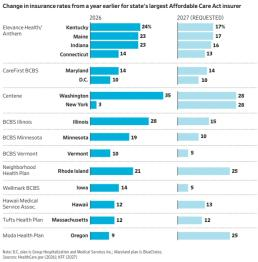
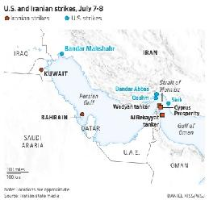
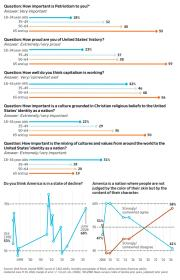
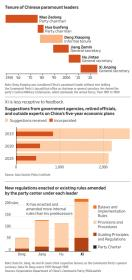
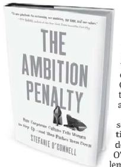
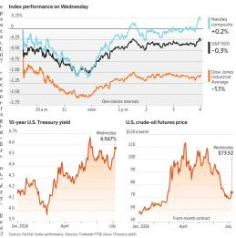
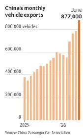
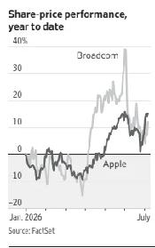
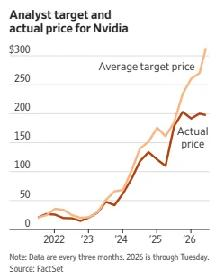
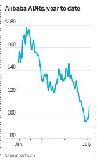

Extracted on 09 Jul 2026 — Generated by WSJReader
President says he will consider letting Kyiv manufacture Patriot missile interceptors
[Image: Ukrainian medical workers inspect the body of a person who was killed by a Russian missile strike in the city of Kharkiv.]
President Trump said he supported Ukraine striking targets deep inside Russian territory, calling it an escalation that could help end the war.
The comments mark his strongest praise yet of Ukraine’s military strategy and deal a significant blow to Russia’s efforts to keep Trump on its side in talks to end the war.
In a marked contrast to past meetings between the two leadother ers, Trump opened his session with President Volodymyr Zelensky on Wednesday by offering warm words and fresh promises of military cooperation with Ukraine, providing a major boon for Kyiv and its supporters in Europe. Trump praised Ukraine’s bravery, signaled he would consider granting Kyiv a license to produce U.S. Patriot missile interceptors and said he would consider traveling to Kyiv at the right time in peace talks.
Ukraine has run critically low on Patriot missiles, which have been used to intercept Russian ballistic missiles. The shortage left its capital and cities exposed during deadly large-scale Russian attacks this summer. The path from licensing rights to standing up production lines for Patriot interceptors could take years, and Trump didn’t offer more specifics on the plan.
“It’s an escalation, but it’s also an escalation that could help lead to an end,” Trump said of backing Ukrainian strikes deep inside Russian territory. He spoke during a session with the Ukrainian president at the NATO summit in Ankara, Turkey, on Wednesday.
Ukraine is also making a fresh push with the Trump administration to obtain Starlink access over Russia as it seeks to expand its strikes on energy and military infrastructure deep inside the country, officials familiar with the matter said.
Zelensky discussed the matter with U.S. lawmakers and other allied officials ahead of his meeting with Trump on
[Image: A Starlink communications system is linked to an attack drone.]
Wednesday, the officials said.
Starlink, the satellite internet service of Trump ally Elon Musk, has become a crucial part of Ukraine’s war effort over Ukrainian-controlled airspace, including Crimea. Unfettered Starlink access over Russian airspace could allow Ukraine to strike targets with more precision, including potentially the sites of Russian ballistic-missile launchers aimed at Ukraine as Kyiv’s stockpile of air defense interceptors dwindles.
Ukraine’s demand for Starlink access comes as part of Zelensky’s strategy to pressure Moscow by stepping up strikes on military sites and oil-production facilities deep inside Russian territory and Russian-occupied Crimea.
If Ukraine receives the support from Western allies that it needs, “we will swiftly create the conditions under which Russia will be forced to choose peace,” Zelensky said in June, referring to his previous discussions with allies at the Group of Seven summit in France in June.
During the more-than-fouryear-old full-scale invasion, Ukraine and Russia have relied on Starlink satellite technology for battlefield communication and drone guidance, allowing them to maintain connections and withstand jamming at long distances.
Although Starlink isn’t activated in Russia, a black market for user terminals sprung up with middlemen shipping them to Russian forces. This partially eroded the battlefield communications advantage Ukrainian forces enjoyed earlier in the war.
In February, Musk said his company stopped the “unauthorized use” of the terminals by Russia after Ukraine appealed for help, saying the technology aided Russian drone attacks on civilian cities. The shutdown curbed Russia’s battlefield advantage in targeting Ukrainian logistics this winter and forced Russian forces to look for alternatives for battlefield communications.
Starlink and the White House didn’t respond to requests for comment.
The meeting between Trump and Zelensky stood in contrast to the fiery encounter the two leaders held in early 2025 after Trump first returned to the White House. The new meeting indicated that the president is taking a much more pro-Ukraine tack in his efforts to end the war between Russia and Ukraine.
Trump, a Republican, has drawn criticism from European allies and U.S. lawmakers on both sides of the aisle over some of his efforts to broker peace with proposals that were seen as heavily favoring Moscow. But Trump said the U.S. is maintaining pressure on Russia and he is in talks with President Vladimir Putin of Russia to try to end the war.
Senior European officials said Putin hasn’t altered his ambitions of subjugating Ukraine, despite Russia suffering steep battlefield losses and significant economic woes as a result of the war.
Zelensky met on Wednesday with a group of Republican and Democratic lawmakers who attended the summit before his meeting with Trump, including Sen. Jeanne Shaheen of New Hampshire, the top Democrat on the Senate Foreign Relations Committee and Sen. Lindsey Graham of South Carolina, a top Republican ally of Trump on Capitol Hill who supports Ukraine.
Zelensky told the lawmakers that Russia is suffering more than 30,000 casualties a month and suggested the Russian people were turning against Putin as the war dragged on and casualties and economic losses mounted, people familiar with the meeting said.
Republican and Democratic lawmakers alike have pushed Trump to ratchet up pressure on Putin through more military support for Kyiv and more economic sanctions on Russia, though a key bipartisan Russia sanctions bill has stalled in Congress for over a year.
North Atlantic Treaty Organization officials and lawmakers who met with Zelensky at the Ankara summit described a leader who was upbeat and confident that Ukraine had turned the tide of war against Russia. It marks a significant shift from the previous NATO summit one year ago, when a much more sober Ukrainian leader agonized over tensions with Trump and the prospect of losing ground in the war amid a drawdown in U.S. military aid.
Trump asked Zelensky if he would ever travel to Moscow as part of peace talks. Zelensky smiled and said “It’s difficult. There are lots of Ukrainian drones there.”
Business & Finance
♦ Some of the biggest Obamacare companies are seeking hefty premium increases for 2027, often for the second year in a row. A1
♦ Global oil prices surged 5.2% in their steepest oneday jump since May after Trump said the truce with Iran is over. The Dow and S&P 500 fell 1.1% and 0.3%, respectively, while the Nasdaq rose 0.2%. B1
♦ Blue Origin, Jeff Bezos’ space company, is working on a $10 billion funding round that would value the company at $130 billion, a person familiar with the matter said. B1
♦ A Trump family crypto venture that channeled more than half a billion dollars to the family is in talks to sell is core business to blockchain tech company Perpetuals.com. B1
♦ Burger King restaurant operator Minor Food is planning an IPO that could become Singapore’s largest food-and-beverage listing in years, according to people familiar with the matter. B3
♦ Air Canada ventured outside the company and country for its new CEO. B3
♦ China’s auto sales remained weak in June, with retail sales of passenger cars slumping 20.2% in the first half. B3
♦ Apple plans to spend more than $30 billion with Broadcom in the next five years as it ramps its investment in U.S.-made chips. B4
♦ China said it has found “security backdoor vulnerabilities” in Anthropic’s popular Claude Code. B4
Worldwide
♦ Trump said he believed his ceasefire deal with Iran was over shortly before the U.S. launched more strikes on the country as retaliation for attacks on ships in the Strait of Hormuz. A1
♦ The president said he supported Ukraine’s strikes deep inside Russia, calling it an escalation that could help end the long war. A1, A5
♦ Democratic nominee Graham Platner said he would halt his campaign for Senate in Maine, after he was publicly accused of sexual assault. He continued to deny wrongdoing. A2
♦ A federal judge ordered Trump to pay the $5 million in damages to writer E. Jean Carroll after the Supreme Court declined to hear his appeal of the defamation and sexual-abuse verdict. A3
♦ An Idaho mother who said her twin toddlers died after getting routine vaccinations has been indicted on charges of murder, accused of suffocating them. A3
♦ A former Wisconsin judge was spared prison after being convicted of obstructing federal agents seeking to arrest an immigrant. A3
♦ Just under half of Americans say capitalism is working very well or even somewhat well, down from 60% who said so about a decade ago, according to a new Wall Street Journal-NORC survey. A4
♦ The Trump administration is pressuring Cuba’s government by zeroing in on one of its few remaining sources of hard currency: the doctors and nurses it deploys abroad. A7
TUCSON, Ariz.—Costco cashier Tony Barzar unloaded his lunch in the breakroom, clocked in and headed for the checkout, just as he has for much of the past four decades.
That day, like most days, the 60-year-old Barzar was assigned to the self-checkout area, a cluster of six registers. At 9:02 a.m., the first shoppers were ready to ring themselves up.
“Right here, ma’am!” Barzar said, gesturing for a customer in line to move to an open register. “How ya doing today, sir? Find everything all right?” he said to another as he circled the registers with a scanning gun.
Long-tenured workers like Barzar are Costco’s secret weapon. They are reliable and experienced, able to speed shoppers through a checkout line and serve as mentors to newer workers, passing down the company’s unique culture, Costco executives said.
Barzar’s pay and benefits reflect his value to the company. He earns $32.90 an hour, and the holdings in his 401(k) have boosted his retirement savings to more than $1 million, he said. His Costco-sponsored healthcare has a regular visit copay of $15, and a specialty visit copay of $25, below the national average. In 2009, Barzar’s family bought a three-bedroom, twobath house with a pool, and they have traveled to Europe twice over the past decade.
As a younger person, “I didn’t think me and my family would reach where we sit now,” he said. “I could retire, but what would I do? Costco has been good to me.”
[Image: Tony Barzar, on the job in Arizona, is one of many Costco workers who have more than $1 million in their 401(k) retirement savings accounts after years of employment.]
Costco has long paid more than most U.S. retailers to help keep turnover low, a strategy company founders felt would reduce costs associated with training new hires and lead to better customer service. Turnover after one year of Costco employment is about 7%, a fraction of industry averages.
In recent years, many Costco stores have created the role of “culture coach” for long-tenured hourly workers like Barzar to act as official mentors even if they aren’t supervisors—an effort to more explicitly use their knowledge to train workers. It has also boosted the maximum pay hourly workers can earn to $32.90 from $31.90, increased its annual bonus and added an extra week of vacation for workers who have been with the company at least 30 years.
Costco’s effort to keep hourly workers longer, even those, like Barzar, who don’t want to be promoted, is counter to how many employers view their workforce. Longtenured employees are typically more expensive, and those who aren’t interested in promotions are sometimes seen as less valuable.
“Many thousands” of Costco’s U.S. hourly workers have over $1 million in their 401(k) accounts, said Gary Millerchip, the retailer’s chief financial officer. The company’s investments in workers mean that they stay for a long time, then retire, but “you have a pipeline of employees coming behind that group that also are building that level of experience,” he said. It’s also cheaper long term, he said.
Costco’s annual sales have grown for nearly two decades. Its stock has increased more than 2,000% during that time, to a current valuation of $951.60 from a low of about $40 a share in the wake of the 2008 recession.
Costco trains managers to view cashiers as specialists, experienced employees who can make or break a member’s experience by speeding lines and offering friendly conversation—or not. The fastest traditional cashiers check out around 70 shoppers per hour. The average is about 57 per hour. Self checkouts are slower, according to Costco’s internal data, but some customers prefer them, workers and executives said.
Barzar’s career at Costco reflects the retailer’s approach to retention. After he did a brief stint in community college, then at a local grocery store, a friend told him Price Club, a precursor to Costco, was a good place to work. Barzar applied for a job gathering carts in the parking lot of the Tucson store in 1986. He earned $5.85 an hour, up from around $3 at the grocery store, he said.
Costco bought the Price Club chain in 1993 and transitioned its pension to a 401(k). Barzar started to put a small amount of his paycheck into the account.
After a few years, Barzar became an early-morning stocker, unloading trucks and stamping boxes with a label gun. Five years later, “the mornings were getting to me,” Barzar said. He’d had his first child and craved a more regular schedule. He worked counting and greeting shoppers entering the front door, then was given a role as a cashier. His hourly pay moved to about $10 an hour.
That job stuck. He enjoyed handling the money and talking to customers.
Barzar considered other jobs. In his 20s, he applied to become a firefighter several times, following in an older brother’s footsteps, but couldn’t pass the entrance exam, he said. That disappointment was countered by Costco’s growth. “It just gave me a sense of—don’t leave, ride this one out,” he said.
He also stayed because of the pay and benefits, he said. That became acute last year when his son-in-law ended his life, then months later his wife of 26 years, a former Costco employee in the bakery department, was diagnosed with stage 3 brain cancer. His Costco health insurance covered the full cost of his wife’s three surgeries. Barzar took paid leave for nearly a year to help his family. He also used the retailer’s therapy benefits to cope, he said, which further drove home how comprehensive the insurance was. “You don’t have any idea how deep it goes until something tragic happens,” he said.
He returned to work parttime without a pay cut.
Barzar makes a good selfcheckout employee because he is outgoing, attentive to detail and his voice carries, said Erik Fila, a register-area supervisor.
About every 30 minutes, front-end supervisors like Fila get a count of how many member cards have been scanned at the entrance, a gauge of how many shoppers will show up at registers about a half-hour later.
As of 9:30 a.m., 157 member cards had been scanned. By 10 a.m., the count was 337 cards.
Barzar put his comfortable black Hoka sneakers to good use as he rapidly circled the bank of self-checkout registers with a scanner gun in hand.
Several longtime shoppers greeted Barzar like an old friend. “I came to get my hug,” said a shopper who gave him one.
Barzar has been asked to become a supervisor but has declined. He likes the direct contact he has with shoppers as a cashier and feels he can act as an effective mentor to other employees, in part because he isn’t their boss.
“I would say this is my calling, right where I’m at,” he said.
Rates for many Affordable Care Act plans rose by double digits this year. Insurers want to do the same next year.
Some of the biggest Obamacare companies are seeking hefty premium increases for 2027, often for the second year in a row. In Washington state, Centene is asking for a 28% increase, after boosting rates by 35% in 2026. Blue Cross and Blue Shield of Illinois wants 15%—on top of a 28% increase this year.
“It is a stunning jump” when you add both years together, said Cynthia Cox, senior vice president at KFF, a health-research nonprofit.
At the request of The Wall Street Journal, KFF analyzed the rate requests for the largest ACA plans by enrollment in 15 states where insurers’ 2027 filings have already become public, as well as the District of Columbia.
Surging ACA premiums are likely to become a focus in the midterm elections, with Democrats expected to emphasize healthcare affordability.
ACA insurers said they are dealing with the same factors that pushed premiums up in 2026. Healthcare spending, including on pharmaceuticals and hospitals, is still rising rapidly.
At the same time, insurers said they expect the impact of reduced federal subsidies, which kicked in at the start of 2026, to roll through next year as well. Facing sharply higher insurance bills, millions of policyholders are dropping ACA plans, leaving a smaller group of enrollees who are generally less healthy, and thus costlier to cover.
Already, the number of
Obamacare policyholders fell to 19.2 million as of February, from 22.1 million a year earlier. Actuaries said more people are likely to leave later this year and next.
“Enrollment continues to drop, while the risk pool continues to deteriorate,” said Michelle Anderson, a consulting actuary at Wakely Consulting Group.
Health Care Service Corp., the parent of Blue Cross and Blue Shield of Illinois, said its requested rates reflect “rising cost of care and evolving federal and state requirements.”
Centene, which is seeking a 28% increase in New York in addition to its Washington request, declined to comment.
Another major national ACA player, Elevance Health, is asking for double-digit premium boosts in Indiana, Connecticut, Kentucky and Maine. Elevance declined to comment.
KFF calculated the median increase across 77 publicly available ACA rate filings for 2027: 14%. For 2026, the median final rise across all ACA plans was 20%.
Insurers’ 2027 ACA rates have to be reviewed by regulators, and the premiums finalized in late summer might be different from these early requests.
ACA policyholder Raquel Vokenroth said she is worried about whether she will be able to hold on to her insurance next year. A legal assistant in Rapid City, S.D., Vokenroth, 52 years old, paid about $450 a month for her health plan last year, with the help of a subsidy.
This year, her monthly insurance cost shot up to around $1,260, more than her mortgage payment, because she no longer qualified for the scaled-back federal support. Despite help from her employer, the extra expense meant she had to cut her retirement contributions.
Now, she is bracing for the likelihood of higher premiums in 2027, though it isn’t clear how much they will rise. Rate filings aren’t yet public in South Dakota. “Everything is going up, you know, fuel, groceries, just everything,” Vokenroth said.
In another sign of strain, more insurers are pulling back from the ACA market.
Cigna Group will stop selling plans next year, after CVS Health’s Aetna left in 2026. The exits and other uncertainty have led to insurers giving priority to stable profit margins and seeking higher rates, said Jeremy Kush, a consulting actuary at Milliman.
Insurers cited a variety of factors that are driving up their costs, such as the rising use of certain medical services and growing spending on specialty drugs for conditions including cancer.
“When the cost of care goes up, the cost of insurance goes up,” said David Merritt, a senior vice president at the Blue Cross Blue Shield Association.
Blue Cross and Blue Shield of Minnesota flagged the growing role of artificial-intelligence billing tools that help healthcare providers “document and submit a greater number of patient conditions and risk factors in order to receive higher payments.”
Some insurance companies are also blaming a federally mandated negotiating process for out-of-network bills, which has led to costly settlements.

U.S. launches fresh strikes after Trump’s threats in latest sign of talks unraveling
Tensions with NATO allies about the Iran war were on full display.
ANKARA, Turkey—President Trump said he believed his ceasefire deal with Iran was over shortly before the U.S. late Wednesday launched more strikes on the country, extending a skirmish that began with Iranian attacks on ships in the Strait of Hormuz and snarled efforts to reopen the strategic waterway.
U.S. Central Command said the Wednesday strikes on Iranian targets were designed to “further degrade their ability to threaten freedom of navigation in the Strait of Hormuz.”
Explosions were reported in Bandar Abbas and Sirik, the same sites the U.S. hit in Tuesday night’s round of attacks, according to Iranian media. The attacks were broader in scope than Tuesday’s, hitting many of the same targets as well as missile and drone storage areas around the Persian Gulf, a senior U.S. official said.
The U.S. also struck bridges that it said were being used by Iran’s military to transport missiles, drones, parts and other materiel, the official said.
On social media, Trump called the strikes retribution for Iranian attacks on commercial ships near the strait this week. Later, on his way back to Washington from a North Atlantic Treaty Organization summit in Ankara, Trump said on Air Force One that Iran called him seeking a deal. “They want to make a deal so badly,” he said. Iran has said nothing about new talks.
Iran responded to the strikes by attacking Bahrain and Kuwait, which host U.S. bases. Both countries reported being targeted and asked their citizens to seek safety. Kuwait announced on social media that its air defenses were confronting missile and drone attacks. U.S. Central Command didn’t respond to questions about the strikes.
The latest strikes were the starkest sign yet that efforts to clinch a permanent peace agreement are unraveling. In addition to ordering strikes on Tuesday, Trump also revoked a license allowing Iran to sell oil on the open market, eliminating the primary economic benefit for Tehran of an interim peace deal with the U.S.
“We hit them very hard last night…we’ll probably hit them hard again tonight,” Trump said at the NATO summit before the latest strikes.
During the Wednesday remarks, Trump called Iran’s leaders “scum,” “liars,” and “vicious, violent people,” threatened to reimpose a naval blockade on Tehran, and raised the prospect of targeting civilian infrastructure in future military strikes.
After the later exchange of U.S. and Iranian attacks, Iran’s parliament speaker and chief negotiator, Mohammad Bagher Ghalibaf, responded on social media: “America still hasn’t learned that bullying and breaking promises are no longer cost-free.” Alluding to Iran’s efforts to control shipping traffic, he added: “The Strait of Hormuz will only open with ‘Iranian arrangements,’ not American threats.”
Oil prices rose Wednesday and U.S. stocks finished mostly lower, with the Dow Jones Industrial Average falling 577 points, or 1.1%. The S&P 500 slipped 0.3%, while the Nasdaq composite turned slightly positive to end the day.
The new fighting was ignited by Iranian attacks on ships, including a liquefied-natural-gas tanker, in recent days.
Defense Secretary Pete Hegseth, who was with Trump in Ankara, said the Tuesday strikes targeted small attack boats, as well as underground drone and missile storage facilities, coastal defenses, radars and surveillance sites needed to threaten ships in the strait.
Trump was in the Turkish capital for a summit with NATO leaders, where U.S. tensions with Europe over the war with Iran were on full display. Trump has castigated allies for not supporting the U.S. military campaign, which some European countries opposed, and singled out NATO ally Spain, which closed its airspace to U.S. planes involved in the war.
The strikes highlighted one of the main challenges the Trump administration has faced throughout the war: its search for leverage over Iran after the regime weathered a blistering air campaign, dug in and resisted efforts to force concessions on key points.
Little progress has been made in talks since an initial meeting between the two sides in Switzerland.
“Both sides are trying to drive the negotiations in their favor, and the strikes are now part of the negotiation,” said Bryan Clark, a former senior Pentagon official and now a senior fellow with the Hudson Institute in Washington.
The U.S. and Israel launched the war against Iran on Feb. 28 with a series of strikes that took out the country’s top leadership and hit military sites around the country.
Iran responded with attacks on its Arab Gulf neighbors and by shutting the Strait of Hormuz, the passageway for 20% of the world’s oil, tactics that roiled global energy markets.
Fearing greater economic damage, Trump signed a memorandum of understanding with Iran in June that called for pausing the war for 60 days and reopening the strait while the countries negotiated issues including potential curbs on the Iranian nuclear program.
Iran has asserted sole control over the waterway, warning ships against using unapproved exit routes and striking several of them since the deal was signed. The strait was open to international shipping without constraints or fees before the war.
Tensions with NATO allies about the Iran war were on full display.

Democratic nominee Graham Platner said he would abandon his campaign for the Senate in Maine, ending a run for office that had drawn broad grassroots support but was plagued by a growing series of controversies.
Platner’s decision came just days after he was publicly accused by a former romantic partner of sexual assault, which he denied. The move allows the state Democratic Party to find a replacement on the November ballot to face incumbent GOP Sen. Susan Collins, in what Democrats consider a must-win seat in their fight to take back the chamber.
Platner announced his exit in a video Wednesday night, in which he blamed the media and political establishment for acting as “judge, jury and executioner” and continued to deny wrongdoing.
In the 11-minute video, Platner said he was targeted by Democratic forces that oppose his brand of populist politics and were desperate to get him out of the race. The sexual-assault accusation prompted top
[Image: Graham Platner posted his decision on social media.]
Senate lawmakers and close allies to rescind their endorsements, cut off funding and call for him to drop out by Monday, the deadline set by state law. Platner said he would file paperwork to officially withdraw from the race.
“This was the last week to try to get me off of the ballot, and that’s why this is occurring,” said Platner. “We believe that for the movement to continue, it can’t be me. And for that reason, we are suspending campaign operations,” Platner said.
Democrats are scrambling to find a backup candidate to face Collins, with a deadline, also set by state law, of July
27 to put a new name on the ballot. The party’s state committee has been in a public confrontation with Platner’s campaign over what role Platner and his supporters would have in picking a nominee.
Just before Platner’s announcement, the Democratic State Committee of Maine announced that it would hold a nominating convention, but it didn’t lay out details of who would attend or what the threshold for winning the nomination would be set at. Platner, in his video, cited his overwhelming victory in the June 9 Democratic primary, when he carried more than 70% of the vote, to argue that his supporters should have a clear role in the process.
“We did it the right way,” he said of his primary victory. “We built a campaign. We engaged in electoral politics. We motivated people. We banded together. We did it the way we were told we are supposed to make change. We won. And now they are not going to let
us have it. Not if it’s me.”
Platner’s scandals and exit from the race have jeopardized Democrats’ chances of taking back the majority in the Senate, which Republicans control 53-47. Collins is the only GOP senator seeking re-election in a state that voted Democratic in the 2024 presidential election, making her the chamber’s most vulnerable Republican.
If Democrats lose Maine,
their path to the majority is far more difficult. They would have to win several states normally considered solidly Republican, such as Texas, Ohio and Iowa.
Potential Democratic replacement candidates in Maine include former state Senate President Troy Jackson, state Secretary of State Shenna Bellows and onetime state health director Nirav Shah. All three competed in the recent Democratic primary race for governor but finished behind former state House Speaker Hannah Pingree. Another possible candidate is Maine Beer’s cofounder, Dan Kleban.
Platner, a 41-year-old Marine combat veteran and oyster farmer, rose from political obscurity to win his party’s Senate nomination after drawing crowds and donations on an argument that both political parties had betrayed Maine’s workers by favoring corporations and the wealthy. He easily pushed aside the candidate Democratic leaders
had favored, Gov. Janet Mills, who dropped out in April.
But he faced scrutiny for months over old Reddit posts with problematic comments, a covered-up Nazi-linked tattoo and an admission that he sent sexually explicit texts to women while married.
The executive director of the Maine Democratic Party Tuesday night had accused Platner of repeatedly trying to put a “thumb on the scale of what this process looks like” to choose his successor. A Platner campaign official disputed the account but confirmed the campaign had reached out to the party “to try and understand what this process would look like.”
In an incident reported earlier by Politico, Jenny Racicot, a 41-year-old Maine resident, said Platner forced himself on her about five years ago and had nonconsensual sex with her after she told him repeatedly to stop. She had previously told the New York Times that he didn’t respect women
and that she had cut off contact with him after finding his behavior “reckless” and “unsettling.”
Following the allegation of sexual assault, Democratic Party leaders and close allies urged Platner to quit the race. Influential progressive Sen. Bernie Sanders (I., Vt.) said he had spoken with Platner and “in light of these very serious allegations, I have recommended that he step aside.”
Platner launched his campaign in August after progressive strategist Dan Moraff encouraged him to run. Moraff rushed the vetting process, asking a research firm for an expedited, cheaper review to be done within days, The Wall Street Journal previously reported.
Regulators warn about faulty inflaters marked as made by Chinese company
Eui Seok Kang lost control of his Chevrolet Malibu in torrential rain late one night in October 2023, spun sideways across two lanes of a Texas road and was struck by a pickup truck. When his air bag deployed, it tore apart his jaw.
“I couldn’t breathe, I felt like something was stuck in my throat,” Kang recalled in an interview. He lost half of his lower jaw, most of his lower teeth and some upper teeth. Over the next month, he underwent three surgeries, including for an infection and facial reconstruction.
The air bag, it turned out, had been purchased on eBay and installed by the Texas dealership that sold him the used car. When he crashed, it sent metal shards flying into
[Image: Eui Seok Kang was severely injured when his air bag exploded in a 2023 crash. In NHTSA’s order banning some imported airbag parts, it included photos as examples of markings on those parts. Kang shows images of how his jaw was reconstructed.]
Kang’s face.
Kang survived, which made him luckier than others. The aftermarket air bag in his Malibu contained a dangerous component tied to at least 10 fatalities in the U.S. since 2023, according to a later report by federal safety officials and a government email reviewed by The Wall Street Journal. Three others have been severely injured, including a driver as recently as June in Louisville, Ky.
The National Highway Traffic Safety Administration is racing to stop more drivers from being killed or injured by airbag parts it says appeared to originate from the Chinese manufacturer called Jilin Province Detiannuo Safety Technology, also known as DTN Airbag.
In a response to NHTSA in April, that company said it doesn’t do business in the U.S. and that it believes the part in question, which was stamped with a serial number associated with the firm, was “a counterfeit of our product manufactured by another company.” The company and lawyers previously representing DTN didn’t respond to requests for comment.
Air bags have saved tens of thousands of lives, but they can pose dangers to drivers when improperly assembled replacements are installed in used cars whose original bags have deployed in a previous accident. Such replacements, sometimes labeled with counterfeit logos of American carmakers, are widely available online. That counterfeit supply chain has long been a concern for automakers, who employ teams to scour for fake parts out of reputational fear and to protect customers.
In April, NHTSA, the top U.S. auto-safety regulator, banned the sale and import of air-bag inflaters marked with a DTN part number. It said the inflaters—a component that ignites and rapidly fills an air bag during a crash—were likely imported illegally into the U.S. and put inside air bags that were then sold online as aftermarket replacements. NHTSA ordered “each manufacturer, including each importer, of the inflaters to conduct a recall,” without naming any company.
Recalls of automotive components are usually a straightforward process. An automaker notifies owners that their vehicle contains a defect and needs to be repaired.
In the case of air bags containing DTN-marked inflaters sold in the aftermarket, a traditional recall is unlikely if not impossible, NHTSA Administrator Jonathan Morrison said in an interview. Normally, carmakers can easily trace where potentially problematic parts originated and how they were imported, but with the substandard air-bag parts, there are no records of who sent them to the U.S. and distributed them. Morrison said the agency found that some aftermarket inflaters have been brought into the country stuffed inside items like toys and dollhouses. “This is a really unusual situation,” he said.
The only way for drivers to know if the parts—or counterfeit versions of them—are even in their cars is to pay to have a mechanic inspect them.
As a result, NHTSA investigators have been forced to play a game of whack-a-mole against a complex, gray-market supply chain to figure out which cars might have had air bags with the parts installed, according to emails and documents reviewed by the Journal.
In a January email to a colleague and others, an NHTSA investigator said it was nearly impossible to determine how many more of the DTN-branded inflaters might explode. “As far as predicting future rupture events,” he wrote, “I think the estimate would be close to a wild guess as many of the factors cannot be determined.”
Morrison said the agency is taking a multifaceted approach to addressing the problem, which represents an extraordinary risk of death or injury in a crash. “This is, to my knowledge, unprecedented,” he said.
Over the past decade, more than a dozen people have been convicted for selling counterfeit air bags, most recently a North Carolina Department of Transportation employee, according to Justice Department news releases and court documents reviewed by the Journal.
The oversight of such aftermarket air-bag products is limited, government officials and industry experts say. And the ease with which counterfeiters can move parts through the internet has so far made it impossible to account for how many air bags with DTN-branded components are in used cars on the road today. NHTSA said that, despite substantial efforts, it has been unable to obtain “sufficient information” to estimate the number of inflaters in the U.S.
Murky market
The practice of reusing parts from junked cars is common in the U.S. Every year, some four million vehicles are recycled in the U.S. Auto-repair shops around the country often use such recycled parts.
If an air bag is deployed, a replacement is needed to safely get a car back on the road. Automakers sell certified replacements. Counterfeit air bags have sold for as little as $100 on websites such as eBay and Facebook Marketplace, according to court documents and interviews with government officials and carmaker representatives.
EBay said it works diligently to prevent and remove unsafe product listings, that it prohibits counterfeit products and is cooperating with the NHTSA in its investigation. Facebook said its rules prohibit the purchase, sale or trade of certain vehicle parts and accessories, including air bags. Amazon said it prohibits the sale of air bags and airbag parts.
Regulators said DTN-branded inflaters that wound up in cars and killed Americans were likely manufactured in 2021 and 2022.
In 2023, Destiny Byassee, a 22-year-old mother in Florida, died after the air bag in her Chevrolet Malibu exploded during a crash, a police officer who investigated the accident told the NHTSA. The vehicle had previously been involved in another collision in which the air bags deployed, and the replacement part contained a DTNmarked part, according to a NHTSA filing and court records in a lawsuit alleging negligence in the air-bag part’s design and installation of it in her car.
Andrew Parker Felix, who represented Byassee’s family in the lawsuit, said it was complicated to unpack what had happened. The 2020 Malibu had previously been owned by carrental firm Enterprise, before an accident that resulted in the Manheim auction company selling it to a Florida repair shop for $9,000, according to the lawsuit and transaction records.
The repair shop, Jumbo Automotive, bought an air bag in November 2022 on eBay from seller “ffnn2002,” later found to be a Michigan resident who shipped the air bag through the mail a day later, according to the family’s lawsuit.
When repairs were complete, Jumbo resold the car through Manheim for $18,000 to usedcar dealer Drivetime, which then sold it to Byassee, records show. Haim Levy, Jumbo’s owner, said he reached a settlement in the case, declining to comment further.
Drivetime said it purchased the vehicle at auction from Jumbo and that there was no disclosure of any accidents or air-bag repair. Drivetime said it has continued to cooperate with law enforcement in the matter.
Manheim said in a written statement that its role is to facilitate wholesale deals between buyers and sellers, that sellers are required to disclose safety issues, and that it was dismissed from the case pretrial.
Enterprise declined to comdeposition ment, but has said previously it wasn’t involved in the Malibu repair.
When the lawsuit was filed in mid-2024, government authorities were learning more about how such air bags were filtering into the U.S.
Over a two-year period through the spring of 2024, Mateen Mohammad Alinaghian, a former North Carolina state transportation department employee, imported about 2,500 counterfeit air bags into Raleigh, N.C., with counterfeit markings of several automakers, including Chevrolet and Honda, then sold them to buyers on Facebook Marketplace, according to Justice Department statements and court documents.
Law-enforcement officers raided Alinaghian’s home and found a few dozen air bags, then seized packages from the United Kingdom en route to him. Alinaghian was later sentenced to a year and a day in prison. Alinaghian, through his lawyer, declined to comment.
NHTSA has sought information from eBay and Facebook owner Meta about the companies’ oversight and ability to police counterfeit air bags on their websites.
Meta said in a letter to NHTSA that it provides digital infrastructure for third parties to list items in accordance with internal policies, and doesn’t provide warehousing or delivery services.
EBay said in its own letter that courts have held that it isn’t liable or responsible for defective or illegal products sold on its website, and that it “only acts as a publisher of sellers’ listings.”
Used-car repairs
Saad Attar owns the Fort Worth, Texas, dealership that sold the 2020 Malibu to Kang, whose jaw was disfigured in the crash. Attar, an electrical engineer who lived in Iraq until 2008, buys vehicles at auctions, makes repairs, then resells them, according to a deposition in a lawsuit that arose from the incident. (Attar’s name was redacted in a published by NHTSA; Kang’s lawyer confirmed the person being questioned was Attar.)
In August 2022, Attar bought the Malibu for $7,000 at auction, records show. At the time, the car had front-end damage from an accident that caused air bags to deploy. Attar said he taught himself how to install air bags. After acquiring the Malibu, he bought one on eBay.
The lawsuit alleged that the eBay air bag seller was a man named Brian Handal. A lawyer for Handal said he was dismissed from the suit, but declined to comment further.
Attar said the air bag seemed legit. “It has the seal on the bag,” he said in his deposition. “It says GM, the sticker for GM, that’s another proof that this is the origin.” After having the air bag installed, he sold the car to Kang—who had come to the U.S. to attend flight school—in mid-2023 for around $14,000, according to the deposition.
Attar declined to comment. His lawyer said the lawsuit has been settled.
Kang spent a month in the hospital after the accident. He continued to receive treatments back in South Korea, including tooth implants and having skin moved from the back of his neck to his chin to enable him to close his lips and talk properly. He eventually flew back to the U.S. to finish flight school and got married.
Kang said it bothers him that others have died in similar incidents, and that other used cars might have the same problem. “You can’t exactly tell someone not to buy a used car,” he said.
Regulators received more reports of fatal explosions involving parts that appeared to be DTN’s in 2024 and 2025. A 17year-old girl in Utah in a car her mom bought for her birthday. A middle-school English teacher in Oklahoma. A 20-year-old Mississippi man. An autopsy report on an Arizona man who died in a crash noted a large shard in his neck that had a DTN serial number inscribed on it.
In January, the NHTSA created a page on its website dedicated to DTN. It assembled a team of engineers, defect investigators and lawyers to determine how to wield a seldomused enforcement power to ban the dangerous parts.
In April, NHTSA said it believed the parts were clearly defective and planned to ban the sale of DTN’s inflaters.
Shortly after, DTN said it believed the inflaters were counterfeits manufactured by another company, and that “the related accidents were not necessarily caused by a defect in the inflater.” It called for the NHTSA to “reassess its preliminary decision and terminate this investigation against DTN.”
The NHTSA, while acknowledging DTN’s counterfeit argument, banned the sale and import of air-bag inflaters bearing a part number associated with DTN.
Felix, a lawyer in the Orlando office of Morgan & Morgan, has represented seven families with members in fatal accidents who have alleged that DTN inflaters exploded in otherwise survivable crashes.
The lawsuit involving the 22year-old Byassee’s fatal crash went to trial in June in South Florida. In an earlier court filing, DTN had tried to shift blame to other possible actors, but the company didn’t appear to defend itself at trial. A jury awarded $603 million to Byassee’s family.
Fix for sinking hole at golf course stokes old debate
The principle of shoreline access has long been core to Rhode Island’s identity.
Paddling up Narragansett Bay, a kayaker spotted a strange new development between the Quidnessett Country Club and the sea: a heaping pile of rocks.
[Image: The country club says the wall is needed to keep its signature hole from slipping into the sea.]
Then all hell broke loose. First came the phone calls: the kayaker alerted activists, who informed the state, which dispatched a team of investigators to inspect the stone structure. The wall, two football fields long and 20 feet tall, stood between the 14th hole of the club’s golf course and the water. State officials, convinced it had been built illegally, issued fines and demanded its destruction.
In Rhode Island, rising sea levels, erosion and a centuries-long debate over shoreline access have made coastal development a lightning rod. Yet no issue has animated locals quite like the Quidnessett seawall, which has spawned tense hearings, lawsuits, countersuits, investigations and a boycott.
“It looks like it was dropped onto the site from Mars,” said Topher Hamblett, executive director of Save the Bay, an advocacy group.
The family business that runs the club insists the wall was necessary to prevent the 14th hole from slipping into the sea. Erosion has eaten away at the course for years, Jan Companies says, thrusting its future into uncertainty.
Lawyers for the club argue that the 526-yard, par 5 is its signature hole, the hardest and most aesthetically pleasing on the course.
Their defense rests partly on the threat of a doom spiral: Without the hole, the club couldn’t host professional tournaments. Without tournaments, the property value would sink along with the dirt and turf.
So an array of contractors built the wall out of stone and cobble in the dead of winter without a permit. And nobody’s been able to stop talking about it since.
What the pile of rocks is depends on who you ask. The club’s lawyer calls it a “shoreline-protection facility.” Former Justice Department attorney Bradford Whitman, who now advocates for shoreline access in Rhode Island, dubs it a “monstrous wall.” State Attorney General Peter Neronha calls it “willful, reckless, or wicked, as amounted to criminality.”
The Jan Companies didn’t
respond to requests for comment.
Environmentalists say the wall will accelerate erosion elsewhere while starving the neighboring salt marsh of sediment, hurting wildlife. Fishermen say they now need to wade into the water to walk along the coast.
Some of the backlash is a class dynamic, says Tim
The principle of shoreline access has long been core to Rhode Island’s identity.
Cranston, an area historian. The country club opened in 1960 in North Kingstown on land that was traditionally a “playground for the wealthy,” he said.
But Rhode Island is also fussy about its beaches. When King Charles II gave Rhode Island a royal charter in 1663, he stipulated that his “loving subjects” wouldn’t be stopped from “using and exercising the trade of fishing upon the coast.”
As Rhode Island grew, the principle of shoreline access remained core to its identity. Officials are required by the state constitution to let the public swim, fish and collect seaweed along the state’s 400 miles of coastline. So when people build walls, others often raise red flags.
But property owners have pushed back as the strip of land between buildings and the ocean has shrunk. “People are taking matters into their own hands,” said Hamblett. “They’re armoring the shoreline with rocks and cement walls, sometimes without permits. And Quidnessett is the poster child.”
When legislators proposed a bill arguing that the public shoreline extended 10 feet beyond the high-tide line, for example, landowners protested. Local property owner Jon Janikies testified that the bill would allow the public to “destroy” his outdoor patio.
Janikies’ father, Nicholas Janikies, took control of the Quidnessett Country Club In 1982. The family has built out a portfolio of restaurants, ice cream shops and country clubs. Quidnessett was the crown jewel—until the 14th hole started to sink.
The company’s lawyer says roughly 50 feet of golf course has slipped off the club’s seaside edge over the past three decades.
In 2012, the club applied for a permit to build a giant steel wall to stop the erosion. State regulators denied it. The club then lined the edge of the course with sand-filled “burritos.” Storms wiped them out in 2022.
The company calls the wall built in 2023 a last resort.
State regulators went back and forth with the company for years. Multiple parties concluded the wall was illegal. And yet it never came down.
In May, 999 days after officials first inspected the wall, the attorney general filed suit.
Rates for many Affordable Care Act plans rose by double digits this year. Insurers want to do the same next year.
Some of the biggest Obamacare companies are seeking hefty premium increases for 2027, often for the second year in a row. In Washington state, Centene is asking for a 28% increase, after boosting rates by 35% in 2026. Blue Cross and Blue Shield of Illinois wants 15%—on top of a 28% increase this year.
“It is a stunning jump” when you add both years together, said Cynthia Cox, senior vice president at KFF, a health-research nonprofit.
At the request of The Wall Street Journal, KFF analyzed the rate requests for the largest ACA plans by enrollment in 15 states where insurers’ 2027 filings have already become public, as well as the District of Columbia.
Surging ACA premiums are likely to become a focus in the midterm elections, with Democrats expected to emphasize healthcare affordability.
ACA insurers said they are dealing with the same factors that pushed premiums up in 2026. Healthcare spending, including on pharmaceuticals and hospitals, is still rising rapidly.
At the same time, insurers said they expect the impact of reduced federal subsidies, which kicked in at the start of 2026, to roll through next year as well. Facing sharply higher insurance bills, millions of policyholders are dropping ACA plans, leaving a smaller group of enrollees who are generally less healthy, and thus costlier to cover.
Already, the number of
Obamacare policyholders fell to 19.2 million as of February, from 22.1 million a year earlier. Actuaries said more people are likely to leave later this year and next.
“Enrollment continues to drop, while the risk pool continues to deteriorate,” said Michelle Anderson, a consulting actuary at Wakely Consulting Group.
Health Care Service Corp., the parent of Blue Cross and Blue Shield of Illinois, said its requested rates reflect “rising cost of care and evolving federal and state requirements.”
Centene, which is seeking a 28% increase in New York in addition to its Washington request, declined to comment.
Another major national ACA player, Elevance Health, is asking for double-digit premium boosts in Indiana, Connecticut, Kentucky and Maine. Elevance declined to comment.
KFF calculated the median increase across 77 publicly available ACA rate filings for 2027: 14%. For 2026, the median final rise across all ACA plans was 20%.
Insurers’ 2027 ACA rates have to be reviewed by regulators, and the premiums finalized in late summer might be different from these early requests.
ACA policyholder Raquel Vokenroth said she is worried about whether she will be able to hold on to her insurance next year. A legal assistant in Rapid City, S.D., Vokenroth, 52 years old, paid about $450 a month for her health plan last year, with the help of a subsidy.
This year, her monthly insurance cost shot up to around $1,260, more than her mortgage payment, because she no longer qualified for the scaled-back federal support. Despite help from her employer, the extra expense meant she had to cut her retirement contributions.
Now, she is bracing for the likelihood of higher premiums in 2027, though it isn’t clear how much they will rise. Rate filings aren’t yet public in South Dakota. “Everything is going up, you know, fuel, groceries, just everything,” Vokenroth said.
In another sign of strain, more insurers are pulling back from the ACA market.
Cigna Group will stop selling plans next year, after CVS Health’s Aetna left in 2026. The exits and other uncertainty have led to insurers giving priority to stable profit margins and seeking higher rates, said Jeremy Kush, a consulting actuary at Milliman.
Insurers cited a variety of factors that are driving up their costs, such as the rising use of certain medical services and growing spending on specialty drugs for conditions including cancer.
“When the cost of care goes up, the cost of insurance goes up,” said David Merritt, a senior vice president at the Blue Cross Blue Shield Association.
Blue Cross and Blue Shield of Minnesota flagged the growing role of artificial-intelligence billing tools that help healthcare providers “document and submit a greater number of patient conditions and risk factors in order to receive higher payments.”
Some insurance companies are also blaming a federally mandated negotiating process for out-of-network bills, which has led to costly settlements.
More officials pointed to AI build-out as a source of persistent inflation pressures
Its rate path depends on whether the forces pushing up prices will last.
[Image: Fed Chairman Kevin Warsh spoke to reporters in June.]
Federal Reserve officials broadly agreed at their meeting last month that they would need to raise interest rates if inflation stays elevated this year. They also agreed that they could stay on hold if price pressures fade soon, according to minutes of that meeting released Wednesday.
Which of those paths they take depends on something they haven’t resolved: whether the forces pushing up prices will last.
The minutes showed how they are increasingly focused on a source of inflation that barely figured in their debates a few months ago: the boom in artificial-intelligence investment. It was one of the forces, along with the war in the Middle East and tariffs, that could keep prices elevated and tip the Fed toward a rate hike, according to the written account.
Fed officials voted unanimously at their June 16-17 meeting to hold their benchmark rate in a range of 3.5% to 3.75%, where it has stood since December. They pruned any hints of future policy changes from their policy statement.
Still, investors read last month’s meeting, the first under Chairman Kevin Warsh, as a step toward higher rates because of interest-rate projections showing a larger contingent anticipating hikes. Nine of 18 meeting participants penciled in at least one rate increase by December; none had done so in March. Only one anticipated lower rates, down from 12 in March.
Even the most hawkish officials weren’t pushing to act. A few participants saw a case for raising rates at the June meeting, according to the minutes, but supported holding—a sign that the split visible in the projections was less about what to do now than about how the outlook might unfold.
Warsh didn’t submit a projection, but his repeated vow to deliver price stability—with no accompanying signal of patience—reinforced the impression of a committee leaning toward tightening.
The minutes, released with a three-week lag, showed risenergy
ing concern over the outlook for inflation. More officials pointed to strong business investment from the AI buildout as a new force that could sustain price pressures. “Several participants commented that price pressures had become more broad based, with a large share of goods and services…experiencing substantial increases,” the minutes said.
In the run-up to last month’s meeting, a prominent worry was that the Middle East conflict and the higher
energy costs it produced could broaden into stickier inflation. That fear receded immediately ahead of the meeting amid a tentative agreement to reopen shipping through the Strait of Hormuz, and oil prices tumbled.
Fed officials have leaned in to the relief. New York Fed President John Williams said Tuesday that policy was well positioned and that he expected the Fed’s preferred inflation gauge, which has been running near 4%, to fall “each of the next several months, as prices come down.”
But the premise of lower oil prices faced new questions when President Trump declared the ceasefire with Iran over Wednesday after Iranian attacks on commercial vessels drew fresh U.S. strikes.
Even if Hormuz had stayed settled, price pressures were building from another direction: the AI investment boom. Officials have flagged the surge in spending on data centers and computing power as a source of demand the economy is straining to supply.
Several have noted that a year ago, the Fed could treat tariff-driven price increases as one-off and let them pass through without a policy response because the labor market was soft enough to justify the patience. Now, with hiring steadier and fresh cost pressures arriving from energy and AI at once, that same instinct to wait carries more risk that above-target inflation gets entrenched.
The Fed cut rates three times from September to December
last year, with a majority of officials willing to tolerate a slightly longer period of above-target inflation to avoid the risk that a cooling labor market might tip into a faster, self-reinforcing rise in unemployment that is hard to reverse once it begins. In recent months, the labor market has stabilized, and “inflation’s been taking off, so then that changes how you might want to think about policy,” Fed governor Christopher Waller, a leading advocate for last year’s cuts, said during a panel discussion in Rome on Monday.
The combination of a resilient economy with new sources of price pressure sharpens the debate facing the committee at its July 28-29 meeting. Softer-than-expected payroll figures for June, released last week, suggested less risk of a reaccelerating labor market and could instead reinforce the case for patience. Officials will receive readings on June consumer prices next week.
Its rate path depends on whether the forces pushing up prices will last.
Democratic nominee Graham Platner said he would abandon his campaign for the Senate in Maine, ending a run for office that had drawn broad grassroots support but was plagued by a growing series of controversies.
Platner’s decision came just days after he was publicly accused by a former romantic partner of sexual assault, which he denied. The move allows the state Democratic Party to find a replacement on the November ballot to face incumbent GOP Sen. Susan Collins, in what Democrats consider a must-win seat in their fight to take back the chamber.
Platner announced his exit in a video Wednesday night, in which he blamed the media and political establishment for acting as “judge, jury and executioner” and continued to deny wrongdoing.
In the 11-minute video, Platner said he was targeted by Democratic forces that oppose his brand of populist politics and were desperate to get him out of the race. The sexual-assault accusation prompted top
[Image: Graham Platner posted his decision on social media.]
Senate lawmakers and close allies to rescind their endorsements, cut off funding and call for him to drop out by Monday, the deadline set by state law. Platner said he would file paperwork to officially withdraw from the race.
“This was the last week to try to get me off of the ballot, and that’s why this is occurring,” said Platner. “We believe that for the movement to continue, it can’t be me. And for that reason, we are suspending campaign operations,” Platner said.
Democrats are scrambling to find a backup candidate to face Collins, with a deadline, also set by state law, of July
27 to put a new name on the ballot. The party’s state committee has been in a public confrontation with Platner’s campaign over what role Platner and his supporters would have in picking a nominee.
Just before Platner’s announcement, the Democratic State Committee of Maine announced that it would hold a nominating convention, but it didn’t lay out details of who would attend or what the threshold for winning the nomination would be set at. Platner, in his video, cited his overwhelming victory in the June 9 Democratic primary, when he carried more than 70% of the vote, to argue that his supporters should have a clear role in the process.
“We did it the right way,” he said of his primary victory. “We built a campaign. We engaged in electoral politics. We motivated people. We banded together. We did it the way we were told we are supposed to make change. We won. And now they are not going to let
us have it. Not if it’s me.”
Platner’s scandals and exit from the race have jeopardized Democrats’ chances of taking back the majority in the Senate, which Republicans control 53-47. Collins is the only GOP senator seeking re-election in a state that voted Democratic in the 2024 presidential election, making her the chamber’s most vulnerable Republican.
If Democrats lose Maine,
their path to the majority is far more difficult. They would have to win several states normally considered solidly Republican, such as Texas, Ohio and Iowa.
Potential Democratic replacement candidates in Maine include former state Senate President Troy Jackson, state Secretary of State Shenna Bellows and onetime state health director Nirav Shah. All three competed in the recent Democratic primary race for governor but finished behind former state House Speaker Hannah Pingree. Another possible candidate is Maine Beer’s cofounder, Dan Kleban.
Platner, a 41-year-old Marine combat veteran and oyster farmer, rose from political obscurity to win his party’s Senate nomination after drawing crowds and donations on an argument that both political parties had betrayed Maine’s workers by favoring corporations and the wealthy. He easily pushed aside the candidate Democratic leaders
had favored, Gov. Janet Mills, who dropped out in April.
But he faced scrutiny for months over old Reddit posts with problematic comments, a covered-up Nazi-linked tattoo and an admission that he sent sexually explicit texts to women while married.
The executive director of the Maine Democratic Party Tuesday night had accused Platner of repeatedly trying to put a “thumb on the scale of what this process looks like” to choose his successor. A Platner campaign official disputed the account but confirmed the campaign had reached out to the party “to try and understand what this process would look like.”
In an incident reported earlier by Politico, Jenny Racicot, a 41-year-old Maine resident, said Platner forced himself on her about five years ago and had nonconsensual sex with her after she told him repeatedly to stop. She had previously told the New York Times that he didn’t respect women
and that she had cut off contact with him after finding his behavior “reckless” and “unsettling.”
Following the allegation of sexual assault, Democratic Party leaders and close allies urged Platner to quit the race. Influential progressive Sen. Bernie Sanders (I., Vt.) said he had spoken with Platner and “in light of these very serious allegations, I have recommended that he step aside.”
Platner launched his campaign in August after progressive strategist Dan Moraff encouraged him to run. Moraff rushed the vetting process, asking a research firm for an expedited, cheaper review to be done within days, The Wall Street Journal previously reported.
An external constructionsafety
complaint was filed against developers of a Manhattan high-rise office building on Tuesday. A U.S. News article on Wednesday about the building’s risk of collapse incorrectly said the Department of Buildings had filed the complaint.
Rivian’s first vehicle
was the R1T, an all-electric pickup truck. An Off Duty article on June 20 about the next generation of EV pickups incorrectly said Rivian’s first vehicle wasn’t a pickup.
Readers can alert The Wall Street Journal to any errors in news articles by emailing or by calling 888-762-5450.
Scan this code for an explainer on why Graham Platner’s Senate bid collapsed.
[Image: Workers inspected buckled support beams inside the building on East 42nd Street in Manhattan on Wednesday.]
Columns inside a Midtown Manhattan high-rise office building buckled Tuesday, setting off a scramble to shore up the structure before it partially collapsed. Emergency crews installed temporary supports to stabilize the building, which is being converted into apartments.
New York City officials said the building is now stable and hasn’t shown any new movement. The contractor and city officials are discussing longterm solutions for the building.
Here’s what we know about the building:
What’s the status?
Temporary shoring and beams have been completely installed on floors 18 through 23, New York City Mayor Zohran Mamdani said Wednesday. The emergency support measures will be installed from floor nine to the top floor of the 37-story tower, he said.
Mamdani said the building hadn’t shown any movement since Tuesday morning.
After the emergency work concludes, the city’s Department of Buildings “is going to be conducting a rigorous assessment and ensuring that the plans and the site are fully compliant with all codes before any nonemergency work moves forward,” Mamdani said.
The buildings department said that all of the stabilization work is being done under the supervision of the owner’s engineer and a third-party engineering firm that wasn’t involved with the work before the incident.
Evacuation orders
Four nearby buildings as well as the former Pfizer headquarters remain under evacuation orders. There is also a partial vacate order for a nearby restaurant.
A block away from the former Pfizer building, guests who had been evacuated from the Hampton Inn the day before waited on the street corner Wednesday morning to get inside to retrieve luggage and belongings. The hotel’s vacate order had yet to be lifted.
“New York City is a wild city,” said Denisse Cufré, a 40year-old visiting from Buenos Aires. “Anything can happen here.”
Threat of collapse?
The high-rise had structural concerns on the 21st floor, officials said. First responders rushed to the scene early Tuesday and found two buckled columns and several sagging floors.
New York City Fire Department Chief John Esposito at the time said it was a “very serious and dangerous situation” because the unstable building had continued to shift.
But there was little likelihood of the entire building coming down, officials said. If parts of the building had given way, it would have most likely been a localized collapse rather than total destruction.
Who’s developing it?
MetroLoft is one of the companies leading the redevelopment of the building. The ambitious project aims to transform the former Pfizer headquarters complex in Midtown into roughly 1,600 apartments, along with a rooftop pool, fitness center and ground-floor shops. It is expected to be completed next year and is the largest ever office-to-residential conversion in the country.
The developer said that the increased weight from the widening of about 15 top floors—starting on the 22nd floor—caused the structural damage.
Mamdani said Wednesday that he still considered office-to-residential conversions to be part of the answer to the city’s housing crisis—but emphasized that such conversions must be done safely.
“This is not a necessary consequence of an office-to-residential conversion,” the mayor said. “This, however, is clearly a breakdown in that process.”
[Image: Authorities allege Andrea Renee Shaw suffocated her 2 toddlers.]
A mother in Idaho who said her twin toddlers died after getting routine vaccinations has been indicted by a grand jury on charges of murder, with authorities alleging she suffocated her children.
After her twins’ death in May 2025, Andrea Renee Shaw, 23 years old, became a vocal vaccine opponent, and told the Children’s Health Defense, the antivaccine nonprofit founded by Health Secretary Robert F. Kennedy Jr., that she blamed the shots.
She eventually became a co-plaintiff in a lawsuit filed by the nonprofit against the American Academy of Pediatrics, alleging it participated in a fraudulent scheme with major vaccine manufacturers to mislead the public about the safety of childhood vaccines. The lawsuit suggests Shaw’s twins died because of a severe reaction to vaccinations they had received eight days prior.
“I wish I had checked on them more,” she said around the time of their death in a video interview with Children’s Health Defense. She described finding twins Dallas and Tyson cold and lifeless in the same bed together, showing signs of rigor mortis.
Last week, Shaw was arrested and charged with her children’s murder. The indictment claims she killed her 18month-old son and daughter by suffocating them “with premeditation and with malice aforethought,” or by aggravated battery.
She is being held in jail on a $2 million bond after a grand-jury indictment. Shaw’s defense attorney, Joseph Filicetti, has filed a motion requesting the court reduce her bond to $100,000.
The arrest followed a “lengthy and thorough investigation” by the Payette Police Department, Chief Gary Marshall said.
Filicetti, reached by phone Wednesday, said his client was innocent. “Our explanation would be the vaccines, and that’s what our experts are going to testify to,” he said.
Mary Holland, the chief executive of Children’s Health Defense, said Shaw had tried to warn her pediatrician about a family history of adverse reactions to the flu vaccine.
The twins had received vaccines for hepatitis A, influenza, and DTaP, which includes diphtheria, tetanus and pertussis vaccines, during their 18-month wellness visit at their pediatrician’s office in April 2025, according to the civil suit. Those vaccines have substantial evidence for safety in scientific literature, including when administered separately or together.
“No vaccines given to children have been shown to cause suffocation,” said Dr. Daniel Salmon, director of the Institute for Vaccine Safety at the Johns Hopkins Bloomberg School of Public Health, who isn’t involved with the nonprofit’s lawsuit or Shaw’s criminal case.
In the Children’s Health Defense lawsuit, Shaw says she brought her twins to a local hospital the day after they were vaccinated. The twins developed severe symptoms, including blue lips, lethargy, diarrhea, and sunken eyes, according to the civil suit. The treating emergency-room physician documented their diagnosis as a “post-immunization reaction,” the court documents said. The twins died about a week later.
The chief executive of the American Academy of Pediatrics, the organization being sued by the antivaccine nonprofit, said it has asked the court to dismiss the civil suit.
It is the nonprofit’s latest campaign to target “pediatricians and the AAP’s use of science-based evidence in vaccine recommendations,” said Mark Del Monte, the CEO. It makes claims “that have no grounding in reality,” he said.
[Image: Hannah Dugan]
MILWAUKEE—A former Wisconsin state judge was spared prison on Wednesday after being convicted of obstructing federal agents seeking to arrest an immigrant who appeared in her courtroom.
Hannah Dugan, then a judge on the Milwaukee County Circuit Court, was arrested and charged in April 2025 by federal authorities who said she directed a man to leave her courtroom via a back hallway when she knew immigration officers were in the courthouse. Dugan, 67, was suspended from the bench following her arrest and later resigned.
In December, a Milwaukee federal jury found Dugan guilty of obstructing law enforcement but acquitted her on a charge of concealing a man wanted by immigration authorities.
The arrest came as the Trump administration was ramping up deportations of people in the country illegally.
During a sentencing hearing in federal court Wednesday, U.S. District Judge Lynn Adelman fined Dugan $5,000 and declined to sentence her to prison or probation. He said Dugan’s case was one where “an otherwise good person upset by immigration enforcement…a sentiment widely shared, made a bad decision in the moment.”
Dugan, who appeared in court Wednesday in a dark suit, said being a judge was the “honor of my life.”
“I’ve been cast as both a scofflaw and a hero. I am neither. I am a public servant who was just trying to do my job,” she said.
Her conviction carried a maximum sentence of up to five years in prison, and prosecutors had sought a sentence in the range of 15 to 21 months.
The conviction stemmed from an incident that took place as Dugan presided over a docket that included the criminal case of Eduardo Flores-Ruiz, who was facing three domestic assault charges. Flores-Ruiz, a Mexican national who was in the country illegally, was also wanted for arrest by immigration officials. She directed Flores-Ruiz and his lawyer to walk through a door behind her bench leading to a secured hallway. From there, he and his lawyer re-entered the main corridor a few feet farther down the hall, in front of at least two federal agents, video showed.
He made it outside, but was arrested after a foot chase, according to court documents.
Dugan’s defense team argued at trial that she was acting within her powers as a judge, and trying to follow a then-draft policy issued by the court’s chief judge on how to interact with ICE in the courthouse. The case, they said, was politically motivated.
“She’s lost so much throughout this process. The collateral consequences to her were great, and we appreciate that the judge took that into consideration whenever he sentenced her to a fine only in this case,” said Jason Luczak, one of Dugan’s lawyers.
The administration’s focus on immigration enforcement and deportations has led to some contentious arrests at courthouses, and in some instances resulted in confrontations with local officials.
In some sanctuary cities, local officials have tried to block U.S. Immigration and Customs Enforcement from arresting immigrants appearing in court on unrelated matters, arguing the legal system suffers if people feel unsafe at courthouses.
Sum of $5 million owed by president in defamation and sexual-abuse case
A New York federal judge on Wednesday ordered President Trump to pay the $5 million in damages a jury awarded to writer E. Jean Carroll after the Supreme Court declined to hear his appeal of the defamation and sexual-abuse verdict.
After the appeal was rejected, Carroll’s lawyers said there was no further reason to delay paying the money she was owed. They asked the district court to order the immediate disbursement of $5 million in damages, which had already been set aside in a court-supervised account, and nearly $800,000 in interest that had accrued.
U.S. District Judge Lewis Kaplan granted Carroll’s request on Wednesday for the damages plus interest. Kaplan said in a written order that Trump “has been stalling this case for years.” He noted that an appeals court had already upheld the judgment and attempts to seek further review had failed. In the “highly unlikely event” the award was thrown out in the future, Kaplan added, Trump could sue to get his money back.
“It is time for him to ‘do equity’ and pay the judgement,” Kaplan wrote.
Trump’s lawyers quickly notified the court that they would appeal.
In a court filing Tuesday asking the judge to hold off from distributing the funds, Trump’s lawyers said they had asked the Supreme Court to reconsider their petition. They said he faced an “unrecoverable loss,” arguing the money likely couldn’t be recouped even if he eventually prevails.
A federal jury in Manhattan in 2023 found Trump liable for sexually abusing and defaming Carroll and ordered him to pay $5 million in damages. Carroll, an author and former Elle magazine columnist, testified at trial that Trump had raped her in a Manhattan department store nearly 30 years ago. The jury found him liable for sexual abuse but not rape.
Trump called the verdict a disgrace and said he had never met Carroll. After the Supreme Court rejected his appeal, he said he would continue to “fight against this Weaponization and Lawfare Case against me, including the ridiculous claim of Defamation, with all of my power and strength.”
The case is one of two civil lawsuits filed against Trump by Carroll. During a 2024 trial, a separate federal jury ordered Trump to pay $83 million for defamatory comments he made during his first term in the White House, in which he accused Carroll of fabricating the assault to generate publicity for her book. Trump denied wrongdoing.
A federal appeals court upheld the $83 million judgment. Trump’s lawyers have said they intend to ask the Supreme Court to hear that appeal as well.
Faith in democracy and capitalism softens in responses to a WSJ survey
Americans are losing confidence in two main pillars of society: capitalism and democracy.
Just under half of Americans say capitalism is working very well or even somewhat well, down from 60% who said so about a decade ago, according to a new Wall Street JournalNORC survey. Only 35% are even fairly sure that the nation offers people the ability to get good jobs and achieve the American dream.
Confidence in the nation’s system of government is even lower. Only 12% say democracy is working very well or extremely well, and a mere 16% say average citizens have considerable influence on politics.
The findings come as Americans this year celebrate the nation’s 250th birthday, a moment that has surfaced sharp political divisions over many elements of national identity that unified the U.S. for decades. On July 4, President Trump delivered an address that focused on American greatness and honored the nation’s war heroes and figures from history, including Davy Crockett, Theodore Roosevelt and Civil War hero William Carney, considered the first Black person to perform an act honored with the Medal of Honor given by Congress.
But the survey found that fewer than 40% of Americans said they were very proud of American history, and that faith is low in many of the traditional features of the councally, try’s national identity, including patriotism, the promise of the American dream and the country’s self-image as a leader among nations.
Just over two-thirds of Americans say the nation that invented the airplane and the internet, and that led the Allies to victory in World War II, is now in decline. About 60% say the country’s best days are behind it, not ahead. In both cases, majorities of Republicans agreed with large shares of Democrats and independents. The 56% who say democracy isn’t working well, or even working at all, is a higher share than in similar polls dating to 2020.
Other questions showed the parties more divided in their views of America.
Two-thirds of Republicans said they were very proud of American history, three times the share of Democrats who said so. And Republicans in the survey stood apart in their belief in American exceptionalism, the long-held idea that the U.S. is unique or superior among nations.
Nearly half of Republicans said that America stands above all other countries in the world, compared with only 8% of Democrats and 13% of independents.
Younger Americans were far more likely than older respondents to hold a pessimistic view of the country and less likely to say patriotism, religion and other values that once unified the country were very important to them.
When the Journal asked about views of capitalism in 2015, some 37% said it wasn’t working well, or working at all. Dissatisfaction with capitalism rose to 51% in the new survey. Democratic primary voters in Colorado last week and in New York City last month ousted centrist leaders in favor of those who call themselves democratic socialists or who say the government should provide universal healthcare or other services, often by taxing the wealthy. Trump himself rose to power on a populist agenda that said the economic system had cheated the working class.
While the new survey didn’t test support for socialism, it found that about three-quarters of Americans believe billionaires and large businesses have too much power in Washington and that “working people” have too little. A narrow majority, some 52%, agreed that corporate power comes at the expense of workers and consumers, and that the government should limit its influence and even share control of some businesses.
Gretchen Barton, a public opinion researcher in Pittsburgh who works for Democratic groups, said the poll reflected findings in her own research, in which Americans have told her that they feel like they are drowning economior sitting on a bench waiting for change, or like chess pieces being crushed.
Moreover, she said, Americans are hungry for national purpose that crosses party lines. “That’s what America is all about, and we haven’t been inspired for that by our national figures for a long time.”
The survey found strong support for traditional principles that are at the center of other political battles in Washington. Two-thirds said that separation of church and state is extremely or very important to America’s national identity. Trump’s Religious Liberty Commission, in a draft report last month, said that separation of church and state had been widely misunderstood, and it asked the Justice Department to “clarify” the concept to ensure that Americans aren’t barred from expressing their faith.
Some 58% in the survey supported birthright citizenship, the constitutional principle that almost all children born on U.S. soil are citizens. Trump last week said he would ask Congress to address the matter after the Supreme Court invalidated his executive order intended to curtail that right.
More broadly, nearly 60% said immigration helps more than it hurts the U.S., adding to evidence from polling that support for immigration has risen since Trump took office in 2017.
By 14 percentage points, more people said race relations in the country are bad rather than good. That was a far less pessimistic view than in 2020, just after the killing of George Floyd by Minneapolis police, when negative views of race relations outweighed positive views by 45 points. Black Americans held a far more negative view than other groups.
In several ways, Americans are united across party lines in their dissatisfaction. Those in both parties believe partisanship is a debilitating problem.
The Wall Street JournalNORC poll surveyed 1,862 Americans, including oversamples of Black, Latino and AsianAmerican adults. It was conducted from June 11-18 and has a margin of error of plus or minus 3.4 percentage points.

TUCSON, Ariz.—Costco cashier Tony Barzar unloaded his lunch in the breakroom, clocked in and headed for the checkout, just as he has for much of the past four decades.
That day, like most days, the 60-year-old Barzar was assigned to the self-checkout area, a cluster of six registers. At 9:02 a.m., the first shoppers were ready to ring themselves up.
“Right here, ma’am!” Barzar said, gesturing for a customer in line to move to an open register. “How ya doing today, sir? Find everything all right?” he said to another as he circled the registers with a scanning gun.
Long-tenured workers like Barzar are Costco’s secret weapon. They are reliable and experienced, able to speed shoppers through a checkout line and serve as mentors to newer workers, passing down the company’s unique culture, Costco executives said.
Barzar’s pay and benefits reflect his value to the company. He earns $32.90 an hour, and the holdings in his 401(k) have boosted his retirement savings to more than $1 million, he said. His Costco-sponsored healthcare has a regular visit copay of $15, and a specialty visit copay of $25, below the national average. In 2009, Barzar’s family bought a three-bedroom, twobath house with a pool, and they have traveled to Europe twice over the past decade.
As a younger person, “I didn’t think me and my family would reach where we sit now,” he said. “I could retire, but what would I do? Costco has been good to me.”
[Image: Tony Barzar, on the job in Arizona, is one of many Costco workers who have more than $1 million in their 401(k) retirement savings accounts after years of employment.]
Costco has long paid more than most U.S. retailers to help keep turnover low, a strategy company founders felt would reduce costs associated with training new hires and lead to better customer service. Turnover after one year of Costco employment is about 7%, a fraction of industry averages.
In recent years, many Costco stores have created the role of “culture coach” for long-tenured hourly workers like Barzar to act as official mentors even if they aren’t supervisors—an effort to more explicitly use their knowledge to train workers. It has also boosted the maximum pay hourly workers can earn to $32.90 from $31.90, increased its annual bonus and added an extra week of vacation for workers who have been with the company at least 30 years.
Costco’s effort to keep hourly workers longer, even those, like Barzar, who don’t want to be promoted, is counter to how many employers view their workforce. Longtenured employees are typically more expensive, and those who aren’t interested in promotions are sometimes seen as less valuable.
“Many thousands” of Costco’s U.S. hourly workers have over $1 million in their 401(k) accounts, said Gary Millerchip, the retailer’s chief financial officer. The company’s investments in workers mean that they stay for a long time, then retire, but “you have a pipeline of employees coming behind that group that also are building that level of experience,” he said. It’s also cheaper long term, he said.
Costco’s annual sales have grown for nearly two decades. Its stock has increased more than 2,000% during that time, to a current valuation of $951.60 from a low of about $40 a share in the wake of the 2008 recession.
Costco trains managers to view cashiers as specialists, experienced employees who can make or break a member’s experience by speeding lines and offering friendly conversation—or not. The fastest traditional cashiers check out around 70 shoppers per hour. The average is about 57 per hour. Self checkouts are slower, according to Costco’s internal data, but some customers prefer them, workers and executives said.
Barzar’s career at Costco reflects the retailer’s approach to retention. After he did a brief stint in community college, then at a local grocery store, a friend told him Price Club, a precursor to Costco, was a good place to work. Barzar applied for a job gathering carts in the parking lot of the Tucson store in 1986. He earned $5.85 an hour, up from around $3 at the grocery store, he said.
Costco bought the Price Club chain in 1993 and transitioned its pension to a 401(k). Barzar started to put a small amount of his paycheck into the account.
After a few years, Barzar became an early-morning stocker, unloading trucks and stamping boxes with a label gun. Five years later, “the mornings were getting to me,” Barzar said. He’d had his first child and craved a more regular schedule. He worked counting and greeting shoppers entering the front door, then was given a role as a cashier. His hourly pay moved to about $10 an hour.
That job stuck. He enjoyed handling the money and talking to customers.
Barzar considered other jobs. In his 20s, he applied to become a firefighter several times, following in an older brother’s footsteps, but couldn’t pass the entrance exam, he said. That disappointment was countered by Costco’s growth. “It just gave me a sense of—don’t leave, ride this one out,” he said.
He also stayed because of the pay and benefits, he said. That became acute last year when his son-in-law ended his life, then months later his wife of 26 years, a former Costco employee in the bakery department, was diagnosed with stage 3 brain cancer. His Costco health insurance covered the full cost of his wife’s three surgeries. Barzar took paid leave for nearly a year to help his family. He also used the retailer’s therapy benefits to cope, he said, which further drove home how comprehensive the insurance was. “You don’t have any idea how deep it goes until something tragic happens,” he said.
He returned to work parttime without a pay cut.
Barzar makes a good selfcheckout employee because he is outgoing, attentive to detail and his voice carries, said Erik Fila, a register-area supervisor.
About every 30 minutes, front-end supervisors like Fila get a count of how many member cards have been scanned at the entrance, a gauge of how many shoppers will show up at registers about a half-hour later.
As of 9:30 a.m., 157 member cards had been scanned. By 10 a.m., the count was 337 cards.
Barzar put his comfortable black Hoka sneakers to good use as he rapidly circled the bank of self-checkout registers with a scanner gun in hand.
Several longtime shoppers greeted Barzar like an old friend. “I came to get my hug,” said a shopper who gave him one.
Barzar has been asked to become a supervisor but has declined. He likes the direct contact he has with shoppers as a cashier and feels he can act as an effective mentor to other employees, in part because he isn’t their boss.
“I would say this is my calling, right where I’m at,” he said.
Some 35% of respondents in the Wall Street JournalNORC survey said patriotism was very important to them personally, down from more than 60% in a 2019 Journal/NBC News survey.
Fewer than one-third said religion was very important to them, down from about half in 2019.
Henry Olsen, a Republican think-tank writer in Washington, said he understood why the nation greeted the 250th anniversary of its founding last weekend with relatively muted celebrations. He remembers America’s 200th birthday in 1976 as “an orgy of patriotism,” with the U.S. Mint issuing commemorative coins, companies wrapping their products in bicentennial branding and a broad sense of celebration.
The new poll suggests what has changed. “A lot of people feel the American social contract, the informal sense of America working for everybody, is not working,” said Olsen, a senior fellow at the Ethics and Public Policy Center.
Nearly 1,000 people in Michigan have been diagnosed with a parasitic infection that can cause weeks of watery diarrhea, making it the largest such outbreak in state history and one of the nation’s largest in years.
No deaths have been reported, and the source of the cyclospora infections hasn’t been identified.
Michigan officials first announced the outbreak last week, when they were aware of more than 170 cases.
Kentucky Gov. Andy Beshear is directly asking Republican Sen. Mitch McConnell to disclose more about his condition after three weeks of silence since he was hospitalized in Washington.
The letter released Wednesday from Beshear, a Democrat, says “Kentuckians have grown increasingly concerned about the current state of your health and well-being, and ability to hold office.”
McConnell, 84, whose condition has declined in recent years, was hospitalized June 14. He hasn’t released a statement, photos or videos since.
‘For me, Lukyanivka is very much about love. It’s also about dignity.’ Natalia Nahorna, speaking about the Kyiv neighborhood
KYIV, Ukraine—The scent from flower stalls mixes with the charred smell of a bombedout mall. Commuters pour out of a subway station with blown-out windows. Some grab breakfast at a McDonald’s whose sign droops down the wall, melted by flames after a Russian airstrike.
Welcome to Lukyanivka, one of the most heavily bombed neighborhoods in Ukraine’s capital city, but still one of the liveliest.
Before the war, this was a walkable district near central Kyiv with a historically working-class character. In the fifth year of Russia’s full-scale invasion, it has become a symbol of Ukrainians’ determination to keep living their lives.
It is getting tougher. As Russia’s army struggles on the battlefields of eastern Ukraine, Moscow is intensifying its aerial bombardment of Kyiv and other cities far from the front line. Recent barrages have left even hardened residents shaken and sent them fleeing to shelters.
On July 2, one of the largest Russian attacks of the war killed 31 people and injured more than 100 in Kyiv. Ukraine’s government is urging Western nations to help strengthen the country’s antimissile defenses after Russia pummeled Kyiv again on Monday.
A heavy missile attack on Kyiv in late May, which killed several people and wounded scores more, also destroyed two places that residents view as the heart of Lukyanivka: its century-old food and flower market, and its modern shopping mall.
Russia has been persistently hitting Lukyanivka and other parts of Kyiv, along with other Ukrainian cities, since Russia launched its invasion in 2022, as well as dealing heavy blows to the country’s energy grid. Over the past four years, residents have developed sheltering routines, which range from huddling in apartment corridors to rushing underground for greater safety.
Moscow’s countrywide attacks this spring have involved growing numbers of ballistic and cruise missiles and longrange drones, depleting Ukraine’s scarce stocks of antimissile interceptors.
During the big raid in late May, Olena Zakharchenko was in her fifth-floor apartment watching the sparks fly from an impact some distance away, when a cruise missile slammed into the top floors of her building.
One of her sons screamed “get down” as the door to the room flew off its hinges and the windows blew in. Bricks rained down on the bed in an adjacent room. Her other son was saved from flying glass by an improvised wooden barrier by his bed; he escaped with only minor cuts.
The large, Soviet-era housing block now has a gaping hole through its top floors. Zakharchenko and her family are packing up their belongings as they look for another place to rent. But they are staying in Lukyanivka.
“We are used to it by now,” said Zakharchenko. “But I would rather stay on the lower floors.”
Lukyanivka has long been a mixed residential and industrial
‘For me, Lukyanivka is very much about love. It’s also about dignity.’
Natalia Nahorna, speaking about the Kyiv neighborhood
district. Some of the facilities in the area are no secret and can be found on Google Maps, including the Artem missile factory and the headquarters of Ukrainian ground forces. Russia claimed it had hit both locations before. It isn’t clear whether the sealedoff factory, its facade damaged by attacks, is operational.
The locals are pulling together. They exchange jokes in air-raid shelters and help elderly residents evacuate damaged buildings. Businesses keep the doors open to help passersby shelter faster in case there is a midday attack. A local military gear salesman created a neighborhood patch with the subway station’s logo, missile and the phrase, “Everything that is not flying toward us, is flying over us.”
People greet each other in the street as if they were villagers in the countryside, not residents of Ukraine’s biggest city, said Natalia Nahorna, who lives in Lukyanivka and is determined not to leave.
“For me, Lukyanivka is very much about love. It’s also about dignity because I don’t want to be told where to live,” Nahorna said.
With the old market stalls reduced to mangled metal in the May airstrikes, the freshproduce sellers set up shop in the street, next to the burnedout mall with frozen clocks at its top and hollowed-out floors.
By early June, the blue stalls selling flowers, peaches, tomatoes and strawberries were open again, separated by a thin green mesh from the ruins. Locals welcomed the sellers’ return and flocked to stock up.
“Everyone’s happy and excited—they’re hugging and kissing us,” said Maryna Zharkova, who has been working at the market for 25 years. Minutes later, a grateful customer gave her a bouquet of pink peonies.
“This is my market. This was my mall. It really means a lot to me,” said the customer, Olena Slobodyanyk. She rushed off to have her nails varnished at her favorite salon, which was destroyed in the mall strike but has reopened in a building nearby.
U.S. allies relieved to avoid a high-profile clash at this week’s gathering in Turkey
[Image: Mark Rutte, left, President Trump and Recep Tayyip Erdogan met for a parting NATO Summit photo Wednesday in Turkey.]
ANKARA, Turkey—When President Trump landed here this week for an annual summit of NATO leaders, U.S. allies weren’t sure which side of the president they would get: friend or foe.
In the end, they got a little bit of both—and that is just fine with NATO leaders, who count it as a win that Trump didn’t threaten to abandon the alliance. The widespread relief that Trump stopped short—for now—of undermining NATO shows the new reality facing the alliance. Instead of pushing for breakthroughs on issues facing the group, its members see keeping Trump happy as their new, lower bar for success.
Trump arrived at the summit on Wednesday in a sour mood. He said he might not have showed up if it wasn’t being hosted by his friend, Turkish President Recep Tayyip Erdogan. He expressed anger with Europeans for not supporting the U.S. war against Iran and singled out Spain for not spending enough on defense. He doubled down on his bid to control Greenland.
But in the closed-door meeting, a friendlier Trump emerged, said people in the room. He didn’t mention Greenland, praised highspending members for stepping up and spoke of Iran only in passing, they said.
At a private dinner Tuesday, Trump was showered with praise by world leaders, said a U.S. official familiar with the gathering. Two other officials familiar with the dinner said it was cordial and their leaders were relieved it didn’t devolve into a shouting match.
After the dinner, one senior European official texted their counterparts a one-word debrief: “Phew.”
Erdogan rolled out the red carpet for Trump. He gifted Trump and other world leaders personalized revolvers inscribed with their names and live ammunition, an official familiar with the matter said.
Summit attendees were torn on whether the flattery leaders lavished the U.S. president with was genuine. But Trump made clear that it worked.
“There was tremendous love in that room,” Trump said of the summit on Wednesday during a news conference in which he offered his thoughts on topics from communism to car manufacturing, sprinkling in kind words for allies who praised him.
“They said, ‘Sir, we love you.’ These are grown people saying that, isn’t that nice?” Trump said. “Maybe that, or I don’t know. Maybe they’re trying to get to me. And in a way they did, because there was tremendous unity in that room.”
Trump also suggested his clashes with Italian Prime Minister Giorgia Meloni and other European leaders over their lack of support during the Iran war could be water under the bridge. “Spain has been very bad, but you know, Italy has been good, and almost all of the countries have been good. They just had a bad moment. They didn’t help us.”
Several European officials said the leaders’ meeting went better than expected—a sign of relief and diminished expectations after 18 months of browbeating from Washington.
NATO Secretary-General Mark Rutte worked hard to sustain a veneer of alliance unity and maintain Trump’s support by publicly praising him effusively and playing down the caustic and very public fights between Trump and European allies that presaged the summit. That approach has frustrated some European leaders at moments of crisis, such as when Trump threatened to forcibly annex Greenland from Denmark.
Rutte pushed European members and Canada to spend more on defense and to quickly boost military capabilities, and said allies are making big strides on defense.
The summit was staged as a show of alliance unity and commitment for new defense investments beneath the surface of the political intrigue, starting with an arms-industry forum where members announced billions of dollars in equipment orders.
“It’s clear the alliance is in a very different place than it was a year ago,” said Torrey Taussig, a former Pentagon official at the Atlantic Council think tank. “Europeans are stepping up on defense spending, on innovation and military production in a very significant way.”
Alliance members hope that by demonstrating newfound resolve to make NATO more lethal and capable, Europeans and Canada can placate Trump and keep him engaged.
“I believe what makes Donald Trump impatient is many words but no deeds,” said Czech President Petr Pavel, a retired army general who served as NATO’s top internal military adviser. “When he sees that the situation is really changing and there are tangible results and tangible commitments, the edge of his concerns is a little bit smoother.”
Other Europeans are less sanguine.
“The standard these days is fairly low,” said Tomas Valasek, a former Slovak ambassador to NATO, now a member of parliament, who attended the summit. “The idea is just to avoid a major falling out, avoid PR catastrophes.” On the strategy of effusively flattering Trump to keep the summit on track, he said: “It’s a terrible system, of course, but better than any other alternative.”
President says he will consider letting Kyiv manufacture Patriot missile interceptors
[Image: Ukrainian medical workers inspect the body of a person who was killed by a Russian missile strike in the city of Kharkiv.]
President Trump said he supported Ukraine striking targets deep inside Russian territory, calling it an escalation that could help end the war.
The comments mark his strongest praise yet of Ukraine’s military strategy and deal a significant blow to Russia’s efforts to keep Trump on its side in talks to end the war.
In a marked contrast to past meetings between the two leadother ers, Trump opened his session with President Volodymyr Zelensky on Wednesday by offering warm words and fresh promises of military cooperation with Ukraine, providing a major boon for Kyiv and its supporters in Europe. Trump praised Ukraine’s bravery, signaled he would consider granting Kyiv a license to produce U.S. Patriot missile interceptors and said he would consider traveling to Kyiv at the right time in peace talks.
Ukraine has run critically low on Patriot missiles, which have been used to intercept Russian ballistic missiles. The shortage left its capital and cities exposed during deadly large-scale Russian attacks this summer. The path from licensing rights to standing up production lines for Patriot interceptors could take years, and Trump didn’t offer more specifics on the plan.
“It’s an escalation, but it’s also an escalation that could help lead to an end,” Trump said of backing Ukrainian strikes deep inside Russian territory. He spoke during a session with the Ukrainian president at the NATO summit in Ankara, Turkey, on Wednesday.
Ukraine is also making a fresh push with the Trump administration to obtain Starlink access over Russia as it seeks to expand its strikes on energy and military infrastructure deep inside the country, officials familiar with the matter said.
Zelensky discussed the matter with U.S. lawmakers and other allied officials ahead of his meeting with Trump on
[Image: A Starlink communications system is linked to an attack drone.]
Wednesday, the officials said.
Starlink, the satellite internet service of Trump ally Elon Musk, has become a crucial part of Ukraine’s war effort over Ukrainian-controlled airspace, including Crimea. Unfettered Starlink access over Russian airspace could allow Ukraine to strike targets with more precision, including potentially the sites of Russian ballistic-missile launchers aimed at Ukraine as Kyiv’s stockpile of air defense interceptors dwindles.
Ukraine’s demand for Starlink access comes as part of Zelensky’s strategy to pressure Moscow by stepping up strikes on military sites and oil-production facilities deep inside Russian territory and Russian-occupied Crimea.
If Ukraine receives the support from Western allies that it needs, “we will swiftly create the conditions under which Russia will be forced to choose peace,” Zelensky said in June, referring to his previous discussions with allies at the Group of Seven summit in France in June.
During the more-than-fouryear-old full-scale invasion, Ukraine and Russia have relied on Starlink satellite technology for battlefield communication and drone guidance, allowing them to maintain connections and withstand jamming at long distances.
Although Starlink isn’t activated in Russia, a black market for user terminals sprung up with middlemen shipping them to Russian forces. This partially eroded the battlefield communications advantage Ukrainian forces enjoyed earlier in the war.
In February, Musk said his company stopped the “unauthorized use” of the terminals by Russia after Ukraine appealed for help, saying the technology aided Russian drone attacks on civilian cities. The shutdown curbed Russia’s battlefield advantage in targeting Ukrainian logistics this winter and forced Russian forces to look for alternatives for battlefield communications.
Starlink and the White House didn’t respond to requests for comment.
The meeting between Trump and Zelensky stood in contrast to the fiery encounter the two leaders held in early 2025 after Trump first returned to the White House. The new meeting indicated that the president is taking a much more pro-Ukraine tack in his efforts to end the war between Russia and Ukraine.
Trump, a Republican, has drawn criticism from European allies and U.S. lawmakers on both sides of the aisle over some of his efforts to broker peace with proposals that were seen as heavily favoring Moscow. But Trump said the U.S. is maintaining pressure on Russia and he is in talks with President Vladimir Putin of Russia to try to end the war.
Senior European officials said Putin hasn’t altered his ambitions of subjugating Ukraine, despite Russia suffering steep battlefield losses and significant economic woes as a result of the war.
Zelensky met on Wednesday with a group of Republican and Democratic lawmakers who attended the summit before his meeting with Trump, including Sen. Jeanne Shaheen of New Hampshire, the top Democrat on the Senate Foreign Relations Committee and Sen. Lindsey Graham of South Carolina, a top Republican ally of Trump on Capitol Hill who supports Ukraine.
Zelensky told the lawmakers that Russia is suffering more than 30,000 casualties a month and suggested the Russian people were turning against Putin as the war dragged on and casualties and economic losses mounted, people familiar with the meeting said.
Republican and Democratic lawmakers alike have pushed Trump to ratchet up pressure on Putin through more military support for Kyiv and more economic sanctions on Russia, though a key bipartisan Russia sanctions bill has stalled in Congress for over a year.
North Atlantic Treaty Organization officials and lawmakers who met with Zelensky at the Ankara summit described a leader who was upbeat and confident that Ukraine had turned the tide of war against Russia. It marks a significant shift from the previous NATO summit one year ago, when a much more sober Ukrainian leader agonized over tensions with Trump and the prospect of losing ground in the war amid a drawdown in U.S. military aid.
Trump asked Zelensky if he would ever travel to Moscow as part of peace talks. Zelensky smiled and said “It’s difficult. There are lots of Ukrainian drones there.”
Iraq, which is trying to rein in militias supported by Tehran, is key to that effort
[Image: Mourners carried the coffin of Ali Khamenei at the Imam Ali shrine in Najaf, Iraq, on Wednesday.]
Iran has designed its weeklong funeral for slain Supreme Leader Ali Khamenei not only as a show of defiance against the West, but to boost the late ayatollah’s religious stature among the more than 200 million Shia Muslims worldwide.
That effort is especially evident in Iraq, where crowds of mourners flooded the streets of the holy city of Najaf on Wednesday to mourn Khamenei, whose body had been flown in ahead of burial in Iran on Thursday. Iran is hoping to rally supporters in the country most key to its national interests and to position the ayatollah in a sacred lineage going back to the roots of Shia Islam.
Khamenei’s death in an airstrike early in the war coincided with growing pressure on the Iraqi government to shake off Iran’s influence. Tehran has long loomed large there, supporting a Shia resurgence following the fall of Saddam Hussein in 2003. But now the government in Baghdad is pushing back, ordering pro-Iran militias to disarm and integrate into state forces by the end of September.
Tehran is hoping to push those differences aside and use Khamenei’s death, during what many in the region see as an unjustified act of war, to amplify his religious stature instead. Shia Islam, particularly as it is espoused by the Islamic Republic of Iran, is centered on martyrdom rooted in the death in 680 of Imam Hussein ibn Ali, grandson of the Prophet Muhammad and according to Shias his rightful heir.
Khamenei’s funeral is orchestrated to echo that foundational story. Hussein was beheaded in the Battle of Karbala alongside a small group of followers and family members, including children, after resisting the authority of the Muslim caliph. Similarly, Khamenei was killed by an enemy airstrike along with several members of his family, including a 1-year-old granddaughter.
“The circumstances of his death map almost too neatly onto the Karbala paradigm the Islamic Republic has built its entire political theology on,” said Narges Bajoghli, associate professor at Johns Hopkins School of Advanced International Studies and author of a book about the Iranian regime’s identity. “It handed them a ready-made sacred story.”
On Wednesday, Khamenei’s coffin was to be carried through the streets of Karbala, where the fateful 7th-century battle took place. The procession coincided with the annual commemoration of Imam Hussein, the mourning month of Muharram, the holiest period of the year in Shia Islam.
When Khamenei was appointed supreme leader in 1989 following the death of the Islamic Republic’s founder, Ayatollah Ruhollah Khomeini, he was seen as lacking sufficient religious credentials for the role.
He weeded out clerical competition and consolidated his rule over a nation of 90 million people as it grew into a regional military and political powerhouse.
His legacy is complicated by his dual political and religious roles. In his nearly four decades as Iran’s top decision maker, Khamenei oversaw brutal oppression of political dissidents and the enforcement of strict religious codes, making enemies of millions of Iranians who his Islamic Republic claimed to protect and represent.
Overseas, he supported militias that brought war to Lebanon, killed thousands of Syrians during that country’s civil war and set off three years of conflict with the Oct. 7, 2023, attack on southern Israel.
Not all Shias saw Khamenei as their principal religious guide, but he became widely respected as a clerical authority and for standing up for a sect that has historically felt persecuted. He wore a black turban, signifying direct descendance from the Prophet Muhammad. He lost the use of his right hand after a bombing in 1981, burnishing his credentials as a Shia revolutionary who has known sacrifice.
Even followers of other prominent Shia clerics, such as Iraq’s own Grand Ayatollah Ali al-Sistani, were outraged by Khamenei’s killing. Iran will likely leverage that sympathy over the coming months to try to deepen its influence in Iraq through stronger ties with tribal leaders, clerics and political figures, said Sajad Jiyad, an Iraqi political analyst in Baghdad and a fellow with the Century Foundation, a progressive U.S.-based think tank.
U.S. launches fresh strikes after Trump’s threats in latest sign of talks unraveling
Tensions with NATO allies about the Iran war were on full display.
ANKARA, Turkey—President Trump said he believed his ceasefire deal with Iran was over shortly before the U.S. late Wednesday launched more strikes on the country, extending a skirmish that began with Iranian attacks on ships in the Strait of Hormuz and snarled efforts to reopen the strategic waterway.
U.S. Central Command said the Wednesday strikes on Iranian targets were designed to “further degrade their ability to threaten freedom of navigation in the Strait of Hormuz.”
Explosions were reported in Bandar Abbas and Sirik, the same sites the U.S. hit in Tuesday night’s round of attacks, according to Iranian media. The attacks were broader in scope than Tuesday’s, hitting many of the same targets as well as missile and drone storage areas around the Persian Gulf, a senior U.S. official said.
The U.S. also struck bridges that it said were being used by Iran’s military to transport missiles, drones, parts and other materiel, the official said.
On social media, Trump called the strikes retribution for Iranian attacks on commercial ships near the strait this week. Later, on his way back to Washington from a North Atlantic Treaty Organization summit in Ankara, Trump said on Air Force One that Iran called him seeking a deal. “They want to make a deal so badly,” he said. Iran has said nothing about new talks.
Iran responded to the strikes by attacking Bahrain and Kuwait, which host U.S. bases. Both countries reported being targeted and asked their citizens to seek safety. Kuwait announced on social media that its air defenses were confronting missile and drone attacks. U.S. Central Command didn’t respond to questions about the strikes.
The latest strikes were the starkest sign yet that efforts to clinch a permanent peace agreement are unraveling. In addition to ordering strikes on Tuesday, Trump also revoked a license allowing Iran to sell oil on the open market, eliminating the primary economic benefit for Tehran of an interim peace deal with the U.S.
“We hit them very hard last night…we’ll probably hit them hard again tonight,” Trump said at the NATO summit before the latest strikes.
During the Wednesday remarks, Trump called Iran’s leaders “scum,” “liars,” and “vicious, violent people,” threatened to reimpose a naval blockade on Tehran, and raised the prospect of targeting civilian infrastructure in future military strikes.
After the later exchange of U.S. and Iranian attacks, Iran’s parliament speaker and chief negotiator, Mohammad Bagher Ghalibaf, responded on social media: “America still hasn’t learned that bullying and breaking promises are no longer cost-free.” Alluding to Iran’s efforts to control shipping traffic, he added: “The Strait of Hormuz will only open with ‘Iranian arrangements,’ not American threats.”
Oil prices rose Wednesday and U.S. stocks finished mostly lower, with the Dow Jones Industrial Average falling 577 points, or 1.1%. The S&P 500 slipped 0.3%, while the Nasdaq composite turned slightly positive to end the day.
The new fighting was ignited by Iranian attacks on ships, including a liquefied-natural-gas tanker, in recent days.
Defense Secretary Pete Hegseth, who was with Trump in Ankara, said the Tuesday strikes targeted small attack boats, as well as underground drone and missile storage facilities, coastal defenses, radars and surveillance sites needed to threaten ships in the strait.
Trump was in the Turkish capital for a summit with NATO leaders, where U.S. tensions with Europe over the war with Iran were on full display. Trump has castigated allies for not supporting the U.S. military campaign, which some European countries opposed, and singled out NATO ally Spain, which closed its airspace to U.S. planes involved in the war.
The strikes highlighted one of the main challenges the Trump administration has faced throughout the war: its search for leverage over Iran after the regime weathered a blistering air campaign, dug in and resisted efforts to force concessions on key points.
Little progress has been made in talks since an initial meeting between the two sides in Switzerland.
“Both sides are trying to drive the negotiations in their favor, and the strikes are now part of the negotiation,” said Bryan Clark, a former senior Pentagon official and now a senior fellow with the Hudson Institute in Washington.
The U.S. and Israel launched the war against Iran on Feb. 28 with a series of strikes that took out the country’s top leadership and hit military sites around the country.
Iran responded with attacks on its Arab Gulf neighbors and by shutting the Strait of Hormuz, the passageway for 20% of the world’s oil, tactics that roiled global energy markets.
Fearing greater economic damage, Trump signed a memorandum of understanding with Iran in June that called for pausing the war for 60 days and reopening the strait while the countries negotiated issues including potential curbs on the Iranian nuclear program.
Iran has asserted sole control over the waterway, warning ships against using unapproved exit routes and striking several of them since the deal was signed. The strait was open to international shipping without constraints or fees before the war.
Tensions with NATO allies about the Iran war were on full display.
WASHINGTON—Iraq has agreed to new controls aimed at preventing dollars from flowing to Iran and its militia allies in exchange for the Trump administration lifting a four-month suspension in shipments of U.S. currency to Baghdad, U.S. and Iraqi officials said.
The Treasury Department halted the banknote deliveries in late February at the start of the Iran war, depriving Prime Minister Ali Al Zaidi’s government of badly needed cash from its oil sales deposited at the Federal Reserve Bank of New York.
Coming as Iraq’s oil exports largely ground to a standstill because of the Iran war, the U.S. move put enormous pressure on Baghdad to curtail ties to Tehran, which has used its neighbor as a major source of dollars in violation of American sanctions. It is part of a broad administration push for Baghdad to align itself more closely with Washington in the wake of the conflict.
The Fed canceled at least two cash shipments at the instruction of the Treasury Department, including one of around $500 million, officials have said. The deliveries, on cargo aircraft chartered by the Iraqi government, resumed in late June, Iraqi officials said.
In return, Baghdad has promised to take steps to prevent Iran and its allies from obtaining dollars from Iraq’s currency-exchange businesses and from salary payments to Iran-aligned militia members.
A Treasury official said the U.S. dollar shipments to Iraq resumed after Baghdad committed to additional safeguards to prevent militia groups from exploiting the country’s financial system.
Haider al-Aboudi, a spokesman for Zaidi, said financial transfers have resumed, but he declined to address the steps to restrict dollars agreed to by Baghdad.
The conditions that Iraq agreed to haven’t been previously reported. The New York Times previously reported on the restarting of dollar shipments.
A political unknown who has never before held office, Zaidi is expected to meet President Trump this month in Washington. He was chosen as prime minister by Iraq’s elected parliament in May after a lengthy standoff involving the U.S. and Iran over the country’s next leader. He received Trump’s endorsement, despite owning a bank that the Treasury banned from dollar transactions over suspicions of business with an Iranlinked militia leader. Iranian officials also publicly supported the selection of Zaidi.
The White House’s backing came with a demand that Zaidi exclude Iranian-backed militias from Iraq’s next government and reduce Tehran’s influence in Baghdad. Zaidi has also ordered them to disarm and put their members under state control.
But the U.S. demands carry enormous political risk for Zaidi, and progress on scaling back the militias’ power has been slow, some analysts said. Previous Iraqi prime ministers have had little success at challenging the militias, who have strong support in parliament.
“Iran and the militias have tentacles throughout the economy,” said Victoria Taylor, who oversaw Iraq policy at the Biden administration State Department and is now at the Atlantic Council, a Washington think tank.
Leader looks to Mao and Stalin to expand his power, dictate China’s destiny.
Chinese leader Xi Jinping is employing the sort of autocratic tactics once wielded by Joseph Stalin and Mao Zedong to stamp out opposition and stack the leadership with acolytes as he prepares to extend his reign.
In a throwback to the most powerful Communist leaders of the 20th century, Xi has purged dozens of senior officials—even his own protégés—overseen the growth of a cult of personality and demanded absolute loyalty.
His goal: Dictate China’s destiny for years to come to expand the country’s power and match the U.S. in military might and economic clout. Now in his 14th year as party leader, the 73-year-old Xi has eliminated conventions put in place after Mao to prevent a return to one-man rule.
But such strongman tactics come with risks. In squelching debate and stoking a climate of fear, Xi has made policymaking more arbitrary and mistakes harder to correct. Without clear succession planning, Xi also risks the fate that befell Stalin and Mao, whose deaths in office unleashed struggles for power that ended up unraveling their political visions.
Stalin and Mao eliminated rivals and quashed dissent as they consolidated absolute power. In launching the disastrous Cultural Revolution, Mao mobilized zealous youths to attack alleged counterrevolutionaries, unleashing mob violence and social turmoil.
While Xi shunned such fagovernment naticism, he has purged senior officials at a speed and scale unseen since the Mao era. Unending allegations of corruption and political dissent aim to compel officials to demonstrate loyalty to Xi and ensure that no one can undermine him.
Xi has stepped up the culling since starting his third term as party leader in 2022. He took down three sitting members of the elite Politburo in six months, the biggest purge at this level since 1976. China’s ministers for defense, foreign affairs and agriculture have been removed, along with other military commanders, regional leaders, financial regulators and stateenterprise executives.
For Communist leaders, “The more successful you are, the more enemies are afraid of you and mobilize to destroy you, and therefore the more you need to purge,” said Joseph Torigian, a historian at American University in Washington.
Xi has pushed aside guardrails to prevent a return to Mao-style autocracy.
During his first decade in power, Xi discarded age-based retirement norms for senior officials and repealed a twoterm limit on China’s presidency, clearing his path to remain party chief and head of state indefinitely.
Xi, whose stint as Communist Party leader is the longest since Mao, appears poised to claim a fourth five-year term as party chief in 2027 and as state president in 2028.
Xi concentrated key policymaking powers into his own hands during his first two terms as party leader, asserting personal control over everything from economic planning to national security.
In his third term, Xi has delegated some responsibilities to a small group of loyalists who are in their late 60s and early 70s—considered too old to be viable successors. He hasn’t promoted into the party’s seven-man leadership body anyone young and experienced enough to be a suitable heir, say party insiders.
This approach is risky. Succession struggles after Stalin and Mao fueled political turmoil. Stalin’s death in 1953 sparked a succession fight and a process of “de-Stalinization” that dismantled his personality cult and program of mass terror. After Mao died in 1976, his chosen successor purged a group of rivals known as the “Gang of Four” before being pushed aside by Deng Xiaoping, who became paramount leader and reversed many of Mao’s policies.
Xi has set up an extensive system of rules and enforcement that closely dictates the behavior of party members and
Leader looks to Mao and Stalin to expand his power, dictate China’s destiny.
workers. To enforce these rules, Xi empowered the party’s top internal watchdog, the Central Commission for Discipline Inspection, to scrutinize the party’s 100 million members and police their loyalty.
Communist Party authorities disciplined nearly a million people last year, the highest annual tally on record.
Xi has also retained an element of Stalin and Mao’s approaches to social control: encouraging people to monitor and report on each other. Even so, Xi has avoided the mass terror and mob violence these two leaders unleashed.
Like Stalin and Mao, Xi portrays himself as the greatest Communist theorist of his generation. He claims credit for major policies and links them to his own political philosophy, known as “Xi Jinping Thought on Socialism with Chinese Characteristics for a New Era.”
New rules require all prospective party members to study “Xi Jinping Thought” during the admission process. Members must take part in regular study sessions on Xi’s policies.
Tapping in to Mao’s legacy, analysts said, helps Xi justify his autocratic style.
“Whether it’s Stalin or Mao or Xi, they all act with clearheaded rationality” in enforcing their policies and entrenching their power, said Guoguang Wu, a senior fellow at the Asia Society Policy Institute. “They are certainly ruthless—there are no emotional factors in their calculations.”

[Image: Marine Le Pen]
PARIS—Europe’s leading populists, mired in allegations that might derail conventional politicians, are appealing to the only arbiter they think really matters: the court of public opinion.
Marine Le Pen of France and Nigel Farage of the U.K. both announced plans on Tuesday to run in elections they have framed as referendums on efforts to police their conduct.
Le Pen, leader of France’s far-right National Rally, said she is going to run in next year’s presidential election despite a court ruling this week that upheld her 2025 embezzlement conviction and sentenced her to wear an electronic bracelet.
Farage resigned from Parliament so he can run for the same seat in a by-election while he faces a parliamentary inquiry into a 5-million-pound, or $6.7 million, donation he received from a crypto billionaire.
What the two have in common is a belief they can gain leverage by defending themselves on the campaign trail, where they can position themselves as tribunes of the people as opposed to mere defendants.
The approach came into view Tuesday after an appellate court upheld Le Pen’s embezzlement conviction while also lifting a ban that barred her from running in the 2027 presidential election. Le Pen went on the evening news to announce she was appealing her conviction with France’s high court and throwing her hat into the presidential race.
Gilles Bouleau, the news anchor, pressed her on what she will do if France’s high court upholds the appellate ruling and requires her to wear an electronic bracelet. Le Pen had said campaigning with a bracelet would be impossible, because it would restrict her ability to attend rallies across France.
Le Pen crinkled her brow at Bouleau’s line of questioning.
“The French people will be the judge, Monsieur Bouleau. We will see,” she said, adding: “It’s funny, all the same, to consider the French people incapable of making a decision.”
In the U.K., Farage is facing a probe by Parliament’s standards commissioner into the donation he received from Thailand-based British businessman Christopher Harborne. Farage acknowledged receiving the funds but said it was an unconditional gift to fund his personal protection.
Rather than await the parliamentary inquiry’s findings, Farage announced his resignation from Parliament, arguing that a probe into the donation was a pretext by Britain’s political establishment to prevent his party from winning a general election.
His resignation will trigger a by-election in the coming months for his seat in Clactonon-Sea in eastern England, which he won handily in 2024. Farage, who leads the anti-immigration Reform UK party that leads national polls, said he plans to run for the same seat, saying the move is a chance for voters to “stick two fingers up to the entire establishment.”
By pushing to renew his mandate now, some analysts said, Farage aims to weather any fallout from the inquiry by arguing that voters have already spoken on the matter.
There was a time when politicians across the West preferred to resign the moment they faced allegations.
Dominique Strauss-Kahn, a socialist, was seen as a contender for France’s presidency in 2012 before he was charged with sexually assaulting a hotel worker in New York. Those charges were dismissed, but not before he resigned as head of the International Monetary Fund, saying he wanted “to devote all my strength, all my time, and all my energy to proving my innocence.” The episode ended his political career.
Politicians across the West are taking a different approach. President Trump criticized prosecutors and judges involved in his trials, firing up antiestablishment sentiment among this base and securing a second term. Trump has railed against France’s judiciary, claiming Le Pen’s conviction was part of an effort by leftist elites to weaponize justice systems to silence their political opponents.
Whether such rhetoric will resonate in France and the U.K. remains to be seen. Parliamentary inquiries in the U.K. have a history of taking down powerful figures. Former Prime Minister Boris Johnson quit in 2022 amid an inquiry into whether he misled Parliament over hosting parties in 10 Downing Street during pandemic lockdowns. And public trust in France’s judiciary remains high. An Odoxa poll taken before Tuesday’s court ruling found that 59% of French people polled said they thought Le Pen was receiving impartial treatment from the justice system.
Still, a loss of faith in establishment parties means Le Pen, despite her travails, has a chance to prevail, said Mujtaba Rahman, head of Europe for risk-analysis firm Eurasia.
“There is a growing sense, certainly in France, that Le Pen’s time has come. And so there is more political space to fight through things like her conviction,” he said.
[Image: A Cuban doctor examines a child in Guatemala.]
The Trump administration’s pressure campaign against Cuba’s Communist government is zeroing in on the island’s most valuable export and one of its few remaining sources of hard currency: the doctors and nurses it deploys abroad.
The U.S. has blocked fuel shipments, imposed sanctions on and indicted its top officials and curbed money Cubans abroad send to relatives.
Now, the effort to throttle Cuba’s decades-old medical missions—through which Havana gets payments to export doctors and nurses to more than 50 countries—threatens billions of dollars in revenue for a country in economic free fall.
Trump administration officials have pressed nations that employ Cuban medical workers to end or scale back their contracts, threatening visa restrictions and other penalties for foreign officials who don’t comply. A State Department spokesman said the U.S. is sharing information about what it calls the program’s exploitative practices and urging governments that use Cuban doctors to hire and pay them directly instead of through Havana.
The campaign against Cuba’s medical program began weeks after President Trump’s return to office last year. Several countries in Latin America and the Caribbean received inquiries from U.S. officials about the Cuban doctors deployed there, and Secretary of State Marco Rubio moved to bar foreign officials involved in the program from entering the U.S.
During a swing through the Caribbean in March, Rubio lobbied political leaders to stop paying Cuba for doctors, saying its government was carrying out a forced-labor scheme disguised as humanitarian aid. “The regime does not pay these doctors, takes away their passports, and basically it is in many ways forced labor,” he said.
Jamaican Prime Minister Andrew Holness pushed back: “Let us be clear, the Cuban doctors in Jamaica have been incredibly helpful to us.”
But despite Holness’s public defense of the program, Jadoctors maica ended its roughly 50-year partnership this winter. Others followed suit, suspending or restructuring their agreements with Cuba under U.S. pressure.
In Guatemala, 412 Cuban personnel—333 of them doctors— began leaving in April, with the last set to go by year’s end. The Bahamas also has suspended its hiring of Cuban doctors.
Cuba has about 24,000 medical workers deployed globally, said Maria Werlau, director of Cuba Archive, which tracks labor abuses in the missions. They work in rural clinics and hospital wards worldwide.
In Honduras, José Enamorado, a plantain farmer, said his father got free cataract surgery from Cuban doctors last year, an operation that otherwise would have been unaffordable at $2,000. “My dad could hardly see, but thank God his eye turned out well,” he said. “The Cuban doctors brought hope to a lot of people.”
Some governments are refusing to cut ties with Cuba’s medical missions.
In St. Lucia, a tiny Caribbean island of 180,000 people, Cuban have been part of the healthcare system for more than 40 years. “Our medical system would basically collapse without them,” St. Lucia Prime Minister Philip Pierre said.
Pierre, like some other leaders in the region, has said his government pays the Cuban doctors directly and treats them like local physicians. But U.S. officials have indicated that such assurances don’t resolve their broader concern that these doctors are being hired through the Cuban program, which could still get the wages these countries pay them.
Cuba says it has sent medical workers abroad since 1963. Havana realized that its “missionaries for the Cuban Revolution” were a financial lifeline, raking in about $8 billion a year at their peak just more than a decade ago, said Ricardo Torres, a Cuban economist at American University. In 2024, the past year for which official data is available, the missions generated about $5.3 billion, or half of total Cuban exports, he said.
“It’s not just the revenue they’re getting,” said Werlau. “It’s prestige, credibility, propaganda, influence.”
Cuba’s government, which has denied the forced-labor claims, didn’t respond to requests for comment.
At a February summit of Caribbean leaders, Rubio said the U.S. would provide alternatives to Cuban doctors. The Navy sent a hospital ship through the region for short-term care, surgeries and training. But local officials say those limited programs can’t replace the Cuban medical workers.
Some of these countries have routed doctors’ pay through third-country recruitment firms and rebutted forced-labor assertions by documenting that the Cubans keep their own passports and bank accounts. Antigua and Barbuda recruited more than 120 nurses from Ghana in case it might “have to get rid of all of the Cuban nurses and doctors,” Prime Minister Gaston Browne said.
When the U.S. pressured St. Vincent and the Grenadines to cut loose its Cuban doctors in 2025, Prime Minister Ralph Gonsalves said: “I will prefer to lose my visa than to have 60 poor and working people die.”
The politician who flipped the script on how to confront legal jeopardy was the late Italian Prime Minister Silvio Berlusconi, who rose to power in the 1990s.
The conservative racked up dozens of indictments. He denied wrongdoing while he blasted the judiciary, saying it was packed with communists who were out to persecute him.
“I’m the Jesus Christ of politics,” Berlusconi once said. “I sacrifice myself for all.”
Berlusconi was criticized for his tactics, but he had also put his finger on something: persistent attacks on the judiciary could transform it into a political foil, driving supporters to the polls.
Regulators warn about faulty inflaters marked as made by Chinese company
Eui Seok Kang lost control of his Chevrolet Malibu in torrential rain late one night in October 2023, spun sideways across two lanes of a Texas road and was struck by a pickup truck. When his air bag deployed, it tore apart his jaw.
“I couldn’t breathe, I felt like something was stuck in my throat,” Kang recalled in an interview. He lost half of his lower jaw, most of his lower teeth and some upper teeth. Over the next month, he underwent three surgeries, including for an infection and facial reconstruction.
The air bag, it turned out, had been purchased on eBay and installed by the Texas dealership that sold him the used car. When he crashed, it sent metal shards flying into
[Image: Eui Seok Kang was severely injured when his air bag exploded in a 2023 crash. In NHTSA’s order banning some imported airbag parts, it included photos as examples of markings on those parts. Kang shows images of how his jaw was reconstructed.]
Kang’s face.
Kang survived, which made him luckier than others. The aftermarket air bag in his Malibu contained a dangerous component tied to at least 10 fatalities in the U.S. since 2023, according to a later report by federal safety officials and a government email reviewed by The Wall Street Journal. Three others have been severely injured, including a driver as recently as June in Louisville, Ky.
The National Highway Traffic Safety Administration is racing to stop more drivers from being killed or injured by airbag parts it says appeared to originate from the Chinese manufacturer called Jilin Province Detiannuo Safety Technology, also known as DTN Airbag.
In a response to NHTSA in April, that company said it doesn’t do business in the U.S. and that it believes the part in question, which was stamped with a serial number associated with the firm, was “a counterfeit of our product manufactured by another company.” The company and lawyers previously representing DTN didn’t respond to requests for comment.
Air bags have saved tens of thousands of lives, but they can pose dangers to drivers when improperly assembled replacements are installed in used cars whose original bags have deployed in a previous accident. Such replacements, sometimes labeled with counterfeit logos of American carmakers, are widely available online. That counterfeit supply chain has long been a concern for automakers, who employ teams to scour for fake parts out of reputational fear and to protect customers.
In April, NHTSA, the top U.S. auto-safety regulator, banned the sale and import of air-bag inflaters marked with a DTN part number. It said the inflaters—a component that ignites and rapidly fills an air bag during a crash—were likely imported illegally into the U.S. and put inside air bags that were then sold online as aftermarket replacements. NHTSA ordered “each manufacturer, including each importer, of the inflaters to conduct a recall,” without naming any company.
Recalls of automotive components are usually a straightforward process. An automaker notifies owners that their vehicle contains a defect and needs to be repaired.
In the case of air bags containing DTN-marked inflaters sold in the aftermarket, a traditional recall is unlikely if not impossible, NHTSA Administrator Jonathan Morrison said in an interview. Normally, carmakers can easily trace where potentially problematic parts originated and how they were imported, but with the substandard air-bag parts, there are no records of who sent them to the U.S. and distributed them. Morrison said the agency found that some aftermarket inflaters have been brought into the country stuffed inside items like toys and dollhouses. “This is a really unusual situation,” he said.
The only way for drivers to know if the parts—or counterfeit versions of them—are even in their cars is to pay to have a mechanic inspect them.
As a result, NHTSA investigators have been forced to play a game of whack-a-mole against a complex, gray-market supply chain to figure out which cars might have had air bags with the parts installed, according to emails and documents reviewed by the Journal.
In a January email to a colleague and others, an NHTSA investigator said it was nearly impossible to determine how many more of the DTN-branded inflaters might explode. “As far as predicting future rupture events,” he wrote, “I think the estimate would be close to a wild guess as many of the factors cannot be determined.”
Morrison said the agency is taking a multifaceted approach to addressing the problem, which represents an extraordinary risk of death or injury in a crash. “This is, to my knowledge, unprecedented,” he said.
Over the past decade, more than a dozen people have been convicted for selling counterfeit air bags, most recently a North Carolina Department of Transportation employee, according to Justice Department news releases and court documents reviewed by the Journal.
The oversight of such aftermarket air-bag products is limited, government officials and industry experts say. And the ease with which counterfeiters can move parts through the internet has so far made it impossible to account for how many air bags with DTN-branded components are in used cars on the road today. NHTSA said that, despite substantial efforts, it has been unable to obtain “sufficient information” to estimate the number of inflaters in the U.S.
Murky market
The practice of reusing parts from junked cars is common in the U.S. Every year, some four million vehicles are recycled in the U.S. Auto-repair shops around the country often use such recycled parts.
If an air bag is deployed, a replacement is needed to safely get a car back on the road. Automakers sell certified replacements. Counterfeit air bags have sold for as little as $100 on websites such as eBay and Facebook Marketplace, according to court documents and interviews with government officials and carmaker representatives.
EBay said it works diligently to prevent and remove unsafe product listings, that it prohibits counterfeit products and is cooperating with the NHTSA in its investigation. Facebook said its rules prohibit the purchase, sale or trade of certain vehicle parts and accessories, including air bags. Amazon said it prohibits the sale of air bags and airbag parts.
Regulators said DTN-branded inflaters that wound up in cars and killed Americans were likely manufactured in 2021 and 2022.
In 2023, Destiny Byassee, a 22-year-old mother in Florida, died after the air bag in her Chevrolet Malibu exploded during a crash, a police officer who investigated the accident told the NHTSA. The vehicle had previously been involved in another collision in which the air bags deployed, and the replacement part contained a DTNmarked part, according to a NHTSA filing and court records in a lawsuit alleging negligence in the air-bag part’s design and installation of it in her car.
Andrew Parker Felix, who represented Byassee’s family in the lawsuit, said it was complicated to unpack what had happened. The 2020 Malibu had previously been owned by carrental firm Enterprise, before an accident that resulted in the Manheim auction company selling it to a Florida repair shop for $9,000, according to the lawsuit and transaction records.
The repair shop, Jumbo Automotive, bought an air bag in November 2022 on eBay from seller “ffnn2002,” later found to be a Michigan resident who shipped the air bag through the mail a day later, according to the family’s lawsuit.
When repairs were complete, Jumbo resold the car through Manheim for $18,000 to usedcar dealer Drivetime, which then sold it to Byassee, records show. Haim Levy, Jumbo’s owner, said he reached a settlement in the case, declining to comment further.
Drivetime said it purchased the vehicle at auction from Jumbo and that there was no disclosure of any accidents or air-bag repair. Drivetime said it has continued to cooperate with law enforcement in the matter.
Manheim said in a written statement that its role is to facilitate wholesale deals between buyers and sellers, that sellers are required to disclose safety issues, and that it was dismissed from the case pretrial.
Enterprise declined to comdeposition ment, but has said previously it wasn’t involved in the Malibu repair.
When the lawsuit was filed in mid-2024, government authorities were learning more about how such air bags were filtering into the U.S.
Over a two-year period through the spring of 2024, Mateen Mohammad Alinaghian, a former North Carolina state transportation department employee, imported about 2,500 counterfeit air bags into Raleigh, N.C., with counterfeit markings of several automakers, including Chevrolet and Honda, then sold them to buyers on Facebook Marketplace, according to Justice Department statements and court documents.
Law-enforcement officers raided Alinaghian’s home and found a few dozen air bags, then seized packages from the United Kingdom en route to him. Alinaghian was later sentenced to a year and a day in prison. Alinaghian, through his lawyer, declined to comment.
NHTSA has sought information from eBay and Facebook owner Meta about the companies’ oversight and ability to police counterfeit air bags on their websites.
Meta said in a letter to NHTSA that it provides digital infrastructure for third parties to list items in accordance with internal policies, and doesn’t provide warehousing or delivery services.
EBay said in its own letter that courts have held that it isn’t liable or responsible for defective or illegal products sold on its website, and that it “only acts as a publisher of sellers’ listings.”
Used-car repairs
Saad Attar owns the Fort Worth, Texas, dealership that sold the 2020 Malibu to Kang, whose jaw was disfigured in the crash. Attar, an electrical engineer who lived in Iraq until 2008, buys vehicles at auctions, makes repairs, then resells them, according to a deposition in a lawsuit that arose from the incident. (Attar’s name was redacted in a published by NHTSA; Kang’s lawyer confirmed the person being questioned was Attar.)
In August 2022, Attar bought the Malibu for $7,000 at auction, records show. At the time, the car had front-end damage from an accident that caused air bags to deploy. Attar said he taught himself how to install air bags. After acquiring the Malibu, he bought one on eBay.
The lawsuit alleged that the eBay air bag seller was a man named Brian Handal. A lawyer for Handal said he was dismissed from the suit, but declined to comment further.
Attar said the air bag seemed legit. “It has the seal on the bag,” he said in his deposition. “It says GM, the sticker for GM, that’s another proof that this is the origin.” After having the air bag installed, he sold the car to Kang—who had come to the U.S. to attend flight school—in mid-2023 for around $14,000, according to the deposition.
Attar declined to comment. His lawyer said the lawsuit has been settled.
Kang spent a month in the hospital after the accident. He continued to receive treatments back in South Korea, including tooth implants and having skin moved from the back of his neck to his chin to enable him to close his lips and talk properly. He eventually flew back to the U.S. to finish flight school and got married.
Kang said it bothers him that others have died in similar incidents, and that other used cars might have the same problem. “You can’t exactly tell someone not to buy a used car,” he said.
Regulators received more reports of fatal explosions involving parts that appeared to be DTN’s in 2024 and 2025. A 17year-old girl in Utah in a car her mom bought for her birthday. A middle-school English teacher in Oklahoma. A 20-year-old Mississippi man. An autopsy report on an Arizona man who died in a crash noted a large shard in his neck that had a DTN serial number inscribed on it.
In January, the NHTSA created a page on its website dedicated to DTN. It assembled a team of engineers, defect investigators and lawyers to determine how to wield a seldomused enforcement power to ban the dangerous parts.
In April, NHTSA said it believed the parts were clearly defective and planned to ban the sale of DTN’s inflaters.
Shortly after, DTN said it believed the inflaters were counterfeits manufactured by another company, and that “the related accidents were not necessarily caused by a defect in the inflater.” It called for the NHTSA to “reassess its preliminary decision and terminate this investigation against DTN.”
The NHTSA, while acknowledging DTN’s counterfeit argument, banned the sale and import of air-bag inflaters bearing a part number associated with DTN.
Felix, a lawyer in the Orlando office of Morgan & Morgan, has represented seven families with members in fatal accidents who have alleged that DTN inflaters exploded in otherwise survivable crashes.
The lawsuit involving the 22year-old Byassee’s fatal crash went to trial in June in South Florida. In an earlier court filing, DTN had tried to shift blame to other possible actors, but the company didn’t appear to defend itself at trial. A jury awarded $603 million to Byassee’s family.
Torrential rainfall in Chattogram, Agrabad, Bangladesh, has left the Agrabad Commercial Area submerged under waist-deep water and has caused at least 15 deaths.
A 16-year-old boy found carrying weapons was arrested after allegedly wound- ing two 13-year-old girls at a high school on Wednesday, police said.
Bavarian police said the suspect was carrying a knife and a firearm, but it wasn’t clear how he wounded the two girls at the Welfen high school in Schongau, which has more than 12,000 inhabitants and is located southwest of Munich.
The suspect is believed to have acted alone, police said, and the lives of the victims weren’t in danger.
Bavaria’s state interior min- ister, Joachim Herrmann, told German news agency dpa the suspect had received psychiat- ric treatment in the past. The suspect is a Croatian national who was living with his parents, Herrmann said.
Insurgents killed 18 police officers who had been abducted this week and 11 soldiers in a separate attack in restive southwestern Pakistan on Wednesday, the military said. It was the latest escalation of violence in a region where insurgents have stepped up attacks on security forces and civilians.
The latest attacks bring the death toll since Monday to 42 people, most of them soldiers and police officers, military spokesperson Lt. Gen. Ahmad Sharif Chaudhry said.
At a televised news conference, he said security forces had also killed 54 insurgents in multiple operations during the same period.
Chaudhry said insurgents have carried out three major attacks across the province since Monday.
The healthcare workers at the epicenter of the Democratic Republic of Congo’s Eb- ola outbreak are walking off the job to protest pay delays, threatening efforts to slow the outbreak that officials said continues to spread faster than the response.
In Ituri province, the hardest hit among the three provinces in eastern Congo affected by the outbreak, some of the health professionals and other front-line workers said they haven’t been paid wages and bonuses since the outbreak was declared on May 15. They also alleged they were working with limited gear, and were be- ing treated unfairly by authori- ties as well as response teams.
The latest government data shows 1,708 recorded cases, including 580 deaths, health authorities said.
Five people open up about their finances and how they spend their time
[Image: Margo Clayson started a business in her late 50s after taking a class that required her to write a business plan.]
It is a myth that entrepreneurship is for the young. Later-inlife business owners are blurring the line between their working years and retirement. The number of entrepreneurs between 55 and 64 years old who incorporated new businesses increased 22% over the past decade, compared with a 0.6% increase in total population, according to Kenan Fikri, a senior fellow at the public-policy-focused Economic Innovation Group.
Those who have done so said it can provide an outlet for the skills and experience they have accumulated, or a chance to try something new or finally call the shots.
Continuing to earn income, even on a part-time basis, is likely to mean withdrawing less from savings and preserving more for later in life or heirs.
Starting a business has always carried risks, and those magnify at older ages. Entrepreneurs might invest some or all of their savings into their enterprise and potentially put retirement security at risk, said Jane Veron, chief executive and cofounder of the Acceleration Project.
Small-business owners also need an exit plan, a task that is especially critical for older entrepreneurs with shorter timelines. “You want to make sure you get paid for the asset you’ve built,” said Veron.
Margo Clayson, 68 Inkom, Idaho Business:
The Mighty Microgreen, nutrition and food
Annual personal spending: $40,000 Margo Clayson retired in her late 50s. After taking an online class that required her to write a business plan, she decided to unretire and launch the business for real.
For the past decade, Clayson has been running the Mighty Microgreen. The company sells kits people can use to plant broccoli, buckwheat, alfalfa, speckled peas and more in plastic trays, harvesting the greens within days to maximize their nutrient contents.
“People don’t eat enough fresh fruits and vegetables to maintain their physical and mental health,” said Clayson, a self-described health nut. She worries about rising rates of childhood obesity and diabetes.
When Clayson’s four children were young, she taught at a Catholic school. After it closed, she worked at a large retailer, training workers to prevent accidents.
In her 50s, she worked as a nanny and took care of her twin granddaughters before they entered daycare.
In 2017, she retired and went back to college to work toward her degree. When asked to write the business plan, she was inspired by her experience growing microgreens for her family.
Clayson didn’t finish her degree, but she got free consulting on her business from resources including the Idaho Women’s Business Center. Through an online marketplace, she found a web designer. Her husband, Ron Clayson, 72, constructed a building for her supplies.
Clayson said her goal was never to maximize profit.
“My purpose is to get you to eat better,” said Clayson, who typically works about 15 hours a week. “The money is secondary.”
Until January, Ron worked as an insurance agent. The $800 a month after taxes the Mighty Microgreen generates wasn’t as important to their budget as it is now that they are living on $3,043 a month in Social Security, Clayson said.
They pay about $300 a month for gasoline, $150 for car insurance, $400 for groceries and $100 for food for their dog, cat, two rabbits and three chickens. Their property taxes run $2,500 a year, and they give 10% of their income to the Church of Jesus Christ of Latter-day Saints. They pay $235 each in monthly Medicare premiums and deduct some of the $200 they spend on internet service and Margo’s phone as business expenses.
They have no debt. Their $5,000 bank account and Ron’s $60,000 401(k) are for emergencies.
They plan to sell their home because of the work it requires.
“We thought we would die here,” said Clayson, who added that she and her husband aren’t sure where they will go. Two of their children live in Florida, but she doesn’t like the weather. Rob Perry became a business owner in his 60s.
Rob Perry, 68 Warren, Vt. Business: Shirt Happens, screen printing and embroidery
Annual personal spending: $80,000 Rob Perry moved to Vermont from the Boston area while working as a software marketing executive. After he retired at age 63, he quickly decided that doing projects around the house and going on hikes wasn’t enough to fill the time.
“I’m not one of those people who can just sit around,” he said.
He had flirted with the idea of buying a franchise for years, but a local opportunity caught his and his girlfriend’s eye: a 30-year-old screen-printing and embroidery shop that had been battered by the pandemic.
They bought the business for $115,000, splitting the cost and securing $50,000 in loans. They renamed the business Shirt Happens.
The original plan was for the couple to handle the front office while two existing employees managed production. When those employees left, they had to learn how to screen-print and embroider themselves.
Today, Perry works a 40-hour week. He organizes inventory, reclaims screens and operates heavy manual and automatic presses to print tens of thousands of promotional shirts each year for customers including local breweries.
“There’s a great sense of accomplishment in mastering a tangible craft,” Perry said.
Perry has roughly $1.5 million saved for retirement. Between his more than $3,600 monthly Social Security benefit, investment drawdowns and the business, his total income last year reached $135,000. While rising rent and equipment upgrades mean the shop operates on tight margins, it still generates $50,000 to $60,000 in free cash flow a year. He personally spends about $80,000 a year.
Stress and long hours prompted Roger Smith to change his career.
Managing the company’s expenses can be stressful. Upfront payments for blank garments often come due before major customers settle their invoices.
The stress comes with some flexibility. Because it is just the two of them working the shop most days, they have the ability to close up early on a good powder day at the local ski resort or take extended trips to Europe.
“If starting a business is something you want to do, it’s never too late,” Perry said.
Roger Smith, 58 Keller, Texas Business: Back Nine Golf, indoor golf simulator
Annual personal spending: $190,000 Roger Smith decided to start a business when he was nearing retirement from his corporate career. He spent 35 years at an engineering and construction company, where he was a vice president.
As the S&P 500 crossed 6,000 in late 2024, he realized he could afford to retire. The long hours and stress left him wanting a change.
His hobbies, which include travel and golf, wouldn’t replace the routine he thrives on. And after years of advising C-suite decision makers, he wanted to call the shots.
“I wanted to prove to myself that I could run my own business,” said Smith. He felt he could earn a higher long-term return by investing in a business than in publicly traded stocks.
Smith settled on Back Nine Golf, an indoor golf-simulator franchise. It didn’t require him to work full time because customers can use emailed codes to access the facility. He also felt comfortable with the financial risk because his $430,000 upfront investment—consisting of the franchise’s fee plus modifications to his store—was less than 10% of his net worth.
Best of all, Back Nine allows him to work on his swing and talk golf. Smith’s day typically starts at 6 a.m., when he checks the news over coffee and takes a walk. He often spends the rest of the morning at Back Nine, where he walks new customers through the technology, which provides performance metrics and access to simulations of famous courses, including Pebble Beach Golf Links.
Smith and his wife, DeAnna Smith, 62, often travel to see friends and relatives. They also visit their ranch near Austin, Texas. They have booked a cruise to Southeast Asia and are helping their daughter plan her wedding.
Their net worth is around $5.5 million, with $4 million in investment accounts, of which 70% is in stocks.
As the business nears its first anniversary in September, Smith said revenue exceeds expenses, including his $2,000 monthly salary
and the couple’s $1,250 healthand dental-insurance premiums. Smith said he hoped to raise his income to about $10,000 a month to recoup his $430,000 investment over the next couple of years. He said the business can beat the returns on stocks.
He also receives deferred compensation he saved while working. He plans to claim Social Security around 68, while DeAnna will likely start at 64.
The couple typically budgets about $17,000 a month, and so far has spent less. That includes $4,700 on housing, including a sub-3% mortgage, homeowners-association fees, utilities and property taxes; $1,150 for prescriptions, copays and deductibles; $1,500 for car insurance and gasoline; and $3,000 for essentials, including food. They also set aside about $2,600 for travel and entertainment, $1,400 for donations and $2,400 for income taxes.
Smith said he isn’t sure whether to call himself retired because the term is a strange fit for someone who works 15 to 30 hours a week. “I guess I’m semiretired,” he said.
Mike, 78, and Peggy Gibbs, 76
Pacific Grove, Calif.
Nonprofit: Pacific Grove Cares, community beautification and restoration
Annual personal spending: $110,400 To Mike and Peggy Gibbs, the word “retirement” implies leaving something behind. Instead, Mike and Peggy view this stage of life as a continuation of their work.
The Pacific Grove, Calif., couple—married for 50 years—see themselves as social entrepreneurs. They channel their decades of business experience to help solve community problems.
Mike, a former organizational psychologist, started a youth entrepreneurship camp with Peggy, a veteran development executive, when they were in their late 50s.
The program graduated thousands of students over nearly two decades, but the overhead of insurance, combined with disruptions from the pandemic, ultimately pushed them to wind it down.
In 2024, they launched their second venture: Pacific Grove Cares, a 501(c) (3) nonprofit. They wanted to revitalize local public spaces neglected because of municipal budget shortfalls. Peggy serves as the chief executive and founder, while Mike acts as the chief financial officer. They can be found planting trees, pulling weeds, painting flagpoles and picking up cigarette butts.
Fundraising requires building personal relationships, and that takes time. The couple work 30 to 40 hours a week apiece, alongside volunteers. It can be a challenge to find time for their other interests.
The couple draw no salary from Pacific Grove Cares. They own their 1,200-square-foot home outright, drive older vehicles and have about $2.2 million in retirement savings with roughly 60% in stocks. They have monthly expenses of about $9,200, with 65% of that budget allocated to taxes, insurance and charitable giving through a donor-advised fund. Being debt-free allows them to fund education accounts for their grandchildren and give to local charities.
They like to “wake up every morning and think about how we can try to leave our corner of the world better than we found it,” Mike said.
‘The Pitt’ and ‘Hacks’ top the list of TV shows, while ‘Pluribus’ and ‘Widow’s Bay’ also get multiple nods
Emmy nominations were announced Wednesday with “The Pitt” and “Hacks” topping the list, and new shows “Pluribus” and “Widow’s Bay” earning multiple nods. It’s an alert for anyone who wants to be prepared for the Sept. 14 ceremony—or simply be aware of the buzziest TV. (“Law & Order: SVU” star Mariska Hargitay is hosting the awards.)
Here’s a guide to the most-nominated shows, and the single best episode to see if you don’t have the time for a full binge.
‘The Pitt’
Emmy nominations: 25
Praised for: Its intense and lovable characters in a chaotic Pittsburgh hospital. In the second season, the staff has to deal with the hazards of a July 4 holiday. Wince as they perform complicated operations; get sucked into the personal trials of the tireless staff.
One episode to watch: “12:00 PM” This moving installment, directed by executive producer and star Noah Wyle, finds the staff grappling with the loss of a patient that they had grown to love.
Stream on: HBO Max
‘Hacks’ Emmy nominations: Praised for:
24
Spiky inside-baseball Hollywood humor. The final season of the comedy finds the fabulous stand-up Deborah Vance (Jean Smart) planning a Madison Square Garden comeback alongside Ava Daniels (Hannah Einbinder), her trusty collaborator/ sparring partner-turned-BFF.
One episode to watch: “Montecito” “Hacks” finally submits to fans who want Deborah and Ava’s relationship to move beyond platonic by forcing them to pretend to be a couple to appeal to a lesbian star (Cherry Jones), who has an outfit that Deborah wants to borrow. Stream on: HBO Max
‘Widow’s Bay’ Emmy nominations: Praised for:
19
Throwing “Jaws,” “Lost” and a bunch of horror classics from the last century in a blender. The dark comedy about a New England island beset by supernatural terrors is both exceedingly clever and genuinely terrifying.
One episode to watch: “Beach Reads”
Oddball Patricia (Kate O’Flynn), the town mayor’s assistant, decides to throw a “Sunset Cocktails” party with the help of a strange book on hosting. Turns out she’s doing some conjuring, which results in more than just heavy drinking.
Stream: Apple TV+
‘Pluribus’
Emmy nominations: 18
Praised for: A titanic performance from Rhea Seehorn as sardonic romance author Carol. In the debut season, she’s one of the few humans on Earth who isn’t part of a particularly cheery hive mind brought on by an alien virus. ‘The Pitt’ is set in a chaotic Pittsburgh hospital. Top, ‘Hacks’ offers inside Hollywood humor. Above, ‘Widow’s Bay’ is a dark comedy on a New England island.
One episode to watch: “Pirate Lady”
Carol meets the other people who are immune to what is known as “the Joining” and finds out, hilariously, that her unpleasantness isn’t welcome among them either. Stream on: Apple TV+
‘Beef’
Emmy nominations: 16
Praised for: Following up on a beloved first season by pitting millennials against Gen-Zers through a feud between two couples who work at a country club. The second go-round of this anthology features an all-star cast, including Oscar Isaac and Carey Mulligan, and tackles wealth inequity through wildly escalating antics.
One episode to watch: “All the Things We’re Never Going to Have” Isaac’s and Mulligan’s characters have a drawn-out, sometimes blistering, sometimes riotously funny fight in the premiere.
Stream on: Netflix
‘DTF St. Louis’
Emmy nominations: 13
Praised for: A consistently surprising portrait of suburban ennui. This limited series features Jason Bateman and David
Harbour, both nominated, as colleagues whose friendship takes a dark turn when they start exploring a sex app.
One episode to watch: “Missouri Mutual Life & Health Insurance Company”
This midseason installment is a perfect example of the show’s mix of intrigue, sex and sadness. In its opening sequence, it captures the desperation of Carol (nominee Linda Cardellini), who takes on a gig umpiring kids’ baseball games in order to make extra cash for her family while her husband, Floyd (Harbour), flounders.
Stream on: HBO Max
DRESS CODE Across
1 Defendant’s
out
6 Become inedible, in a way 9 Person who
really tries 14 Exploding
stars 15Endofa valedictorian’s address 16 Cutting it can
cause a tear 17 Waving a lag with light blue, pink and white stripes, say 18 Male delivery 19 Key of Chopin’s “Butter ly” étude 20 Presidential event whose dress code is visually suggested by this puzzle 23 Beginner, in
gamer slang 24 “Corn lake Girl” singer Amos 25 Movie event whose dress code is visually suggested by this puzzle 30 Losing score in some World Cup matches 31 Sister’s
daughter 32 Symbol of
Athena 34 Pique
condition? 35 Helium’s atomic number 36 Blue period? 37 Spy org. 38 Rouen
refusal 39 2013 Spike
Jonze ilm 40 Fielder’s
challenge 43 Nine-digit
ID
44 Noted time
period
45 Site of Bolivia’s supreme court 47 Lord’s
Prayer possessive 48 Diplomatic event whose dress code is visually suggested by this puzzle 53 Used a situation to one’s advantage 55 Watch closely 58 Music event whose dress code is visually suggested by this puzzle 59 Fundraising event whose dress code is visually suggested by this puzzle 60 Calls over the internet, in the past 61 Lodging
house guest
Down
1 Picnic pest 2 Greiner of
“Shark Tank”
▶ Solve this puzzle online and discuss it at WSJ.com/Puzzles. 3 Cardinals catcher Herrera 4 Highpotassium snack 5 Released, as an of icial warning 6 Revise and ___ (part of a writer’s process)
7 It might be
ishy 8 Tex-Mex seafood offering 9 Support for
a runner 10 Inequitable 11 Pickling
seasoning 12 Loooong cry at a soccer match 13 Sinus doc 21 “Hollaback Girl” singer Stefani 22 Hardware store founder Lucius 25 Having better
circulation 26 Plainly
apparent 27 Wood for
archery bows 28 Rafter’s
heading 29 Logo on every current MLB jersey 30 Specialized
market 33 Rocker
Kravitz 40 Some military
choppers 41 Repetitive behavior condition, for short 42 Spectrum
producer 45 Hangs around 46 Keypad key 49 Of ice sub 50 Weary sigh 51 Western alliance since 1949
52 That being
the case 53 Booker T. & the ___ (“Time Is Tight” band) 54 Genesis
vessel 56 Trappist
product 57 Pitch relative
Fix for sinking hole at golf course stokes old debate
The principle of shoreline access has long been core to Rhode Island’s identity.
Paddling up Narragansett Bay, a kayaker spotted a strange new development between the Quidnessett Country Club and the sea: a heaping pile of rocks.
[Image: The country club says the wall is needed to keep its signature hole from slipping into the sea.]
Then all hell broke loose. First came the phone calls: the kayaker alerted activists, who informed the state, which dispatched a team of investigators to inspect the stone structure. The wall, two football fields long and 20 feet tall, stood between the 14th hole of the club’s golf course and the water. State officials, convinced it had been built illegally, issued fines and demanded its destruction.
In Rhode Island, rising sea levels, erosion and a centuries-long debate over shoreline access have made coastal development a lightning rod. Yet no issue has animated locals quite like the Quidnessett seawall, which has spawned tense hearings, lawsuits, countersuits, investigations and a boycott.
“It looks like it was dropped onto the site from Mars,” said Topher Hamblett, executive director of Save the Bay, an advocacy group.
The family business that runs the club insists the wall was necessary to prevent the 14th hole from slipping into the sea. Erosion has eaten away at the course for years, Jan Companies says, thrusting its future into uncertainty.
Lawyers for the club argue that the 526-yard, par 5 is its signature hole, the hardest and most aesthetically pleasing on the course.
Their defense rests partly on the threat of a doom spiral: Without the hole, the club couldn’t host professional tournaments. Without tournaments, the property value would sink along with the dirt and turf.
So an array of contractors built the wall out of stone and cobble in the dead of winter without a permit. And nobody’s been able to stop talking about it since.
What the pile of rocks is depends on who you ask. The club’s lawyer calls it a “shoreline-protection facility.” Former Justice Department attorney Bradford Whitman, who now advocates for shoreline access in Rhode Island, dubs it a “monstrous wall.” State Attorney General Peter Neronha calls it “willful, reckless, or wicked, as amounted to criminality.”
The Jan Companies didn’t
respond to requests for comment.
Environmentalists say the wall will accelerate erosion elsewhere while starving the neighboring salt marsh of sediment, hurting wildlife. Fishermen say they now need to wade into the water to walk along the coast.
Some of the backlash is a class dynamic, says Tim
The principle of shoreline access has long been core to Rhode Island’s identity.
Cranston, an area historian. The country club opened in 1960 in North Kingstown on land that was traditionally a “playground for the wealthy,” he said.
But Rhode Island is also fussy about its beaches. When King Charles II gave Rhode Island a royal charter in 1663, he stipulated that his “loving subjects” wouldn’t be stopped from “using and exercising the trade of fishing upon the coast.”
As Rhode Island grew, the principle of shoreline access remained core to its identity. Officials are required by the state constitution to let the public swim, fish and collect seaweed along the state’s 400 miles of coastline. So when people build walls, others often raise red flags.
But property owners have pushed back as the strip of land between buildings and the ocean has shrunk. “People are taking matters into their own hands,” said Hamblett. “They’re armoring the shoreline with rocks and cement walls, sometimes without permits. And Quidnessett is the poster child.”
When legislators proposed a bill arguing that the public shoreline extended 10 feet beyond the high-tide line, for example, landowners protested. Local property owner Jon Janikies testified that the bill would allow the public to “destroy” his outdoor patio.
Janikies’ father, Nicholas Janikies, took control of the Quidnessett Country Club In 1982. The family has built out a portfolio of restaurants, ice cream shops and country clubs. Quidnessett was the crown jewel—until the 14th hole started to sink.
The company’s lawyer says roughly 50 feet of golf course has slipped off the club’s seaside edge over the past three decades.
In 2012, the club applied for a permit to build a giant steel wall to stop the erosion. State regulators denied it. The club then lined the edge of the course with sand-filled “burritos.” Storms wiped them out in 2022.
The company calls the wall built in 2023 a last resort.
State regulators went back and forth with the company for years. Multiple parties concluded the wall was illegal. And yet it never came down.
In May, 999 days after officials first inspected the wall, the attorney general filed suit.
Scan this QR code for the more prominent Emmy nominations. The ceremony is scheduled for Sept. 14.
Paul Klee receives a wide-ranging but thematically narrow exhibition
Paul Klee (1879-1940)— the visionary painter and Bauhaus master who was also a concert violinist, poet and theoretician— has been called a “sorcerer” and a “magician.” Across a remarkably varied oeuvre of more than 9,000 small‑ and easel‑scale abstractions, Klee drew deeply from art and nature. His images conjure illuminated manuscripts, textiles, hieroglyphics, board games, musical scores, and tribal and children’s art, while echoing the structures of animals, crystals, plants and cells. Klee’s pictures, intimate yet enigmatic, feel less made than summoned. They open onto mystical realms, as if they were portals and dreamscapes.
Klee’s mysterious, poetic range comes vividly to life in “Paul Klee: Other Possible Worlds,” a chronological survey of roughly 100 paintings, drawings and prints at the Jewish Museum through July 26. Organized by curator emeritus Mason Klein, in collaboration with the Zentrum Paul Klee and the Kunstmuseum Bern, it begins with works from 1903 into the 1920s. Here are fantastical, satirical etchings. One portrays an aging, nude Venus lounging like a big cat in a tree. Another depicts a tragic hero who longs to fly but possesses only one wing. Early abstractions include the vertical diptych “Chosen Boy” (1918), in which a risen‑Christ‑like child—both puppet and puppeteer—presides over the picture’s lower, earthly dominion of birds, buildings and sky.
Nearby, in the enchanted abstract oil painting “Around the Fish” (1926), a phosphorescent carp in an oval dish floats at the center of the rectangle’s black void. Orbiting the fish is a constellation of things and signs: flora, flags, stars, vases, moons, arrows, a human‑headed flower, a zygote and a Christian cross. In this still‑life‑cum‑cosmos, Klee explores the stages of growth, the cycle of life and the evolution of symbols.
But most pictures on view—including Klee’s posthumously titled abstraction “Untitled (Last Still Life)” (1940), in which he painted an angel of death—date from the final decade of his life. Born in Switzerland, Klee studied art in Munich, where he married and settled. After a decade teaching at the Bauhaus, which Hitler closed, he took a professorship at Düsseldorf Academy. In 1933, Klee, who wasn’t Jewish, was derided as a “Galician Jew” and relieved of his post. The Gestapo raided his home and confiscated his letters. His pictures, deemed subversive, were stripped from German museums, and he and his family fled to Switzerland. In
1937, Klee’s artworks were displayed alongside those of more than 100 other modern artists (only six Jewish) in the infamous “Degenerate Art” exhibition.
To complicate matters, Klee, in 1935, began to suffer from the then‑fatal autoimmune disease scleroderma, which hardens and tightens the skin. While his body was failing, his imagination intensified. Although he produced little in 1936, Klee’s last three years were increasingly prolific, and his subjects—death, violence, devils and angels—grew otherworldly. His ingenious, stripped‑down late work occupies
a realm unto itself. In Klee’s final years, he distilled line, color, sign and plane into a shorthand, pictographic language that, uniquely his own, achieved new urgency, freedom and monumentality.
In the oil “Printed Sheet With
Picture” (1937)—in which inscribed figures, hieroglyphs and ordinary objects flash like memories—Klee merges prehistoric imagery with an abstract picture album. In the iridescent “Angelus Militans” (1940), he weds textile, stained glass and children’s painting into an archangel as translucent as butterfly’s wings but as solid as stone. And in the blunt, spare “Kettledrummer” (1940), Klee fuses figure, drum and mallet into a living logo as raw as a freshly skinned knee.
Although “Other Possible Worlds” focuses on Klee’s last decade, its thematic emphasis isn’t on Klee’s late work per se, but his art as “a form of resistance to Nazi ideology.” Clearly, some of these pictures refer to Fascism and the Nazis. The show features about a dozen sheets from Klee’s “National Socialist Revolution Drawings” (1933)— a series of sardonic, loosely scrawled figure drawings addressing violence, antisemitism, murder and persecution. And in the stippled abstract portrait “Mask: Red Jew” (1933), the head of the figure looks to have been impaled on a cross. But a picture by Klee is never merely one idea, one thing. Klee was a metaphoric artist who consistently combined universal themes. His poetic titles often defy translation; their layered meanings and references can only be approximated. Klee’s “National Socialist Revolution Drawings”— childlike works merging abstraction and expressionism—also challenged the Führer’s demand for “realism” that glorifies the Nordic‑German ideal of beauty.
“Other Possible Worlds” features several masterpieces and loans, including ”Angelus Novus” (1920), which was long delayed at the Israel Museum in Jerusalem due to war-related disruptions to international air transport. The exhibition also introduces some valuable scholarship, but its art seems to have been chosen to serve not Klee but its revisionist thesis. By largely insisting on a narrowly political reading, the show ultimately constricts an artist whose art and imagination were radically expansive, immeasurable.
Klee’s “Athlete’s Head” (1932) echoes the renowned Caracalla Baths athlete mosaics in Rome’s Lateran Palace, but the wall label asserts that Klee is “satirizing the Nazis’ superficial glorification of the heroic athlete.” More egregious, the “patches of shimmering color” in his abstract painting “Forest Witches” (1938) are said to have been adopted by Klee “in response to the effects of scleroderma on his body”—which reduces biography to diagnosis. An artist’s life is meaningful only when it opens—not closes down— the work. Trading mystery for certainty, this exhibition transforms Klee from sorcerer and magician into just another self-referential sociopolitical artist.
Paul Klee: Other Possible Worlds
Jewish Museum, through July 26
[Image: Duke Ellington circa 1956, the year of his band’s historic appearance at the Newport Jazz Festival.]
landmark tenor saxophone solo in the middle of Duke Ellington’s “Diminuendo and Crescendo in Blue,” performed live at the Newport Jazz Festival 70 years ago this week, is a testament to the power of repetition, a device found both in black American church music and in the blues. Repeating something automatically makes it more powerful. Gonsalves’s solo follows the strict format of the blues: He states one four-bar line of notes, then another that’s either a direct repeat or a very slight variation, and then follows with a third line that serves as a response and resolution to the first two. Six minutes and 26 additional choruses later, Gonsalves and Ellington had completely changed the fortunes of the band, of the Rhode Island festival, and even American music itself.
For the rest of his life, Ellington would say, “I was born at Newport in 1956.” “Reborn” is perhaps more accurate. He was in a career slump in the early 1950s. Several of his most valuable aides-de-camp, including writing partner Billy Strayhorn and star saxophonist Johnny
Hodges, had struck out on their own, and for the only time, the Maestro’s own inspiration seemed to flag.
The Newport Jazz Festival was entering its third year, and its fledgling producer, George Wein, finally had enough of a budget to hire big bands. Meanwhile, George Avakian, who ran the jazz department at Columbia Records, knew that Hodges and Strayhorn had recently returned to the Ellington fold, and was convinced that he could bring Ellington back to the major leagues with what would be the first-ever album of music recorded live at Newport.
Both Georges were insistent that Ellington use the occasion to introduce some kind of notable new work—rather than just rehash his greatest hits, as audiences often impelled him to do—and he obliged with a three-part “Newport Jazz Festival Suite.” Avakian and Wein were both convinced that this would be the big news of the event. But, in characteristic fashion, Ellington had finished writing it at the last minute, and when the Ellington bus pulled in at Newport on Saturday, July 7,
1956, the band hadn’t had enough time to properly rehearse.
However, the “Festival Suite,” although first-rate Ellington, would never be regarded as a masterpiece. Instead, it was the “Diminuendo and Crescendo in Blue” that sparked all the excitement. Ellington had introduced the work as a two-sided 78 in 1937, played it sporadically throughout the 1940s, and revived it in 1951, not long after Gonsalves joined the sax section. The band had performed it a few times between then and 1956, but it was largely unknown to the Newport audience.
The 1937 work is hard-driving and exciting by itself, but Ellington
elevated it to the realm of the gods when he added an improvised “interval” between the two composed sections, in which Gonsalves simply wailed the very basic blues over 27 choruses. It was already after midnight—Sunday morning, July 8— when Ellington launched “Diminuendo and Crescendo” with a few blues choruses of his own on piano. When the tenor sax took charge, both the band and the open-air audience exploded in reaction. The crowd was further energized by the presence of longtime Count Basie drummer Jo Jones—sitting near the stage, keeping time with a wadded up Christian Science Monitor newspaper—and even more so by Elaine Anderson.
Anderson, who had briefly worked as an actress in Hollywood, was a stunning blond socialite, clad in a black cocktail dress, with a penchant for impromptu dance. When she spontaneously started dancing in one of the box seats up front, the crowd followed her lead and very quickly all 7,000 or so attendees in the aptly named Freebody Park were on their feet, not only dancing but cheering and applauding, so much so that producer Wein started to worry that he was soon going to have a full-blown riot on his hands. As Avakian wrote in the liner notes to the original LP “Ellington at Newport,” issued later that year: “Within an hour, reporters and critics were buzzing about it. By next morning, it was generally conceded to have been one of the most exciting performances any of them had ever heard.”
Not long after, Ellington would be featured on the cover of Time magazine. And in November, “Ellington at Newport” was released; it would become the best-selling album of his career. The monarch of American music had successfully reclaimed his throne.
The Ambition Penalty
Women continue to face unique impediments to workplace success. Both men and women justify their actions to preserve the status quo.
Stefanie O’Connell has crunched the numbers and it turns out that women aren’t equal after all. Decades after the gender revolution, women still don’t measure up to men when it comes to metrics such as pay, promotion and work-life balance. When they try to get ahead, we are told, women face an onslaught of “professional, financial, social, and personal costs.” And while it’s the women who suffer directly from this inequality, both men and women, Ms. O’Connell argues in “The Ambition Penalty,” pay the price by letting the workforce remain a battle of the sexes instead of seeking mutual benefit.
It wasn’t supposed to be this way. Ms. O’Connell, a finance journalist, came up in the heyday of the girlboss, when Sheryl Sandberg was telling women all they needed to do was “lean in” and assert themselves to achieve full equality with men. The future was female, girl power ruled the world and organizations such as STEM Like a Girl popped up to help young women break into so-called hard industries where they were underrepresented. But when they tried to STEM like a woman, they found that the empowering mantras of corporate feminism didn’t align with reality. “Girl power really does work . . . for girls,” Ms. O’Connell writes. “For women, that power starts to stall almost immediately.”
Why are women working so hard to achieve their ambitions and then failing, or abandoning them entirely? Ms. O’Connell says the central problem isn’t individual actions but collective beliefs. Our misconceptions and stereotypes about men and women at work shape our reality—and could reshape it, if only we would accept the hard facts and work to change them.
It’s those hard facts that are Ms. O’Connell’s focus. She marshals the data to show how women continue to face unique impediments to success, and how both men and women justify their actions in a way that preserves the status quo. Looks can be deceiving in a country that prides itself on egalitarianism, but once you see how men and women are treated differently, you can’t unsee it.
It all begins with how we read people’s actions based on their sex, Ms. O’Connell argues. She cites a 2000 study in which a professor asked his business-school students to evaluate the performance of the venture capitalist named Heidi—or, for part of the class, the same entrepreneur with her name changed to Howard. Though the descriptions were identical except for their names, Heidi received a rougher review than Howard. She was considered to be
“out for herself” and “too ambitious,” while he was rated favorably—as “admirably strategic”—for the same behavior. A 2024 study of performance reviews across 250 organizations found that while 88% of “top-performing women received feedback on their personalities,” only 12% “of their male counterparts had the same experience.” It seems that when it comes to their perception in the workplace, Ms. O’Connell says, women can’t win: They’re criticized both for being too feminine and too masculine.
Perception is so powerful, the author argues, that men’s own private beliefs about gender roles don’t determine their choices; their beliefs about what other men believe do. A 2016 paper found that even men with personal egalitarian beliefs were less likely to express those views when they believed they were outside the norm. Another study found that people overestimated how restrictive others were in relation to gender norms such as mothers returning to work. Personally, they supported mom chasing her dreams, but wouldn’t others want her to think of the kids?
Women continue to face unique impediments to workplace success. Both men and women justify their actions to preserve the status quo.
Such gender stereotypes can lead to more than a “token woman CEO” problem, Ms. O’Connell tells us. It also creates further ambition penalties later in women’s careers. The “motherhood penalty” means that women leave the workforce at far higher levels than men and also receive fewer raises and promotions because their childcare duties are seen to be in competition with their careers, while men receive the “fatherhood bonus”—in both pay and perception—because dads are seen as responsible providers for their families. And women who “scale back their professional lives” to chase kids around, of course, are highly unlikely to make up the difference if they return later on.
Ms. O’Connell doesn’t claim to have an answer for the problem of who should take care of the family—unless that answer is both men and women. In fact, the author argues that, contra the “biological essentialist” view that says women are made for child care and men for professional work, the sexes are actually more similar than they are different. She cites research that has found that “both women and men value family more than work.” Yet women find themselves doing by far the majority of child care and housework—a hidden reason that women have higher rates of burnout than men. Ms. O’Connell is disappointed but not surprised, then, at the present “anti-ambition movement,” wherein women claim to embrace their “feminine energy,” becoming tradwives and dedicating their lives to caring for and being protected by men instead of trying to have it all.
All of this is a rather bitter pill for working women, particularly mothers. Individual choice must count for something, or else why bother building a career at all? In her zeal to convince readers that social and systemic factors shape women’s careers, Ms. O’Connell risks triggering the opposite reaction: Perhaps all women are fated to be victims of the ambition penalty. And blaming patriarchy can’t provide concrete solutions. She includes a list of general policy prescriptions for politicians, such as paid child care and expanded parental leave, but lets the chief executives off easy by comparison.
What the data in “The Ambition Penalty” reveal is how much of that policy change is bound to be personal. The “daughter-to-father effect” is a prime example: A founder of a company who has a daughter eventually has more female leaders in his organization as “male founders vicariously learn from their daughters about the constraints women face.” It’s easier to believe it when you see it.

A professor recounts the experiences of the school’s Jews after the Oct. 7 Hamas attacks.
Few committees have ever produced anything worth reading. Exceptions include the King James Bible and the Declaration of Independence but not the various reports issued by elite universities on campusbased antisemitism after Oct. 7, 2023.
Harvard’s report usefully collects reams of data but gums up its findings with bogus claims of “Islamophobia” and “anti-Palestinian bias.” Columbia’s report refers to antisemitic activities only in general terms, boasts at length of the corrective actions, and generally avoids acknowledging the depth of the university’s failure. The Massachusetts Institute of Technology, meanwhile, issued no report at all. Its president, Sally Kornbluth, managed to keep her job after failing to give a clear answer to the question, put to her by Rep. Elise Stefanik, of whether calling for the genocide of Jews violates MIT’s code of conduct.
Just as well. Yossi Sheffi, a professor of engineering, has produced his own report, “Unsafe at MIT,” which he selfpublished Tuesday. Mr. Sheffi, born in Israel in 1948, has taught at MIT for 48 years and has no plans to retire.
The book’s early chapters remind us of a fact noted often in these pages but easily forgotten, namely that the anti-Israel campus protests didn’t arise in response to the war in Gaza but to Hamas terrorists’ murdering, maiming, raping and abducting thousands of Israeli civilians on Oct. 7. The agitators didn’t demand a return to Israel’s borders in 1967 or a “two-state solution” but the Jewish state’s eradication.
Mr. Sheffi has interviewed scores of Jewish and Israeli students and recorded their heartbreak. Overnight many of their peers, professors and advisers turned into adversaries. Ms. Kornbluth, in a statement published Oct. 10, 2023, said that “in my opinion, such a deliberate attack on civilians can never be justified” (italics added) and lamented the “conflict that will also gravely harm or kill many innocent Palestinians in Gaza”— this long before Israeli forces entered Gaza.
“Many students and postdocs lost friends and illusions that week,” Mr. Sheffi writes. “The Infinite Corridor”—the school’s main passageway— “now sprouted rows of folding tables draped in Palestinian flags; chalked slogans appeared on walkways and walls. Keffiyehs became the accessory of choice across classrooms, laptop covers were suddenly plastered with red-green-and-black stickers, often in the shape of the map of Israel, and bulletin boards bristled with libelous denunciations of the ‘Zionist State.’ ”
The book lives up to its title. Mr. Sheffi relates stories of students blocked from campus thoroughfares, targeted by name as “Zionists” in online forums, taunted outside their locked office buildings, and screamed at by outside agitators—all in flagrant violation of school policy and, in many cases, of federal law. Meanwhile the administration caved in to the demands of protesters, punished few if any for flouting campus rules,
A professor recounts the experiences of the school’s Jews after the Oct. 7 Hamas attacks.
and pretended not to know the meaning of intifada and red handprints—the latter an allusion to a Palestinian proudly brandishing his bloody hands after the lynching of two Israeli reservists in 2000.
If any other minority had been treated as Jews and Israelis were on America’s finest campuses two years ago, we would have seen National Guardsmen patrolling their leafy quads.
Asked for comment on the book, an MIT spokesman sent a statement pointing out that high percentages of the school’s Jews now say they’re happy and feel safe at the institute. But the statement acknowledges failure, however obliquely: “MIT’s leaders look back at the time the book describes and recognize the anguish and struggle members of our community experienced. The Institute has made great strides since then and remains committed to this important work.”
Mr. Sheffi’s account reminds us of the campus protests’ most dispiriting irony: the inverse relationship between the idiocy of student protesters and the prestige of their institutions. They had no interest in learning. Again and again in Mr. Sheffi’s narrative, Jewish and Israeli students, many of them politically liberal, recalled their mistake in assuming they could reason with their keffiyeh-sporting peers and trying to speak to them. In one hilarious episode, a graduate student approached a protester. As he did, “she lifted her placard between them like a shield. What followed was an awkward game of peekaboo—he leaned left, then right, trying to catch her eye while she kept sliding the sign to block his gaze.”
Another student recounts: “I really wanted to know what people were thinking.” Her attempts at dialogue met with platitudes and obvious falsehoods. At protests, “a lot of people looked like they were in a trance. It almost looked like a cult.” As the protests wore on into the spring of 2024, campus police, directed by the administration to protect the rule-breakers occupying MIT’s central lawn, actively discouraged Jewish and Israeli students from talking to their tormenters.
Mr. Sheffi’s book describes a great American institution avidly betraying its principles. Those aghast at the Trump administration’s rough treatment of MIT and other elite institutions would profit by lowering that mental placard and pondering the severity of the betrayal.
They can win in deepblue districts, but they’ll weigh down the party elsewhere.
America is politically polarized and narrowly divided. In the last presidential election, Donald Trump received 49.8% of the aggregate popular vote, while Kamala Harris got 48.3%. By that measure, it was the fourthclosest White House contest since 1888.
Now consider three New York congressional districts and two Colorado ones where self-described socialists won primaries last month, some of them with formal endorsements from the Democratic Socialists of America. Four of these districts split very differently from the nation as a whole in 2024.
In New York’s Seventh, 10th and 13th districts and Colorado’s First District, Mr. Trump received 19.3%, 14.1%, 11.1% and 21% respectively. Ms. Harris’s victory margin in the districts ranged from 56 to 77 points.
These are indigo districts where Republicans have no chance. If Democrats win back the House in November, it won’t be because of these rock-solid districts. It’ll be because Democrats flip Republican seats in districts where Mr. Trump either prevailed or came close. The DSA candidates in these deep-blue districts will create problems for all Democrats, before and after November.
Before the election, they will help Republicans paint the Democratic Party as radical. One of them, Darializa Avila Chevalier in New York’s 13th District, posted on X that “this country is a f— disgrace.” She later bragged, “I forgot to get napkins so I just wiped my hand on the American flag behind me.” The City University of New York doctoral candidate and Columbia graduate said “all cops are bastards.”
They can win in deepblue districts, but they’ll weigh down the party elsewhere.
She’s also called for “no more police at all ever” and the abolition of prisons and immigration enforcement. Republicans will make her the face of the Democratic Party.
Ms. Chevalier and her comrades will create additional problems for their party if Democrats win the House. They’re dismissive of party leadership and certain to press their extreme views aggressively. This will further unsettle not only traditional Democrats but also swing voters, who already rate the Democratic Party less favorably than they do Mr. Trump.
The greatest peril from the Democratic Party’s DSA wing will be in districts that more closely mirror the narrowly divided nature of American politics. That’s what makes Colorado’s Eighth District interesting. Mr. Trump won it by 2 points in 2024, 50% to Ms. Harris’s 48%.
It runs from Denver’s northeast suburbs in Adams County up Interstate 25 and U.S. Highway 85 to Greeley in Weld County. It spans suburbs, farm and ranch country, and one of America’s largest gas fields.
The district is represented by Republican Gabe Evans, who served a dozen years in the Army and National Guard as a Black Hawk helicopter pilot. He was deployed to the Middle East and did searchand-rescue work and firefighting in Colorado. He was then a police officer in a Denver suburb for a decade before serving in the Colorado House. He was elected to Congress in 2024, flipping the district from the Democrats. He serves on the Homeland Security and the Energy and Commerce committees and is a member of the bipartisan Problem Solvers Caucus.
His opponent is State Rep. Manny Rutinel. He has a master’s from Johns Hopkins and a law degree from Yale. Like Ms. Chevalier, he holds very leftwing views. At Yale, he called animal agriculture “a horrific, exploitative industry.” He testified before a Connecticut legislative committee that “the globe must shift away from animal production.” Now he says he’s no longer a vegan and eats beef. That Weld County is home to half of Colorado’s cattle might have something to do with his change of diet.
In a Working Families Party interview last year, Mr. Rutinel endorsed “universal single payer health care,” “cancelling student debt,” shifting money “away from the military, policing and prisons . . . to fund critical social services” and “banning hydrofracking.” After beating a moderate Democrat in the primary, he’s moving to abandon some left-wing positions. He already says he now favors an “all-of-theabove energy strategy.”
He has also buried postings he made in 2013 and 2014. Only headlines remain on the internet. Among them are “What Would Jesus Do? Socialism” and “Why A More Socialistic Society Is Superior.”
Socialists running in deepblue districts can keep saying outrageous things and win. But it’s places like Colorado’s Eighth District, pitting the former Army helicopter pilot against the leftist Yale law graduate, that will decide which party runs the House. Game on!
Eight members of the church I founded are still behind bars.
Ispent 266 days in a Chinese prison after being detained along with 28 other leaders and members of Zion Church in October. When guards ushered me into a van last Friday, I thought they were taking me to my trial. I expected a long sentence for founding and leading Zion, one of China’s underground, or house, churches. But hours later, I was free. No negotiations, no confession, all charges dropped.
On the eve of America’s 250th anniversary, I was reunited with the family I hadn’t seen in eight years, ever since my wife and children came to the U.S. to get out of harm’s way. My wife, like me, is a Chinese national, but our children are all U.S. citizens.
It was disorienting to go from a crowded prison cell to watching Fourth of July fireworks with my family over In-N-Out burgers. My gratitude goes first to President Trump, whose diplomacy secured my release, as well as to the members of Congress and other U.S. officials who worked on my behalf.
I have been overwhelmed by the global response to the arrests of our congregation. Prominent voices from across the political spectrum in the U.S., the U.K.
Eight members of the church I founded are still behind bars.
and Europe have spoken out about our plight. Other congregations in China showed extraordinary bravery in coming to our aid. Thousands of people—from Argentina to India and Nigeria to Korea—prayed for us. Even in the bleakest moments, we took great comfort in their support.
Eight of my fellow church members, along with many other church leaders and prisoners of conscience, remain in prison. These men and women, some of the most caring people I have met, are confined in cramped cells and sleep on floor mats in blistering heat. Many leave behind young families. I won’t rest until they see freedom.
When I started Zion Church in 2007, my aim was simple: to share the immeasurable love of God with those around me. As I wrote from prison, “We do not oppose dialogue with the government, nor do we confront it, but rather emphasize obedience to those in authority.” At the same time we hold fast to our beliefs, recognizing Jesus Christ as the sole head of our church.
China’s political authorities have no reason to fear the tens of millions in China who worship in unregistered congregations. These Christians love their nation. They only want to worship God peacefully according to the
Bible and to serve others, especially the poor, the disabled and the elderly. Zion Church is proud to have supported relief efforts after the devastating 2008 Sichuan earthquake and to have hosted major blood drives in Beijing.
My earnest prayer is that my release can mark the beginning of a new chapter for people of faith in China. Freedom of religion is a universal right promised in the Chinese Constitution. I hope that all our church members are freed and that China becomes a place where all people can freely worship.
Such a future might seem impossibly remote, but so did my release. I couldn’t be more thankful, and pray that others still imprisoned will experience this same freedom soon. Mine is a God of miracles, and he constantly surprises me.
The National Museum of American History offers a one-sided view.
One of the better causes of the second Trump Administration is its effort to purge the progressive political takeover of America’s national cultural institutions. A case in point is the new White House report on the bad historical turn taken by the Smithsonian Institution’s National Museum of American History.
The press is attacking the report as an attempt to censor independent museum curation, but that’s not how we read it. The 162page “Saving America’s Story,” produced by the White House Domestic Policy Council, lays out in persuasive detail how the museum offers a largely critical view of American history that “no longer treats the American story as a shared national inheritance to be taught or celebrated.”
The report isn’t a cheerleading document seeking to hide America’s warts. What it seeks is a history of the U.S. that doesn’t resemble the 1619 Project in its partisan bias.
The report’s examples show the degree to which progressives have captured the history museum. In one exhibit, the Pledge of Allegiance was described as a tool to “instill American nationalism through flag ceremonies.” Nationalism? That’s a needlessly pejorative edge. How about patriotism?
The museum also highlights the worst facts about the Founders. Benjamin Franklin is called a racist and anti-immigrant, and Alexander Hamilton owned slaves, while, the report says, “downplaying or completely excluding facts about their abolitionist efforts.”
One Smithsonian “didactic” about the Broadway musical “Hamilton” described Hamilton as “influential and flawed” without noting that he was a leading drafter of the Federalist Papers and helped George Washington win the Revolutionary War. The report notes what the museum doesn’t, which is that Hamilton “was a vocal critic of slavery and helped found the anti-slavery New York Manumission Society in 1785, which worked to end the slave trade.”
Speaking at Brown University in 2016, the report says, Smithsonian Under Secretary for Museums and Culture Kevin Gover said he favors replacing Columbus Day with Indigenous Peoples’ Day, because Christopher Columbus was a “slaver” and “killer.” Smithsonian Under Secretary
for Education Monique Chism and museum director Anthea Hartig began museum speeches with “land acknowledgements” that suggest the rightful landowners are native tribes.
The Smithsonian American Art Museum and Smithsonian Learning Lab created a poster that says, “Whiteness as a concept is foundational to the history of the United States, actively shaping this country’s social, cultural, political and economic structures.” Whiteness? This is today’s leftwing identity politics imposed on the past.
Naturally, the museum bends its knee to transgender politics. In its “We Belong Here” exhibit, visitors are told that “The struggle for equal opportunity in sports began long before Title 9 became law in 1972. And it continues today as transgender, nonbinary, and cisgender female athletes demand equality.”
In December 2024, the report says, museum director Hartig said a “Girlhood (It’s Complicated)” exhibit was meant to present “growing up female in the United States since the early republic in the face of patriarchal oppression.” Much of this echoes the woke ideology of the Biden Administration, and visitors would be forgiven for assuming that racism, sexism and oppression define the nation’s past.
The report’s critics, largely on the political left, object that it is imposing its own bias. But the museum is deeply connected to the federal government and claims to be a national museum that tells the American story. It isn’t the plaything of today’s dominant progressive academics. The feds fund 62% of the Smithsonian budget, or some $1.1 billion in fiscal 2026. The Smithsonian Board of Regents includes six members of Congress, the Vice President, the Chief Justice of the Supreme Court and nine citizens.
The Trump Administration’s suggestion that the museum offer a less biased approach to American history isn’t an attempt to whitewash the country’s complexity or its difficult chapters. The report says the Smithsonian should “tell the whole story of a nation, including the good and the bad, so Museum visitors can understand the development that led our nation to where it is today.”
That’s not a whitewash of America’s complicated history. It’s an embrace of it.
The National Museum of American History offers a one-sided view.
The Age of Innocence ushered in by JD Vance lasted three weeks.
‘My whole life, all I do is deals,” President Trump said Wednesday, but Iran’s regime “is from a different school,” he had to admit. “They’re liars, they’re cheats, they’re sick people.” Mr. Trump cited the tens of thousands of Iranians slaughtered by the regime in January and explained how its word has proved worthless. “I don’t want to deal with them anymore,” he said.
The President is so mercurial that it’s impossible to know if he’s serious that the cease-fire is “over,” as he said. He could declare it back on tomorrow. But he’s right that Iran’s regime has been wasting his time. It’s the best in the world at that. Twenty days into the memorandum of understanding’s 60-day negotiation period, nuclear talks have hardly begun.
Instead the regime has worked to conquer the Strait of Hormuz while exporting billions of dollars’ worth of oil. New satellite imagery suggests Iran is continuing construction at its underground Pickaxe Mountain site—a violation of its commitment in the MOU to “maintain the current status quo of its nuclear program.”
This is why the up-front U.S. concession on oil sanctions was a mistake without requiring the revenue to be held in escrow. Mr. Trump revoked the oil-sales license on Tuesday after Iran struck three commercial tankers in the Strait with missiles and drones.
In June Mr. Trump called Iran’s new leaders “very rational people” who were “nice to deal with.” Vice President JD Vance, the lead U.S. negotiator, insisted that even the thugs atop the Revolutionary Guard Corps want to “turn over a new leaf” with the U.S.
This Age of Innocence lasted all of three weeks. Perhaps Mr. Vance will tell us why he believed that and whether he still does. Asked on Wednesday what changed his view of Iran’s leaders, Mr. Trump answered: “I got to know them.”
The question is what the President will do with that knowledge. He said talks could continue but added, “I’m not sure I want to make a deal. Let’s just finish the job.” That won’t get done with on-again, off-again talks and tit-for-tat bombing. Any U.S. action risks escalation, so it had better be with a strategic purpose.
The MOU bought both sides breathing room but the true options for Mr. Trump haven’t changed. He can surrender the Strait or reopen it by force. He can reimpose, and enforce, maximum-pressure sanctions and the blockade on Iranian ports. He can target Iran’s oil infrastructure or enriched-uranium stockpile.
The U.S. seems to be escorting some tankers through the Strait, and Central Command’s Adm. Brad Cooper has a plan to do more to reopen Hormuz. This would involve going on offense to clear the threats near the Strait, not merely swatting drones and missiles.
If Mr. Trump shows that Iran can’t stop the flow of energy, while the U.S. can blockade Iran anytime, that’s victory—and leverage. If he can remove Iran’s nuclear material and destroy the Pickaxe Mountain site, that’s victory, too.
In both cases the goal is to free the U.S. and the region from dependence on the cooperation of Iran’s regime. We’ve played that game before, and maybe Mr. Trump is tired of it. Better to reopen the Strait or destroy the nuclear program ourselves and let Iran’s regime struggle under pressure while it’s at its weakest.
The Age of Innocence ushered in by JD Vance lasted three weeks.
He says the U.S. will teach Kyiv how to make the missile interceptors.
President Trump was his usual bumptious self at Wednesday’s NATO summit in Turkey, insulting Europeans and making threats. But the bigger and better news was real progress on the defense of Ukraine and Europe. To wit, Mr. Trump said the U.S. will grant Kyiv a license to make Patriot missile batteries.
Ukraine is running short on the Patriots it needs to intercept Russian ballistic missiles. Vladimir Putin has used this opening to terrorize Ukrainian cities, and civilian deaths are rising. Since July 1, Ukraine has intercepted as few as four of 46 missiles fired in a ballistic trajectory by the Russians, says the Institute for the Study of War.
Ukraine’s military intelligence says Russia can now produce 60 to 65 Iskander ballistic missiles a month. Lockheed Martin produced only about 600 Patriots last year, though it’s ramping up to make 2,000.
Mr. Trump said the U.S. will show Kyiv how to make Patriots, and though “it’s very complex . . . you’ll figure out the complexity quickly.” And maybe faster than the U.S. given how innovative Ukrainians have been in developing and deploying weapons.
The global supply chain for Patriot components may be a limiting factor beyond Kyiv’s control. Mr. Trump said the U.S. would consider providing “some” Patriots in the interim, and Ukraine will need them to protect new production lines it stands up. Ukraine has been willing to share its hard-won counter-drone technology and expertise with the U.S. and its allies.
“What I like about that is [it’s] a defensive situation as opposed to an offensive,” Mr. Trump said. But Ukraine has also been using its own drones and missiles to carry out long-range strikes on Russian military and energy targets. These attacks are “an escalation, but it’s also an escalation that could help lead to an end,” Mr. Trump added. The more pressure on Mr. Putin, the sooner he may conclude he needs an exit from the war of aggression he started.
He says the U.S. will teach Kyiv how to make the missile interceptors.
Rahm Emanuel’s “23-state solution” (“A New Path for NATO and Israel,” op-ed, July 6) is most welcome. He stands virtually alone in putting the onus on the Arab states to press the Palestinians finally to become “a partner for peace.”
But there’s a catch. This conflict isn’t primarily based on conventional geopolitics. It isn’t simply a bitter real-estate dispute. The conflict is bottomed on the Palestinians’ religious and cultural refusal to accept Jewish sovereignty on any borders. That is the actual Palestinian cause, despite the conventional wisdom that Palestinians are helpless victims simply seeking statehood—which they’ve rejected repeatedly when presented with end-of-conflict opportunities. Changing that mentality is the ultimate challenge for the international community.
That being said, Mr. Emanuel isn’t falling back on the shopworn refrain that Israel holds all the cards for resolving this conflict and the Palestinians hold none. He’s politely calling upon the Arab governments to stop pandering to Palestinian rejectionism and start pressing the Palestinians to
abandon their mythic quest to turn the clock back to 1948.G
REGG MASHBERG La Canada Flintridge, Calf.
While conceding that past Israeli concessions have led to more attacks, Mr. Emanuel castigates Israel’s current government for Israel’s current woes. As a fix, he recommends a Palestinian state and expanded relations with Israel’s neighbors.
Can you imagine any other conflict where the party that is repeatedly attacked is expected to make endless concessions to implacable foes after surviving the wars they start? It would not make a difference who is Israel’s prime minister. Every Palestinian faction has rejected peace. Never before has it been so clear that they and their regional backers reject Israel’s existence in any form and behind any boundaries.
There can’t be peace until the Palestinians and other regional regimes end their obsession with wiping out Israel. Their leaders should not be appeased but be held accountable for their actions.
DORON LUBINSKY
Atlanta
William McGurn’s “Scenes From an Ordination” (Main Street, June 23) really hit me. I recently returned from my 50th college reunion, where my wife and I roomed with my college suitemate, Cardinal Robert McElroy.
He knew even back in college that he wanted to be a priest, and I knew he would be both an amazing prelate and friend for life. He coofficiated at our mixed marriage (my wife is Protestant) and baptized our children. Though his first love was always parish work, we were there for his elevations to auxiliary bishop of San Francisco, bishop of San Diego and, most recently, archbishop of Washington.
It is the unquenchable joy that Mr. McGurn wrote about that has accompanied my friend throughout his journey of love and sacrifice. He said Mass at our reunion, and classmates of all denominations attended and were inspired by his homily.
I know many wondered in 1976 whether it was an auspicious time to become a priest, just as Mr. McGurn asks whether now is an auspicious time to be ordained. Surely, Mr. McGurn’s friend has taken a courageous, life-affirming step. God bless him for it.
BRUCE BELFIORE Santa Barbara, Calif.
Regarding your editorial “The Trump Family and ‘Honest Graft’ ” (July 2): President Trump’s supporters see the criticism over his crypto earnings as less a scandal than a sign of entrepreneurial success. The report’s figures reflect a legal, disclosed business model in a rapidly evolving industry, not evidence of wrongdoing.
Mr. Trump has long argued that America should lead in digital assets, and his financial success in the sector is consistent with that progrowth vision. If investors and consumers chose to engage with
Trump-branded products, that is a market judgment, not corruption. Wealth created through royalties and transaction-based revenue is common in modern business and should not be singled out simply because the name attached to it is Mr. Trump’s.
What matters is whether the activity was lawful and disclosed. On that score, critics have yet to show illegal conduct. Americans can disagree with Mr. Trump’s style or timing, but they should be careful not to confuse political dislike with proof of impropriety.
MICHAEL P. MULHALL
Moseley, Va.
Your July 3 editorial “A (Mostly) Happy 250th Birthday” states that “the remarkable news of this anniversary is that our free republic has stood for a quarter millennium and prospers still.” The global significance of this milestone can’t be overstated.
Much of this national miracle was built by those who arrived as immigrants. They faced long odds, yet their hard work and determination shaped the success we celebrate today.
America isn’t defined only by its living citizens. It’s also defined by those who came before us. While most people look to the Declaration of Independence or the Constitution to understand America, I look to its cemeteries. The silent ground of our national graveyards is sacred space. It reveals the true continuity of sacrifice required to sustain this republic, beyond the written framework of its founding documents.
Our task in 2026 isn’t simply to look back, but to pass these values to the next generation for the next 250 years, ensuring this republic endures for both the living and the dead. DIMITRIS ELEAS Brooklyn, N.Y.
Nishant Sahdev is right that “Telling Time Is a Complicated Business” (op-ed, July 6), but he omits one complication that is growing in importance. Albert Einstein showed that communication speeds can approach but never exceed the speed of light, so that information asymmetry is a fundamental property of the universe.
Modern technology has mostly worked to mitigate information asymmetries, but financial markets now operate at speeds that make transient information asymmetries unavoidable. When government agencies release the latest data on inflation, employment or crop yields, they strive to make it available to everyone at once.
But this is a physical impossibility. In practice some firms access it first, and transmit it to traders who are able to exploit microsecond advantages over others. The resulting racing inefficiencies can be remedied with market designs that slow the pace of trading, but more accurate clocks will not solve the underlying problem.
BRIAN MANNIX Gainesville, Va.
“This increases our odds of making the right decision
to at least fifty-fifty.”
The first Treasury secretary backed tariffs mostly to raise revenue and promote free trade.
Treasury Secretary Scott Bessent and U.S. Trade Representative Jamieson Greer have invoked the policies of the first Treasury secretary, Alexander Hamilton, as precedents for President Trump’s trade agenda. Hamilton, the finance wizard of George Washington’s administration, “touched the dead corpse of the public credit, and it sprung upon its feet,” in the words of Daniel Webster. He is the most respected financial officer in U.S. history. Enlisting him in support of the president’s trade policy would certainly lend credibility to a policy that so far, by most economic measures— including economic growth and real disposable personal income—has failed.
Since Hamilton can’t defend himself, we’d like to defend him against the claim that he would support Mr. Trump’s protectionism. In Hamilton’s 1791 Report on the Subject of Manufactures, he made the case for government encouragement of American manufacturing in a world dominated by European powers that, he worried,
The first Treasury secretary backed tariffs mostly to raise revenue and promote free trade.
could easily refuse to export their manufactured goods to America in exchange for American agricultural products. As Hamilton explained, “if Europe will not take from us the products of our soil, upon terms consistent with our interest, . . . there is no other expedient, than to promote manufacturing establishments” at home. Promotion of U.S. manufacturers could be provided by protective tariffs or, even better in Hamilton’s view, by subsidies.
Messrs. Bessent and Greer claim that the Trump administration is simply reviving the Hamiltonian trade policy that created the American economic colossus. But in the 21st century, when the average tradeweighted tariff rate of Organization for Economic Cooperation and Development member countries was below 3% and almost identical to that of the U.S., and the OECD found that the nontariff barriers of U.S. trading partners aren’t significantly higher than America’s nontariff barriers, it’s highly doubtful that Hamilton would support Trump policies. Hamilton in essence rejected Mr. Trump’s tariffs when he argued in his report that “if the system of perfect liberty to industry and commerce were the prevailing system of nations, the arguments which dissuade a country in the predicament of the United States, from the zealous pursuits of manufactures would doubtless have great force.”
It’s true that Hamilton endorsed some elements of the infant-industry argument for tariffs, but he did so because American industry then was indeed in its infancy. America today occupies a completely different position, with productivity per manufacturing worker in the U.S. about 10 times as great as in China, U.S. capital markets as large as the rest of the world combined, and America now in its second century of dominating innovation and technological development. The conditions that led Hamilton to support tariffs have long since disappeared. He never saw protection of domestic manufacturing as a long-term policy but rather insisted that “continuance of bounties on manufactures long established must almost always be of questionable policy.”
Especially noteworthy is Hamilton’s
conviction that among the greatest forces fostering U.S. industrialization was its trade deficit and resulting capital surplus, while Mr. Trump sees the U.S. trade deficit as a crisis and net foreign lending and investment in the U.S. as a “hemorrhaging of America’s lifeblood.” Hamilton described net inbound foreign capital as “a precious acquisition . . . a most valuable auxiliary, conducing to put in Motion a greater Quantity of productive labour, and a greater portion of useful enterprise than could exist without it.” During the country’s first century, we routinely ran trade deficits as the British and Dutch invested heavily in America. They grew wealthy on those investments, and so did America.
The protectionist paternity claim against Hamilton fails, as does the claim that tariffs industrialized America. Missing from this protectionist story: Unlike today, in the 18th and 19th century Congress had no power to tax incomes, so most revenue came from customs collections. Hamilton knew that high protective tariffs, by discouraging importing and encouraging smuggling, suppressed those collections. As Dartmouth’s Douglas Irwin notes, the tariffs Hamilton proposed in his report and Congress adopted were “not highly protectionist duties because Hamilton feared discouraging imports, which were the critical tax base on which he planned to fund the public debt.” During Hamilton’s tenure as Treasury secretary, his focus in setting tariffs was to pay the government’s bills, not to protect domestic manufacturing.
Protectionist forces didn’t triumph in Congress until passage of the Tariff Act of 1816, long after Hamilton died. That movement peaked with the adoption of the Tariff of Abominations in 1828, causing an electoral bloodbath for its proponents. After reaching an all-time high of 57.3% in 1830, the average tariff rate on all imports was slashed by 74% over the next 31 years.
The results for American industrialization are revealing. From 1816 through 1830, industrial production grew at an average annual rate of 4% as tariffs rose. From 1831 through 1860, industrial production exploded by 6.7% a year as tariffs fell. During the Civil War, tariffs were again raised, but between 1866 and 1900 average tariff rates fell from 41.8% to 27.6% and industrial production grew at an average annual rate of 5.6%. In the 19th century industrialization occurred most rapidly when tariffs were falling, not when they were rising. By the turn of the century President William McKinley, whom President Trump often cites as a role model for his tariff policy, was calling for freer trade because “the period of exclusiveness is passed. The expansion of our trade and commerce is the pressing problem.”
Nineteenth-century industrialization wasn’t fueled by protective tariffs. Instead, as economist Frank Taussig concluded in 1915, it was fueled by “the intelligence and inventiveness of the people; these being promoted again by the breath of freedom and competition in all their affairs.” And as Albert Gallatin, the longest-serving Treasury secretary, earlier observed, “to ascribe that unexampled and uninterrupted prosperity, which even legislative errors cannot arrest, to a tariff is one of the most strange delusions by which intelligent men have ever suffered themselves to be deceived.”
Mr. Gramm, a former chairman of the Senate Banking Committee, is a nonresident senior fellow at the American Enterprise Institute. Mr. Boudreaux is a professor of economics at George Mason University and the Mercatus Center. Michael Solon contributed to this article.
A drone strike in Omsk reminds me of my time there in the early 1990s.
Distracted by Graham Platner, the Fourth of July and Folarin Balogun’s red card, the American press hardly noticed a successful Ukrainian drone strike Monday against Russia’s largest oil refinery, in the Siberian city of Omsk. Ukrainian President Volodymyr Zelensky gloated: “Siberia, too, is now within reach of Ukrainian precision strikes.”
The attack didn’t go unnoticed by me. I worked for several months a year from 1990 through 1992 at the Omsk Musical Theater. In 1993 and 1994, I worked in two other Russian cities—Yekaterinburg (Sverdlovsk in Soviet times), in the Ural Mountain region and Khabarovsk in the Far East—but Omsk was moy pervyy russkiy dom, my first Russian home. I have dozens of friends and colleagues still living there, and my warmest memories of working in theater in Soviet and post-Soviet Russia come from this frigid city.
Not long after the attack on the oil factory, a friend—originally from Omsk but for more than 20 years a U.S. citizen with her own thriving business in the Midwest—sent me a photo of the city taken by a childhood friend who still lives there, from her apartment window. Concerned for her friend’s safety, she asked me not to publish it. It is unnerving to see how close the drone came to the dozens of apartment buildings surrounding the plant.
I had never heard of any military strikes on Omsk, and it turns out there hadn’t been any since 1919, when the city was the capital of the “White Movement,” an anti-Bolshevik resistance. Omsk was ultimately captured by the Bolshevik Red Army.
My relationship with Omsk began humbly: I was one of seven American artists who traveled there in November
1990 to produce my first musical, “Charlie’s Oasis,” or “CharlieBar” as it was called in Russian. The producer of the theater, Boris Rotberg, saw my show in Chicago that spring and commissioned it for his
A drone strike in Omsk reminds me of my time there in the early 1990s.
theater, where it would be performed by his actors and musicians, guided by our American production team—book writer, choreographer, composer/lyricist (me), director, interpreter, orchestrator and set designer. Omsk was a zakryty gorod, or closed city, because of its military operations and its oil factories. This meant that we Americans were as strange to the Russians as they were to us.
At the time, a food shortage was in full force. Russians stood in long lines for staples like bread and milk. We experienced this firsthand at the Lighthouse Hotel, where the standard breakfast was a plate of shredded boiled beets piled high, which we dubbed “beet mountain.”
We joked at the time about the KGB listening in on our rehearsals or dinners with actors, but in reality the Soviet Union was collapsing rapidly and would fall completely in a little more than a year. Apart from the dangerously low overnight temperatures, faraway Omsk seemed like the safest place on earth.
According to January data from the Levada Center, the country’s independent polling organization, roughly 76% of Russians said they support the Russian armed forces’ actions in Ukraine, although Russia’s strict control of information flow makes this number hard to trust. Another friend of mine from Omsk, Marina, who left her hometown in the mid-’80s for a better life in the U.S., texted me on hearing of the drone attack: “It pains me to see that so many of the population still support Putin and the war he started.”
As someone who lived and worked there, it pains me too.
New York’s Commission on Government Efficiency, or COGE, is a promising and surprising effort.
Zohran Mamdani may loathe billionaires, but he is taking inspiration from the world’s only trillionaire. In May New York’s mayor launched the Commission on Government Efficiency, or COGE— obviously patterned after Elon Musk’s DOGE.
Apart from Mr. Musk’s department’s focus on tech, DOGE and COGE are remarkably alike. In its founding executive order from President Trump, DOGE committed to “modernizing Federal technology and software to maximize governmental efficiency and productivity.” In its first press release, COGE commits to “removing outdated bureaucratic barriers that slow infrastructure projects . . . modernizing government to improve efficiency and saving.”
Even more striking is that Messrs. Trump and Mamdani agree on a good idea. COGE’s deregulation and government efficiency agenda is promising. If it stays true to that mission, COGE could make New York a healthier climate for business and reduce government bloat and spending.
COGE’s 16-member governing commission is modestly diverse, and not only in the DEI sense. Two, Marc V. Shaw and Ana Oliveira, are alumni of Mike Bloomberg’s administration. Kathryn Wylde is a board member at the center-right Manhattan Institute and former CEO of the Partnership for New York City, a business advocacy group.
New York’s Commission on Government Efficiency, or COGE, is a promising and surprising effort.
COGE is holding public hearings across the city’s five boroughs— seven so far, with three more set for this summer—where experts and members of the public can testify on changes they want made to the city charter. Many New York business owners and developers attended the first hearing, on capitalproject delivery and permitting, on June 9. Based on the hearings, COGE will propose amendments to appear on the ballot in November.
One proposal before COGE, from the nonprofit Abundance New York, is to consolidate the messy bureaucratic process behind building permits. Developers often must seek approvals, permits and inspections from a dozen or more city agencies, such as the departments of Buildings, Environmental Protection and City Planning. The proposal would designate the Buildings Department as the single authority overseeing requirements from all other involved agencies so developers aren’t subject to repetitive paperwork and delays.
Another proposal, from a Bronx hearing, would expand the fiscal-impact statements that accompany proposed legislation at the City Council. The statements cover a bill’s cost to the city budget for two fiscal years. The proposal would require an additional “small-business impact statement.”
Other proposals include procurement reform, which would pay city contractors more quickly, and removing the revocable-consent requirement for outdoor seating, which can trigger six months or more of multi-layer review just for a restaurant to put tables and chairs outside.
But COGE will confront a truth uncomfortable to Mr. Mamdani: When you shrink government bloat, you inevitably shrink the government workforce. He needs the extra cash to fund his big-ticket campaign promises like free public buses and child care, but will his union base understand? Some of his COGE commissioners may not. The group is dominated by pro-union advocates.
When DOGE began work in Washington, it sparked panic inside the Beltway. The COGE crew probably won’t have a similar effect. But the real question is how COGE will reach its spending reduction and government efficiency goals without big cuts.
Mr. Mamdani and big labor appear to have a cozy relationship. But it’s beginning to fray, as bodega owners criticize his government-run grocery stores and steamfitters’ unions condemn socialism. COGE’s tightening of New York City’s belt could instill similar discontent. As much as Mr. Mamdani needs the extra cash and efficiency, time will tell if he has the political will to see it through.
Nearing 92, I am temporarily under home health care after some falls. I have passed the time talking about current events and politics with my young caregivers, who are sympathetic to socialist Democratic candidates and their messages.
Much media coverage portrays socialists as trying to take over the Democratic Party. As a veteran of Democratic administrations and national campaigns, I see them in a different light.
The most avid organizers and partisans in past national campaigns have been on the flanks of the two major parties. After campaigns ended, they typically folded into the parties’ mainstreams and became leaders in subsequent electoral cycles. This was particularly true for the Democratic Party of 1960s and ’70s peace protesters. It also was true of earlier hard-left alumni of the Depression era and in the lead-up to the Great Society.
We now can watch the voting patterns of newly elected socialists as they begin their careers in the U.S. House and elsewhere. I expect them, like most of their colleagues, to respond to their constituencies.
We shouldn’t lose sight of our founding documents and institutions. The people still rule, and elected officials will continue to represent the majority opinion of their voters. Most Americans remain common-sense pragmatists who look to their elected representatives to provide security, a stable economy and fair social policy.
During my adult life, the Great Society
years were the most successful for Democrats. They produced the 1964 Civil Rights Act and the 1965 Voting Rights Act, Medicare, Medicaid, federal education aid and the war on poverty. Today’s Democrats should offer a policy program in the same spirit.
In their time, Great Society Democrats united conservatives and moderates in their party as well as moderate Republicans. I fear no takeover by hard-left true believers, but I worry that Trump derangement syndrome will overcome Democrats who should be focused on the commonsense, everyday voters who decide elections.
I actually understand why Democrat leaders didn’t take our stories seriously when the [New York] Times reported them in June but are taking them seriously now.
It was by design.
The line most shared from the piece was the claim that the Times “could not corroborate” my story despite talking to two of my friends.
I gave them the contact information for five friends.
They called the two who I clarified would not know about the abuse but would be able to affirm our relationship timeline, events, etc.
They simply did not call the other three . . . . My friends might not have known the details of the abuse, but they affirmed that yes, I had told them that he was abusive—long before he ran for Senate.
Besides, they assured, my part in their reporting would be small. I thought my details would only serve to affirm Jenny [Racicot] and the other anonymous woman.
Jenny and I—having never met or spoken—both shared with these reporters terrifyingly similar details of intimate partner violence, coercive control, and cycles of abuse/love bombing. The third unnamed woman in the story did as well.
But tell me again how they “could not corroborate.”
On Egypt’s fury after falling to Argentina and the torment of soccer’s video assisted review
[Image: The video board at AT&T Stadium shows a VAR review. Below: Egypt’s Mostafa Ziko celebrates before his goal was disallowed.]
We need to talk about VAR.
I thought I’d seen the worst of soccer’s contentious video assisted review technology, until Tuesday’s ArgentinaEgypt World Cup round of 16 game, when, late in the second half, the baffling, deeply-unpopular replay doohickey was deployed to disallow a glorious, field-crossing, momentum-shifting Mostafa Ziko goal after determining Egypt had fouled Argentina…roughly 100 yards prior.
This wasn’t penalizing something Ziko did. This was like traveling back in time. This was like getting stopped by a SWAT team in Rhode Island and being told you were being ticketed for jaywalking in Oregon. In 1974.
You know what happened next. Ziko would actually score again to give Egypt a 2-0 lead, but defending Cup champion Argentina would storm back with three goals in 13 minutes to take a wild 3-2 comeback victory.
Not surprisingly, Egypt is out of its mind, pointing to other calls and alleging that FIFA and the refs have conspired to get Leo Messi and Argentina through to the final.
“It was a rigged game,” Ziko said. “Congratulations to Argentina on another World Cup, it seems.”
Oof. I have heard this VAR reversal explained by reasonable folks—Ziko’s goal was revoked because the scoring play originally benefited from a foul. While the foul may have been committed on the other end of the field, 15 seconds prior, and wasn’t whistled in real time, Egypt didn’t lose possession after taking the ball, therefore the goal was tainted.
I hear that. I appreciate the polite clarification. I think it’s hooey.
Hooey! I say.
This is my rule with sports replay: If someone is explaining a decision and it makes you scrunch up your face like they are telling you they live inside a walnut tree and talk to all the neighborhood squirrels…it’s a bad call.
Replay should feel rational, attached to reality. Not disconnected from the action it is trying to officiate. Not the kind of thing where you wonder if the review officials are sitting there watching the game or quietly online shopping for linen shorts on J.Crew.
VAR doesn’t feel like a backstop. It’s become a joy denial device. It has been designed by evil robots to rob wonder and suck the soul out of a beautiful game based on constant flow.
This is the part where seasoned soccer watchers shake their heads ruefully. This is the part where the Journal’s premier footy scribes
Joshua Robinson and Jonathan Clegg giggle at my stateside naiveté. International fans who have lived with this flaming dumpster of technology have to chuckle at a Jason-come-lately discovering the bane of their existence.
Hahahahaha, they say. Welcome to Life with VAR, you American bozo!
I feel like the inverse of all those social media videos from earlier in the tournament, the foreigners visiting Cheesecake Factory and wondering why Americans eat salads the size of Ford Explorers. VAR is my Cheesecake Factory. I’m incredulous, gobsmacked, and I don’t even get a delicious salad big enough to feed a Texas marching band.
How long can soccer do this to itself? Not a day has gone by in this Cup without a decision that plunges a nation into rage.
Look at the brouhaha over the now-departed U.S. player Folarin Balogun’s red card, which was dubiously handed out after video review, wound up becoming a White House emergency, and was the only thing that saved us from an entire weekend being devoured by Taylor & Travis’s guest list.
I haven’t even gotten to the absurdity of the Croatia-Portugal match, aka the Hair of God, in which officials revoked a game-tying Croatia goal because a sensor in the ball few people knew even existed decided that the ball had grazed the hairline of a Croatia player.
Decisions like this have been the No. 1 thing Journal readers have complained to me about during this World Cup. Actually, that’s not true. The No. 1 thing Journal readers have complained to me about is the Stella Adler-trained flopping, the way players react to lightly brushed toes like they are being pummeled on the Brooklyn waterfront, writhing on the ground, until nobody reacts, and they spring up healthy, as if nothing happened, because nothing did.
VAR is their second-biggest complaint. And while I’d like to blame it as a tic of foreign sports, we have plenty of replay ridiculousness in our house, too.
You all know what I’m talking about. NFL games have replay after replay and you still need tenured MIT scientists to deduce what constitutes a catch. You can slow cook a 20-pound turkey waiting for NBA replay to resolve a contested out-of-bounds play. I can’t believe we have review for balls and strikes. Robot umps are here.
We tell ourselves this stuff should be limited, that replay must only be used for specific situations, but we never limit it. It only expands. The explosion of legal betting has raised the stakes, increased the tantruming over minor infractions and thrown out the useful perspective that sports are games, played and officiated by human beings, and sometimes imperfect, like life.
We’re wrecking our entertainment with granular forensics. We’ve turned the games we love over to zero-tolerance killjoys who would interrupt the Jupiter symphony because they think the oboe player held a note a half second too long. We need to take a lot of this vaunted tech and smash it with a bunch of hammers. I’ll go first.
Everyone hates it, and yet, we’re getting more. It’s like reality television, AI slop, and social media. We’re too hooked to say stop. I’d say we should review how we got here, but I’ve seen enough. I don’t need more review. Bring me my hammer.
[Image: Lionel Messi has converted 114 of his 148 penalty kicks (77%) for club and country (outside of shootouts).]
Lionel Messi has been able to do anything he wants on a soccer pitch, bending the game to his will and conjuring otherworldly moves out of thin air. But there’s one skill that seems to leave this 5-foot-7 maestro looking up at everyone else.
It just happens to be one of the easiest shots in soccer.
When Messi stands over the ball to take a penalty kick, he is only 12 yards out, with 196 square feet to aim at, and only the goalkeeper to beat. Yet somehow, this is the one situation where his superpowers suddenly desert him.
On Tuesday, in Argentina’s World Cup round-of-16 nail-biter against Egypt, Messi missed another one. With his team trailing 1-0, he placed his shot low to the goalkeeper’s left, only to see his attempt parried away like a beachball. It was Messi’s second penalty miss of the tournament and his fourth in eight career attempts at the World Cup (not including shootouts).
Messi has converted only 114 of his 148 penalty kicks for club and country (outside of shootouts) for a success rate of 77.0%. That’s right around the average success rate for all players over the past two decades, which means that the penalty spot is the one place where Messi goes from extraterrestrial to strangely mortal. In fact, in the 96But
year history of the World Cup, no one has missed more penalties.
Which helps explain why Messi reacted to Tuesday’s latest failure from the penalty spot with a raw show of emotion rarely displayed by superhuman athletes. He burst into tears.
“I cried because I felt that I let my teammates down because of the penalty I missed,” Messi said afterward, “and the way I took it.”
It turns out that the way he
took it may be part of the problem. The world’s leading penalty takers, such as Harry Kane, who holds the World Cup record with six penalty goals, has scored 111 of his 124 career spot kicks—or more than 89%—by relying on the same approach, over and over.
Messi, however, doesn’t have a standard, go-to technique from the spot. Instead, he varies his approach depending on how he feels and which goalkeeper he’s facing.
In a FIFA study of his seven penalties at the 2022 World Cup in Qatar, there was a significant disparity in speed (24.9 mph vs. 66.9 mph), direction of shot, and which part of his foot he used to strike the ball, between his various efforts. But Messi’s most common strategy is also one of the riskiest: He waits to see which way the keeper commits and then simply sends his penalty in the opposite direction.
beyond his personal game theory, there is another factor at play. The very exercise of the penalty kick strips away many parts of the game where Messi usually flexes his genius. There’s no dribbling here, no sudden change of direction, or blur of delicate touches. Messi still has a wide array of tricks available to deceive the goalkeeper—and he remains one of the greatest strikers of the ball to ever live—but he is distinctly less terrifying when all he can do is touch the ball one time.
That’s why some of the most miserable moments in his glittering career have come from the penalty spot. In 2016, his miss contributed to Argentina’s defeat against Chile in the final of the Copa America Centenario. He was so distraught that he retired from the national team immediately after the game. Two years later, having un-retired, Messi flubbed another one at the World Cup in Russia in an embarrassing 1-1 draw against Iceland.
But when the Qatar World Cup rolled around, in 2022, he found himself on a rare hot streak. And it couldn’t have come at a better time. Messi took seven penalties during the course of the tournament (including shootouts) and converted six of them—capped by a crucial effort in the victorious shootout against France in the final.
“It’s the most beautiful thing,” he said at the time. “I felt this was the one for us.”
Global oil prices post steepest climb since May, with Brent settling at $78.02
Société Générale analysts summed up the mood on Wall Street Wednesday after the U.S. and Iran unleashed a new round of military strikes across the Middle East: “Here we go again.”
The explosive end of the ceasefire is threatening to reopen ruptures in the oil market that could dent stocks and complicate the Federal Reserve’s inflation fight.
For weeks, investors hoped that falling energy prices would provide a tailwind for the economy in the second half, easing costs for Americans and reducing pressure on an artificial-intelligence buildout increasingly fueled by debt. Fears of the worst oilsupply disruption in history gave way to forecasts of a glut.
But a new spate of strikes by Washington and Tehran in recent days is rattling that outlook. Global oil prices surged Wednesday in their steepest one-day jump since May after President Trump said the truce with Iran is over, drawing warnings that a recent uptick in tanker traffic through the Strait of Hormuz could again slow to a trickle. Stocks and bonds sold off, with the Dow Jones Industrial Average losing around 577 points to 52348.39.
Similar skirmishes have periodically interrupted fragile diplomatic efforts to end the war. Many of them came when markets were closed on weekends, however, giving investors time to digest their impact. The difference now is that Wall Street is scrambling in real time to assess the fallout of new fighting and Trump’s whirlwind statements and whether they will yield another tenuous deal or signal a fresh round of escalation.
“We always expected it to be a rocky road to resolution, but this is a pretty big rock,” said Tyler Rosenlicht, head of natural-resource equities at Cohen & Steers. “It’s really tough to be confident in anything.”
Stock pickers big and small have learned to discount the stop-and-start conflict after a
[Image: Global oil prices posted their steepest climb since May on Wednesday. Above, a worker at the Rumaila oil field in Iraq.]
furious selloff in the war’s violent opening act gave way to falling oil prices and bond yields. That peace trade subsequently helped markets boomerang to records.
But the new uncertainty arrives at a precarious moment, with Wall Street projecting above-target inflation in the months ahead and increasingly waffling over whether the cost of the AI boom will pay off.
The Dow Jones Industrial Average fell 1.1% Wednesday, dragged lower by American Express, Sherwin-Williams and Boeing. The S&P 500 fell 0.3%, while the Nasdaq composite rebounded from early session lows to climb 0.2%. Stock indexes in Europe, Japan and Korea—all major energy importers— posted steep declines.
Oil traders shifted back to wartime footing. Brent crude futures, the global pricing benchmark, rose 5.2% to $78.02 a barrel, their highest price since Washington and Tehran in June agreed to a 60-day ceasefire. U.S. oil futures rose 4.4%.
The Treasury Department on Tuesday revoked a waiver that allowed Iran to sell oil on
the global market, raising the specter of continued disruptions. On Wednesday, Trump threatened to extend U.S. strikes on Iranian targets and said he was considering reimposing a naval blockade to ramp up economic pressure on Tehran.
“Tanker traffic through the Strait of Hormuz has essentially stopped, which tells you more about risk perception
right now than any statement from Washington or Tehran,” Jorge León, head of geopolitical analysis at consulting firm Rystad Energy, said.
Although crude prices have retreated far below their wartime highs, expanding Ukrainian strikes on Russian refineries in recent weeks have helped keep global fuel prices elevated.
U.S. diesel futures surged
11% Wednesday after the Kremlin announced a shortterm ban of exports, pushing contracts up 72% this year. Gasoline futures have risen 82% in 2026.
That is hitting a U.S. economy that is already grappling with price pressures in other sectors, eating into Americans’ paychecks.
Bond traders Wednesday sold off Treasurys in response,
pushing the 10-year yield to 4.567%, its highest level since May. The yield on 2-year Treasurys, which aligns closely with investors’ expectations for Fed policy, rose to its second-highest level of the year.
Futures markets on Wednesday implied a more than 80% likelihood that the central bank will hike at least once by year’s end. In newly released minutes from the central bank’s June meeting, Fed officials said “inflation remained elevated and had moved higher,” citing elevated oil prices, tariff costs and a surge in demand for materials and labor linked to the nationwide AI build-out.
Still, given the amount of Americans’ wealth and spending power tied up in financial markets, some investors believe the central bank will be loath to hike rates in the face of moderately higher energy prices or even above-target inflation elsewhere. Doing so could boost borrowing costs for Amazon, Oracle and other tech companies now financing more of their AI investments with billions in debt, weighing on their shares.
“People say the market is too big to fail now. Perhaps that’s true,” said Brent Schutte, chief investment officer for Northwestern Mutual Wealth Management. “That’s why I have questions about whether the Federal Reserve will do what’s necessary to bring inflation down.”
As much of Wall Street on Wednesday tried to parse whether the latest round of fighting would last, some investors also began looking to markets’ next leg higher. Robert Edwards, chief investment officer of Edwards Asset Management, said the surge in oil prices, coupled with selloffs in stocks and bonds, mirrored early action in the Iran War that soon reversed.
“Any downside moves in stocks over the next few weeks are a buying opportunity,” he said.

[Image: The Mark 1 lunar cargo lander was on display recently at the Blue Origin complex in Florida.]
Jeff Bezos’ space company is raising outside capital for the first time, looking to reel in billions to fuel its growth.
Blue Origin is working on a $10 billion funding round that would value the company at $130 billion, a person familiar with the matter said.
Bezos founded Blue Origin more than 25 years ago, looking to channel his fascination with space into a private company.
During that time, the technology entrepreneur has maintained a tight grip on owning Blue Origin, investing his own funds into the company instead of seeking money from investors.
This year, a regulatory filing related to an artificial intelligence satellite network Blue Origin is planning listed Bezos as the company’s chairman with 100% controlling interest. The New York Times earlier reported on Blue Origin’s funding effort.
Blue Origin has been racing to increase production and operations, and especially wants to fly its New Glenn orbital
rocket more often.
The company plans to use the partially reusable vehicle for a range of flights, including lunar missions for the National
Aeronautics and Space Administration and nationalsecurity satellite launches. The money raised from investors, as well as the launches
themselves, are key for helping Blue to better compete with Elon Musk’s SpaceX.
[Image: A New Glenn rocket at Cape Canaveral Space Force Station.]
In May, a New Glenn rocket exploded on the company’s sole launchpad in Cape Canaveral, Fla.
The setback delayed missions and prompted the company to redirect capital toward a major rebuilding effort.
Dave Limp, chief executive of Blue Origin and a former Amazon.com leader who is close to Bezos, said in a June note posted to the company’s website that reconstruction had started.
The rebuilt pad would incorporate improvements for future launches, and won’t just re-create the pad that was lost, Limp said.
Orcel succeeded despite opposition from the German government.
[Image: Andrea Orcel’s bid to control Commerzbank faced hurdles.]
Italian banker Andrea Orcel did something few thought possible: He outsmarted the Germans on their home turf.
By engineering his bank UniCredit’s near majority stake in rival Commerzbank , he is muscling closer to a deal seen as a litmus test for Europe’s ability to knit together its economy and compete better.
UniCredit on Wednesday said it likely won voting control of Commerzbank shares, after building its stake to just under 50% in an open tender offer. It now should be able to dictate who is on the board and management team at an annual shareholder meeting next year, and push through the strategy changes it wants.
Orcel succeeded despite vociferous opposition from the German government and Commerzbank. The German bank on Wednesday said it took note of the result and was open to a constructive dialogue toward a consensual solution.
On Orcel’s side were pan-European regulators—and, crucially, hedge funds and other investors willing to back his vision to shake up Germany’s sclerotic banking scene.
The Italian was already a celebrity in European banking circles for the deals he engineered for other financial firms in a career in investment banking, and a botched job offer from Santander that made him $75 million richer.
Orcel joined UniCredit as CEO in 2021, and has been in an on-and-off-again effort to consolidate Italy’s fragmented banking.
“Andrea built up very good credibility with investors. They see the opportunity to have the same management team manage Commerzbank,” said Conor
Muldoon, a portfolio manager at Causeway Capital Management, who said he supports the effort.
The all-stock deal values Commerzbank at €43 billion, equivalent to $49 billion, based on UniCredit’s current share price.
The European Union seeks to be a single market with world-class companies, but it hasn’t worked out that way in banking. Capital, liquidity and products are all bound by national borders.
[Image: Commerzbank employees demonstrated in Germany in May.]
Individual governments seek to control savings, business loans and the placement of their own bonds through pressure on financial companies. Many of the bloc’s biggest lenders retreated into their home markets after the 2008 financial crisis.
Into the void stepped U.S. banks, financially healthy and hungry for opportunities abroad. They came to dominate much of the region’s corporate and investment banking, and European companies increasingly tap U.S. markets and investors to sell stock and bonds.
The UniCredit-Commerzbank merger, if ultimately successful, could be a blueprint for other banks to enlarge across borders.
The need is getting even more urgent for the region to have its own financial firepower for policy aims, with the U.S. and Europe becoming less aligned, said Ignazio Angeloni, a former European Central Bank supervisory board member and a senior fellow at Bocconi University.
“Only larger European banking champions, with European and global visions, detached from national control, can play this role,” Angeloni said.
Orcel’s quest for Frankfurtbased Commerzbank started in early 2023. UniCredit already owned HVB, a decent-sized lender to the country’s backbone of small companies known as the Mittelstand. Combining it with Commerzbank would give it greater heft to invest in technology and boost lending.
UniCredit quietly bought 4.5% of Commerzbank’s shares. But a message came back from the German government, a shareholder in Commerzbank
since a financial crisis-era bailout, that it wasn’t the right time. UniCredit shed the shares.
In summer 2024, there were rumbles that Germany would sell down part of its then 16.5% stake. UniCredit was ready. It bought stock in advance of buying a 4.5% shareholding from the state, and liaised with Commerzbank’s then-CEO, Manfred Knof, about its interest.
The night before UniCredit announced it had acquired 9% in all, Orcel said he went to bed thinking he had implicit support from the government and Commerzbank leadership, according to a February “In Good Company” podcast interview.
Then, Knof suddenly said he would step down, and German politicians closed ranks against the deal. It offended German sensibilities to have an Italian suitor for a blue chip, analysts said. UniCredit was branded by politicians as aggressive and unfriendly. Some officials said they were concerned about UniCredit’s holdings in Italian bonds, and the ultimate risk that Germany would have to bail out Italy in a crisis.
A commitment Orcel had gotten from the German finance agency to publicly say it supported UniCredit’s purchase didn’t materialize.
“We woke up to a very different world,” Orcel told Nicolai Tangen, the podcast host and CEO of Norges Bank Investment Management.
For years, the ECB and European Commission called for mergers to strengthen the financial system, bloated by too many lenders, light on profits and heavy on physical branches. Perennially troubled Commerzbank almost teamed up in 2019 with its larger rival, Deutsche Bank, but potential job cuts and branch closures were sticking points.
Germany typically ranks in Europe’s least-profitable markets for banking because so much of the country’s savings and lending is done at rockbottom rates through institutions owned by municipalities and cooperatives. Orcel has said Commerzbank combined with UniCredit’s HVB would have only an 8.5% market share.
UniCredit continued to accumulate shares and by March of
Orcel succeeded despite opposition from the German government.
this year owned close to 30% of Commerzbank. Under German takeover rules, it needed to launch a full shareholder tender to go above that.
Orcel tested the appetite with a lowball offer that valued Commerzbank at around €35 billion. The UniCredit CEO said he wasn’t expecting to gain control, but wanted to finally start a dialogue with Commerzbank.
He tried charming German politicians and Commerzbank’s CEO, Bettina Orlopp. The government refused requests, but the two bank CEOs met twice this spring.
Orcel wrote to Orlopp with three options: develop a strategic plan together and move closer over time. Agree to a full combination to create an unbeatable pan-European group. Or, least favored by UniCredit, it would publish its own plan for Commerzbank without any cooperation.
“We were told to pound sand,” Orcel later told analysts at a conference.
But Orcel’s offer was more successful with investors than anticipated.
That was in part because UniCredit used clever financial bets tied to Commerzbank stock. Playing along were Nomura, Jefferies, Citigroup and BNP Paribas, and a collection of hedge funds.
It worked like this: Banks sold UniCredit derivatives tracking Commerzbank stock’s performance, and bought Commerzbank stock to hedge their exposure. Some of that stock was then sold to hedge funds and other investors, and would be tendered into UniCredit’s offer.
Market watchers said the tactics broke new ground for bank takeovers, which are rarely hostile.
The appeal for hedge funds was to profit when the takeover deal completes. UniCredit will still need regulatory clearance, likely in several months, to take official ownership of the stock.
A agent in Illinois was excited to try a stateof-the-art device the insurer is rolling out to its sales force. The AI tool promises an “instant summary” of each customer’s household.
But the agent said its date for when she became a policyholder was wrong by almost two decades. It also—incorrectly—showed her as having been late on a payment. Good luck with the AI, she thought.
State Farm is embarking on an AI makeover, giving tech tools to agents and more online services to customers. The nation’s biggest home insurer hopes its “human + digital” strategy will future-proof its market dominance. The 104year-old company’s attempt to leapfrog into the 21st century is running into resistance from its agents and customers.
More than 1,000 State Farm customers and agents responded to a recent Wall Street Journal article on its plans. The responses show the challenges the Bloomington,
Ill., insurer faces in its quest to embrace AI.
State Farm maintains a network of 19,000 agent offices in most states. The insurer said it isn’t aiming to replace agents with AI. But it expects its changes to result in larger agencies, suggesting smaller offices may consolidate or close.
Many readers who responded to the Journal accepted AI’s upending of insurance sales as inevitable. Some hoped it would ease price increases. “We’ve been hammered by rate increases for years,” said Danny
Veseth of Milwaukee. “Leaner means increased affordability.”
But few welcomed the prospect of more automation. Chatbots and other automated systems are a pain to deal with, judging by the 900 or so customers who responded to the Journal: “Terrible,” “infuriating” and “it sucks” were common descriptions. Several said they would switch insurers if their agent’s office shut as a result of the changes.
[Image: State Farm maintains a network of 19,000 agent offices in most U.S. states.]
“The reason we’ve stuck with State Farm is the great service by the local agent,” said Joe Sonk of Moorestown, N.J. “I don’t have to spend 10 minutes shouting ‘representative’ into the phone.”
State Farm agents who responded—and who didn’t want to be named for fear of being fired—worried about the chances that AI wouldn’t work well, given the insurer’s record on tech innovations. “State Farm is a great insurance company,” an agent in Alabama said. “We are a horrible tech company.”
The complaints included computers that hang up on agents—and customers—at busy times, outdated software and slow, clunky claims and billing systems.
“Agents are justifiably concerned about the dependability and reliability of State Farm’s technology,” said Robert E. O’Connor Jr., general counsel at the National Association of State Farm Agents, which represents the sales force. “Over the last 10 years, everything that’s been rolled out has had issues. There have been a lot of outages.”
A State Farm spokesman said that as a mutual company—owned by its policyholders—the insurer makes “technology investments based on what’s right for our cus
tomers over the long term, not simply how quickly we can bring new capabilities to market.” The company continuously gathers feedback from agents, employees and customers to refine its tech capabilities, he added.
Agents said the insurer’s tech, instead of freeing up their time to sell more, can result in them having to sort out glitches. “It seems the more State Farm tries, the more work it creates for the agent’s office,” said Tom Duffy, a recently retired agent in Mesa, Ariz. “AI will most likely not be any different.”
Others who wrote in complained the AI technology can go stale rapidly. A State Farm ChatGPT-style tool for agents has a “knowledge cutoff” of last year, according to screenshots reviewed by the Journal.
A State Farm spokesman said “success isn’t measured by how many tools we launch. It is measured by whether we make it easier for agents and employees to serve customers.” Agents can choose if they want to use the AI tool giving data on customer households, and 93% opted to do so, the spokesman added.
Not all customers who contacted us are unhappy about AI. Chris Tinen in St. Louis said AI-driven cuts to insurance agents’ compensation were a painful necessity. “We no longer have switchboard operators or elevator operators,” Tinen added. “Commission sales reps have their days numbered.”
State Farm is, if anything, late to an industry race to use the new tech. Allstate, for example, is piloting direct sales
done entirely by AI in three states, Chief Executive Tom Wilson told investors in April.
Allstate has given agents an AI “customer engagement sidekick” to listen in and advise on their calls, he said. A spokesman for Allstate declined to name the states where the AI tool is selling.
State Farm rowed back one element of its AI-driven sales overhaul, after the uproar over the changes to agents’ contracts. A retirement-style benefit that was being axed will continue through 2031, subject to a “baseline performance expectation,” according to an email to agents reviewed by the Journal. But the message said executives remained confident in the direction they were taking. “The competitive landscape is changing,” the email added. “Standing still is not an option.”
It is in talks to sell the business to blockchaintech company Perpetuals.com.
A year ago, the Trump family’s crypto venture bought control of a small payments company for $750 million. The deal has been a money-loser for almost everyone except the Trumps.
The Nasdaq-listed company—previously called Alt5 Sigma, and recently renamed AI Financial—is in talks to sell its core business to blockchaintechnology company Perpetuals.com, according to a corporate filing. The price being discussed is for as much as $15 million, said a person familiar with the transaction and company documents. The terms of the deal aren’t completed and could change as negotiations continue, or the deal could fail to materialize.
The potential sale would mark a reversal for a company that the Trump venture World Liberty Financial had promoted as key to its plans to turn into an industry contender, harnessing dollar-based stablecoins to grow an international-payment business.
Instead, AI Financial has served mostly to channel more than half a billion dollars to the Trumps, in an instance of investors losing out while the presidential family rakes in cash. Last week, President Trump disclosed he had earned over $1.4 billion during 2025 from his crypto ventures, leading to an avalanche of complaints from Democrats that he was profiting from the presidency.
World Liberty acquired a majority stake in AI Financial in August by paying with its own cryptocurrency. The payments
It is in talks to sell the business to blockchaintech company Perpetuals.com.
company then raised a further $750 million from investors to buy more of World Liberty’s digital tokens, called WLFI.
The deals saddled AI Financial with an enormous pot of Trump cryptocurrency that has slumped 70% in value and is partly subject to a lockup. Investors in the raise have also seen their AI Financial shares fall 90%, leaving the company’s market value at $80 million.
But AI Financial’s woes were set against the Trumps’ gain. Trump family members are entitled to 75% of the proceeds from World Liberty’s sale of WLFI tokens, meaning AI Financial’s purchase handed them $540 million in cash. President Trump’s disclosure identified income of $527 million from WLFI token sales, though the form didn’t specify to which sales these proceeds corresponded.
Spokespeople for World Liberty and AI Financial declined to comment on the deal talks. Tokyo-based Perpetuals.com said on Tuesday that it had signed a nonbinding agreement to explore the purchase of AI Financial’s payments business.
White House spokeswoman Anna Kelly said all of Trump’s
assets are “held in fully discretionary accounts managed by independent third-party financial institutions. There are no conflicts of interest.” She added, “The president has implemented policies that have made all Americans wealthier and more prosperous.”
A Trump entity, DT Marks DEFI, of which the president owns 70%, holds a 38% stake in World Liberty. Trump’s three sons are co-founders, and Trump is listed as “CoFounder Emeritus.”
World Liberty CEO Zach Witkoff, son of Trump envoy Steve Witkoff, took on the role of chairman at the payments company, then known as Alt5. At the time of the takeover, the younger Witkoff told CNBC it was “an incredible company,
with incredible technology.”
Its new owners made little progress integrating World Liberty’s USD1 stablecoin onto Alt5’s e-commerce payments platform. No USD1 transactions have ever been processed on the platform, trading data on Alt5’s website show.
Toward the end of last year, Alt5 announced the departure of the chief executive, acting chief executive and chief financial officer, chief operating officer and a board member who chaired the audit committee.
In April, AI Financial rebranded from Alt5 Sigma and said it aimed to become a financial platform for automated payments. The following month, AI Financial flagged concerns about its
survival, citing a $271 million quarterly loss because of the decline in the value of its WLFI holdings, and mounting debts of $39 million. AI Financial said it had drawn down $15 million under a loan agreement with World Liberty.
The sale of AI Financial’s payments subsidiary would strip the firm of its sole revenue-generating business, which earned $25 million last year.
Under the potential deal, Nasdaq-listed Perpetuals.com would pay $5 million upfront for the subsidiary, in its own stock, with a further $10 million dependent on revenue targets, according to the company documents. Perpetuals.com would also settle the payments arm’s loans.
The firm sees smaller-cap deals as an opportunity.
JPMorgan Chase is setting its sights on small-company deals for its next leg of growth in investment banking.
The firm is establishing a new team of investment bankers focused on small-cap companies valued at between $100 million and $500 million, executives said.
The effort builds on JPMorgan’s work on deals for middle-market companies with valuations of roughly $500 million to $2 billion. That initiative now brings in over $1 billion in revenue for the bank each year, with year-over-year growth of more than 20%, according to John Richert, who leads the bank’s midcap investment-banking initiative and will help oversee the small-cap team.
JPMorgan has been expanding the midcap team for more than a decade, and it is approaching 400 bankers spread around the world. Richert said the bank is initially aiming for the small-cap team to include more than 75 people.
JPMorgan’s investment bankers have advised on over $500 billion of deals in the U.S. year to date, second to Goldman Sachs, according to data from Dealogic. In May, JPMorgan announced a reshuffling of its investmentbanking division and named Charlie Bouckaert as its global head of M&A, succeeding Anu Aiyengar.
The firm sees smaller-company deals as an opportunity in which its major competitors have yet to deploy resources, Richert said. The goal is to expand relationships that JP
Morgan has with smaller companies in commercial banking and elsewhere.
“Who else right now can sell a $100 million company and in the same day take SpaceX public?” he said. JPMorgan played a role in that company’s blockbuster initial public offering last month.
Smaller-deal activity is picking up, in part, because many founder-led businesses started by baby boomers are in the midst of succession planning, which will culminate in a wave of sale activity, according to Richert. At the same time, he said, there has been a flood of capital into lower-to-middle-market private-equity funds.
JPMorgan is starting the small-cap team with a handful of new hires reporting to Michael Flynn, who recently joined JPMorgan from the Boston-based boutique investment bank G2 Capital Advisors. He spent over two decades working with middlemarket companies.
The other additions include Arash Farin, most recently at Centerstone Capital, and Jamie
The firm sees smaller-cap deals as an opportunity.
Eastham, who is set to move over from JPMorgan’s Strategic Financing Solutions.
As the team grows, bankers will work out of hubs in Atlanta, Chicago, Dallas, Los Angeles and New York to be closer to companies based in nearby regions, said Richert, who will oversee Flynn and the team.
The small-cap group is expected to focus initially on industries including consumer and retail and business services, he said.
Orcel succeeded despite opposition from the German government.
[Image: Andrea Orcel’s bid to control Commerzbank faced hurdles.]
Italian banker Andrea Orcel did something few thought possible: He outsmarted the Germans on their home turf.
By engineering his bank UniCredit’s near majority stake in rival Commerzbank , he is muscling closer to a deal seen as a litmus test for Europe’s ability to knit together its economy and compete better.
UniCredit on Wednesday said it likely won voting control of Commerzbank shares, after building its stake to just under 50% in an open tender offer. It now should be able to dictate who is on the board and management team at an annual shareholder meeting next year, and push through the strategy changes it wants.
Orcel succeeded despite vociferous opposition from the German government and Commerzbank. The German bank on Wednesday said it took note of the result and was open to a constructive dialogue toward a consensual solution.
On Orcel’s side were pan-European regulators—and, crucially, hedge funds and other investors willing to back his vision to shake up Germany’s sclerotic banking scene.
The Italian was already a celebrity in European banking circles for the deals he engineered for other financial firms in a career in investment banking, and a botched job offer from Santander that made him $75 million richer.
Orcel joined UniCredit as CEO in 2021, and has been in an on-and-off-again effort to consolidate Italy’s fragmented banking.
“Andrea built up very good credibility with investors. They see the opportunity to have the same management team manage Commerzbank,” said Conor
Muldoon, a portfolio manager at Causeway Capital Management, who said he supports the effort.
The all-stock deal values Commerzbank at €43 billion, equivalent to $49 billion, based on UniCredit’s current share price.
The European Union seeks to be a single market with world-class companies, but it hasn’t worked out that way in banking. Capital, liquidity and products are all bound by national borders.
[Image: Commerzbank employees demonstrated in Germany in May.]
Individual governments seek to control savings, business loans and the placement of their own bonds through pressure on financial companies. Many of the bloc’s biggest lenders retreated into their home markets after the 2008 financial crisis.
Into the void stepped U.S. banks, financially healthy and hungry for opportunities abroad. They came to dominate much of the region’s corporate and investment banking, and European companies increasingly tap U.S. markets and investors to sell stock and bonds.
The UniCredit-Commerzbank merger, if ultimately successful, could be a blueprint for other banks to enlarge across borders.
The need is getting even more urgent for the region to have its own financial firepower for policy aims, with the U.S. and Europe becoming less aligned, said Ignazio Angeloni, a former European Central Bank supervisory board member and a senior fellow at Bocconi University.
“Only larger European banking champions, with European and global visions, detached from national control, can play this role,” Angeloni said.
Orcel’s quest for Frankfurtbased Commerzbank started in early 2023. UniCredit already owned HVB, a decent-sized lender to the country’s backbone of small companies known as the Mittelstand. Combining it with Commerzbank would give it greater heft to invest in technology and boost lending.
UniCredit quietly bought 4.5% of Commerzbank’s shares. But a message came back from the German government, a shareholder in Commerzbank
since a financial crisis-era bailout, that it wasn’t the right time. UniCredit shed the shares.
In summer 2024, there were rumbles that Germany would sell down part of its then 16.5% stake. UniCredit was ready. It bought stock in advance of buying a 4.5% shareholding from the state, and liaised with Commerzbank’s then-CEO, Manfred Knof, about its interest.
The night before UniCredit announced it had acquired 9% in all, Orcel said he went to bed thinking he had implicit support from the government and Commerzbank leadership, according to a February “In Good Company” podcast interview.
Then, Knof suddenly said he would step down, and German politicians closed ranks against the deal. It offended German sensibilities to have an Italian suitor for a blue chip, analysts said. UniCredit was branded by politicians as aggressive and unfriendly. Some officials said they were concerned about UniCredit’s holdings in Italian bonds, and the ultimate risk that Germany would have to bail out Italy in a crisis.
A commitment Orcel had gotten from the German finance agency to publicly say it supported UniCredit’s purchase didn’t materialize.
“We woke up to a very different world,” Orcel told Nicolai Tangen, the podcast host and CEO of Norges Bank Investment Management.
For years, the ECB and European Commission called for mergers to strengthen the financial system, bloated by too many lenders, light on profits and heavy on physical branches. Perennially troubled Commerzbank almost teamed up in 2019 with its larger rival, Deutsche Bank, but potential job cuts and branch closures were sticking points.
Germany typically ranks in Europe’s least-profitable markets for banking because so much of the country’s savings and lending is done at rockbottom rates through institutions owned by municipalities and cooperatives. Orcel has said Commerzbank combined with UniCredit’s HVB would have only an 8.5% market share.
UniCredit continued to accumulate shares and by March of
Orcel succeeded despite opposition from the German government.
this year owned close to 30% of Commerzbank. Under German takeover rules, it needed to launch a full shareholder tender to go above that.
Orcel tested the appetite with a lowball offer that valued Commerzbank at around €35 billion. The UniCredit CEO said he wasn’t expecting to gain control, but wanted to finally start a dialogue with Commerzbank.
He tried charming German politicians and Commerzbank’s CEO, Bettina Orlopp. The government refused requests, but the two bank CEOs met twice this spring.
Orcel wrote to Orlopp with three options: develop a strategic plan together and move closer over time. Agree to a full combination to create an unbeatable pan-European group. Or, least favored by UniCredit, it would publish its own plan for Commerzbank without any cooperation.
“We were told to pound sand,” Orcel later told analysts at a conference.
But Orcel’s offer was more successful with investors than anticipated.
That was in part because UniCredit used clever financial bets tied to Commerzbank stock. Playing along were Nomura, Jefferies, Citigroup and BNP Paribas, and a collection of hedge funds.
It worked like this: Banks sold UniCredit derivatives tracking Commerzbank stock’s performance, and bought Commerzbank stock to hedge their exposure. Some of that stock was then sold to hedge funds and other investors, and would be tendered into UniCredit’s offer.
Market watchers said the tactics broke new ground for bank takeovers, which are rarely hostile.
The appeal for hedge funds was to profit when the takeover deal completes. UniCredit will still need regulatory clearance, likely in several months, to take official ownership of the stock.
A agent in Illinois was excited to try a stateof-the-art device the insurer is rolling out to its sales force. The AI tool promises an “instant summary” of each customer’s household.
But the agent said its date for when she became a policyholder was wrong by almost two decades. It also—incorrectly—showed her as having been late on a payment. Good luck with the AI, she thought.
State Farm is embarking on an AI makeover, giving tech tools to agents and more online services to customers. The nation’s biggest home insurer hopes its “human + digital” strategy will future-proof its market dominance. The 104year-old company’s attempt to leapfrog into the 21st century is running into resistance from its agents and customers.
More than 1,000 State Farm customers and agents responded to a recent Wall Street Journal article on its plans. The responses show the challenges the Bloomington,
Ill., insurer faces in its quest to embrace AI.
State Farm maintains a network of 19,000 agent offices in most states. The insurer said it isn’t aiming to replace agents with AI. But it expects its changes to result in larger agencies, suggesting smaller offices may consolidate or close.
Many readers who responded to the Journal accepted AI’s upending of insurance sales as inevitable. Some hoped it would ease price increases. “We’ve been hammered by rate increases for years,” said Danny
Veseth of Milwaukee. “Leaner means increased affordability.”
But few welcomed the prospect of more automation. Chatbots and other automated systems are a pain to deal with, judging by the 900 or so customers who responded to the Journal: “Terrible,” “infuriating” and “it sucks” were common descriptions. Several said they would switch insurers if their agent’s office shut as a result of the changes.
[Image: State Farm maintains a network of 19,000 agent offices in most U.S. states.]
“The reason we’ve stuck with State Farm is the great service by the local agent,” said Joe Sonk of Moorestown, N.J. “I don’t have to spend 10 minutes shouting ‘representative’ into the phone.”
State Farm agents who responded—and who didn’t want to be named for fear of being fired—worried about the chances that AI wouldn’t work well, given the insurer’s record on tech innovations. “State Farm is a great insurance company,” an agent in Alabama said. “We are a horrible tech company.”
The complaints included computers that hang up on agents—and customers—at busy times, outdated software and slow, clunky claims and billing systems.
“Agents are justifiably concerned about the dependability and reliability of State Farm’s technology,” said Robert E. O’Connor Jr., general counsel at the National Association of State Farm Agents, which represents the sales force. “Over the last 10 years, everything that’s been rolled out has had issues. There have been a lot of outages.”
A State Farm spokesman said that as a mutual company—owned by its policyholders—the insurer makes “technology investments based on what’s right for our cus
tomers over the long term, not simply how quickly we can bring new capabilities to market.” The company continuously gathers feedback from agents, employees and customers to refine its tech capabilities, he added.
Agents said the insurer’s tech, instead of freeing up their time to sell more, can result in them having to sort out glitches. “It seems the more State Farm tries, the more work it creates for the agent’s office,” said Tom Duffy, a recently retired agent in Mesa, Ariz. “AI will most likely not be any different.”
Others who wrote in complained the AI technology can go stale rapidly. A State Farm ChatGPT-style tool for agents has a “knowledge cutoff” of last year, according to screenshots reviewed by the Journal.
A State Farm spokesman said “success isn’t measured by how many tools we launch. It is measured by whether we make it easier for agents and employees to serve customers.” Agents can choose if they want to use the AI tool giving data on customer households, and 93% opted to do so, the spokesman added.
Not all customers who contacted us are unhappy about AI. Chris Tinen in St. Louis said AI-driven cuts to insurance agents’ compensation were a painful necessity. “We no longer have switchboard operators or elevator operators,” Tinen added. “Commission sales reps have their days numbered.”
State Farm is, if anything, late to an industry race to use the new tech. Allstate, for example, is piloting direct sales
done entirely by AI in three states, Chief Executive Tom Wilson told investors in April.
Allstate has given agents an AI “customer engagement sidekick” to listen in and advise on their calls, he said. A spokesman for Allstate declined to name the states where the AI tool is selling.
State Farm rowed back one element of its AI-driven sales overhaul, after the uproar over the changes to agents’ contracts. A retirement-style benefit that was being axed will continue through 2031, subject to a “baseline performance expectation,” according to an email to agents reviewed by the Journal. But the message said executives remained confident in the direction they were taking. “The competitive landscape is changing,” the email added. “Standing still is not an option.”
[Image: Vivendi shares plunged after a Paris court ruled the family of investor Vincent Bolloré doesn’t have de facto control.]
Shares of Vivendi fell after a Paris court ruled that the family of investor Vincent Bolloré doesn’t have de facto control of the company, dashing hopes for a full takeover.
Vivendi shares slid nearly 12% in European trading Wednesday.
The French investment company said Wednesday that it had taken note of the Paris Court of Appeal’s decision. The ruling comes months after the country’s highest court said that a lower appeals court had wrongly concluded that the family’s namesake Bolloré holding company exercised de facto control over Vivendi.
The original case was brought by a minority shareholder in Vivendi, which said that Bolloré’s de facto control over the group obliged the family company to make a takeover offer, despite it not holding a majority stake.
Bolloré SE held a 29.3% stake in Vivendi’s share capital as at Dec. 31, 2025, according to the investor’s website. Bolloré wasn’t available to comment.
The decision follows Vivendi’s spinoff of its core business into separate listed companies at the end of 2024. As part of the breakup, studio group Canal+ was listed in London, while advertising group Havas was listed in Amsterdam and publishing
firm Louis Hachette Group in Paris.
The spinoff was intended to eliminate the so-called conglomerate
discount, referring to the gap between a company’s market value and that of the sum of its parts.
An appeals court rejected a lawsuit alleging that Hudson Bay Capital violated securities laws to reap more than $300 million in short-term profits trading Bed Bath & Beyond stock before the home-goods retailer went bankrupt in 2023.
The postbankruptcy successor of Bed Bath & Beyond, which seeks to recover funds on behalf of the company’s former creditors, had filed the lawsuit against Hudson Bay. The suit accused the hedge fund of owning more than 10% of its stock at times, which would make it ineligible to keep those trading gains under securities laws. The Securities and Exchange Commission requires owners of 10% or more of a public company’s stock to disgorge all profits realized within any six-month period.
In its defense, Hudson Bay maintained that an underlying agreement included contractual “blockers” that prevented the fund’s ownership of Bed Bath shares from ever exceeding that threshold.
The Bed Bath successor had alleged that the blockers were “illusory” and that Hudson Bay “repeatedly dishonored that system, calculating their beneficial ownership in violation of SEC rules.”
A district court ruled in favor of Hudson Bay in September.
The U.S. Court of Appeals for the Second Circuit on Tuesday affirmed the district court ruling, finding that the blockers were effective and that Hudson Bay never owned more than 10% of Bed Bath & Beyond’s stock.
“The blockers here are solid contractual provisions, not phantom clauses” that Hudson Bay could waive without Bed Bath & Beyond’s consent, the three-judge panel wrote. Rejecting the plaintiff’s allegation that the blockers were insubstantial because they could theoretically be waived, the judges said that “the mere fact that the parties could theoretically amend a contractual clause is not enough to make it illusory.”
Bed Bath & Beyond had entered into the complex equityfinancing arrangement with Hudson Bay in 2023 as it faced financial distress. Hudson Bay would acquire shares from the company at a slight discount to the market price at any given time, and then immediately sell them to individual investors.
Despite raising hundreds of millions of dollars from this arrangement, Bed Bath & Beyond filed for chapter 11 weeks after Hudson Bay terminated the deal.
[Image: The Mark 1 lunar cargo lander was on display recently at the Blue Origin complex in Florida.]
Jeff Bezos’ space company is raising outside capital for the first time, looking to reel in billions to fuel its growth.
Blue Origin is working on a $10 billion funding round that would value the company at $130 billion, a person familiar with the matter said.
Bezos founded Blue Origin more than 25 years ago, looking to channel his fascination with space into a private company.
During that time, the technology entrepreneur has maintained a tight grip on owning Blue Origin, investing his own funds into the company instead of seeking money from investors.
This year, a regulatory filing related to an artificial intelligence satellite network Blue Origin is planning listed Bezos as the company’s chairman with 100% controlling interest. The New York Times earlier reported on Blue Origin’s funding effort.
Blue Origin has been racing to increase production and operations, and especially wants to fly its New Glenn orbital
rocket more often.
The company plans to use the partially reusable vehicle for a range of flights, including lunar missions for the National
Aeronautics and Space Administration and nationalsecurity satellite launches. The money raised from investors, as well as the launches
themselves, are key for helping Blue to better compete with Elon Musk’s SpaceX.
[Image: A New Glenn rocket at Cape Canaveral Space Force Station.]
In May, a New Glenn rocket exploded on the company’s sole launchpad in Cape Canaveral, Fla.
The setback delayed missions and prompted the company to redirect capital toward a major rebuilding effort.
Dave Limp, chief executive of Blue Origin and a former Amazon.com leader who is close to Bezos, said in a June note posted to the company’s website that reconstruction had started.
The rebuilt pad would incorporate improvements for future launches, and won’t just re-create the pad that was lost, Limp said.
Van der Werff joins from Scandinavian Arlines as Rousseau is set to retire
[Image: Anko Van der Werff has led Scandinavian Airlines, or SAS, for the past five years.]
Air Canada ventured outside the company and country for its new chief executive, months after former CEO Michael Rousseau announced his retirement following backlash over his handling of a crash.
Anko Van der Werff is currently CEO of Scandinavian Airlines, or SAS. Hailing from the Netherlands, Van der Werff has led SAS for the past five years, and his résumé includes a stint as CEO at Colombia’s largest carrier, Avianca, and senior executive roles at Aeromexico, the former KLM Royal Dutch Airlines and Qatar Airways.
He arrives at Montrealbased Air Canada after Rousseau was the target of harsh criticism from Prime Minister Mark Carney and lawmakers in the province of Quebec about a video statement the
airline issued in English only—and not in French— about a crash at LaGuardia Airport that killed the two pilots of an Air Canada Express flight and injured dozens of passengers.
Unlike other carriers in the country, Air Canada—the country’s largest by market share—is compelled by law to
provide services in English and French.
The video led lawmakers in Quebec to vote unanimously to demand Rousseau’s resignation, and Carney at the time said Rousseau and the company’s board should be held accountable for a lapse in judgment and compassion.
Rousseau unveiled his decision
to retire in late March, roughly a week after the LaGuardia crash. The company said the CEO’s retirement and the fallout from the video weren’t related.
In his introductory video message, Van der Werff said his goal is to carry on the airline’s strategic growth plan, and to improve the company’s performance on behalf of customers, employees and shareholders. “I am also mindful of the importance of serving Canadians in both official languages, and that is a fundamental responsibility for Air Canada. And I’m fully committed to upholding it in the course of my duties,” he said in the video.
In a French version of the video, Van der Werff said he was aware of the symbolic importance of Air Canada in Montreal, which is the largest city in Quebec.
He reiterated that he is aware of the importance of delivering services in both French and English.
Van der Werff will begin work in early 2027, Air Canada said. The airline added that Rousseau’s retirement begins in August, but that he would be available to advise the executive committee through the transition until Van der Werff’s arrival.
In its statement, Air Canada also noted that Van der Werff is able to communicate in English, French and Dutch, and that he also has learned Spanish, Italian and Swedish in the course of his career.
[Image: Momenta is the latest autonomous-driving company to tap Hong Kong’s equity market.]
The Hong Kong initial public
offering for General Motorsbacked Momenta, which valued it around $9 billion, saw a muted trading debut amid caution about the profitability of the self-driving auto industry.
Shares of the Chinese autonomous driving company, which raised $751 million in its initial public offering, saw a tepid start in a market buzzing with new listings. The stock was 2.8% higher from its IPO price at 303.80 Hong Kong dollars, equivalent to $38.74.
Momenta’s subdued start belied its strong investor demand. The retail portion of its offering was 413.6 times oversubscribed while the institutional tranche was 20.3 times covered.
Momenta, based in China, joins the growing list of autonomous-driving companies tapping Hong Kong’s equity market for capital and exposure to Asian investors.
Both Pony AI and WeRide, which were listed in the U.S., went public in Hong Kong last year. The two companies’ shares in Hong Kong have lost 56% and 38%, respectively, this year, underscoring the market’s concerns over how quickly the self-driving industry can achieve large-scale commercialization and reach profitability.
Like many of its self-driving peers, Momenta has yet to post a profit. Although its revenue grew 83% last year, its net loss widened to 3.46 billion yuan ($508 million) from 3.21 billion yuan.
The company said it plans to use about 60% of its IPO’s net proceeds for research and development to advance its core autonomous-driving technology.
[Image: Minor Food, one of the biggest fast-food and casual dining chains in Asia-Pacific, operates 130 Burger King restaurants.]
Burger King restaurant operator Minor Food is planning an initial public offering that could become Singapore’s largest food-and-beverage listing in years, according to people familiar with the matter.
The company is planning to raise as much as 400 million Singapore dollars, equivalent to about US$310 million, and aims to list in the citystate in December, the people said.
A spokesperson for Thailand-listed Minor International, which owns Minor Food, declined to comment.
Minor Food is one of the biggest fast-food and casual dining chains in Asia-Pacific. It operates 2,700 outlets across 24 countries, including 130 Burger King restaurants in Thailand, the Maldives and Seychelles.
If successful, the offering would rank among Singapore’s biggest food-and-beverage listings in nearly two decades. The city-state’s IPO market has traditionally been dominated by real-estate investment trusts, and it hosts more than 42 listed REITs with a combined market capitalization of over US$75 billion.
Once dormant, Singapore’s IPO market has regained momentum since last year supported by a steady pipeline of listings.
Listing activity across Asia continues to rise, spearheaded by a flurry of technology-centric offerings in Hong Kong. Southeast Asia specifically has benefited from improving risk sentiment, with companies in places like the Philippines and Malaysia increasingly looking to tap equity markets in their home countries.
China’s auto sales remained weak in June, with retail sales of passenger cars slumping 20.2% in the first half, reflecting subdued and cooling demand after years of rapid expansion.
Retail sales of passenger cars in June fell 23.2% from a year earlier to 1.6 million units, the China Passenger Car Association said Wednesday. Sales last month rose 6.1% compared with May.
The Chinese auto market has registered a significant decline in demand for traditional fuel-powered vehicles, weighed down by higher fuel prices, with volumes dominated by sales of new-energy vehicles and overseas sales, the CPCA said. Surging fuel prices and sluggish consumption continue to encourage consumers to purchase electric vehicles and hybrid cars. New-energy cars accounted for 62.8% of total sales in June, according to the CPCA.
Chinese automakers continued to rely on the overseas market to offset slow domestic sales.
China exported 877,000 vehicles in June, with exports of new-energy vehicles more than doubling.

Delta Air Lines is betting that even travelers who want luxuries like lie-flat seats and chef-curated meals are willing to make some trade-offs for a cheaper ticket.
Enter Delta’s new tier of premium tickets that include fewer checked bags, charge a fee for changes or cancellations, and provide fewer frequent-flier miles.
Starting in January, those who opt for “Basic Business”—the lowest level of the Delta One international business class—won’t be able to use its special dedicated check-in lanes or visit the Delta One lounges unless they have access through a credit card or a membership. There will be similar options for its long-haul premium economy cabin and its primarily domestic first class.
Airlines have been fine-tuning a la carte pricing strategies to take advantage of demand for premium perks. Now they are bringing some of the restrictions of their cheapest, bare-bones basic economy tickets to their high-end cabins, where seats can run thousands of dollars. Delta has already rolled out such tiered pricing to its higher-end economy Comfort tickets. United Airlines earlier this year launched its own basic fares for long-haul business class and premium economy.
Delta said the new options represent a cheaper entry point to premium cabins that give fliers additional choices. It hasn’t detailed pricing, but an example in Delta’s announcement showed a Basic Business fare for $200 less than a “classic” fare, and $700 less than an “extra” refundable fare.
IPhone maker to invest with partner, fulfilling vow to boost U.S. chip production
[Image: The Apple deal will enable Broadcom to expand a manufacturing facility in Colorado. Last year’s unveiling of the iPhone 17 Pro.]
Apple is ramping up its investment in U.S.-made chips, with plans to spend more than $30 billion with Broadcom in the next five years.
The iPhone maker said Wednesday that it has forged a new deal with its longtime partner that will spur the production of more than 15 billion chips on U.S. soil.
The investment is the largest Apple has specified as part of its pledge to invest $600 billion in the U.S. over four years, a pledge that helped the company secure an exemption from proposed Trump administration tariffs. Apple said the investment will enable Broadcom to expand a manufacturing facility in Fort Collins, Colo.
The Trump administration has made a push to encourage more manufacturing in the U.S., securing commitments from a range of bigname tech companies.
The new deal with Broadcom includes radio and other chips. Apple devices have dozens of components designed to send and receive different radio signals, including 5G for data and voice transmission, GPS signals for navigation, and Bluetooth for connecting to nearby devices, as well as WiFi.
The amount spent on the radio chips is a fraction of what Apple spends for more expensive chips inside its devices. Those components are primarily manufactured abroad, including the main logic chips that are made by Taiwan Semiconductor Manufacturing, as well as the memory and storage chips made by companies such as Samsung and SK Hynix. The latter have exploded in price since last fall because of demand for artificial-intelli
gence servers, prompting Apple to raise device prices.
Apple has taken steps to expand its chip supply chain in the U.S., committing to buy
chips from the new plant TSMC is building in Arizona, chip wafers from a GlobalWafers factory in Texas that feeds the TSMC facility and
others, as well as advanced chip packaging from an Amkor Technology facility under construction in Arizona. Apple also struck a deal with Intel
to make some of its chips in the U.S.
Broadcom stock rose 4.83% and Apple closed up 0.88% on Wednesday.
[Image: Chinese tech company Alibaba has said it would ban employee use of Anthropic’s coding tool.]
SINGAPORE—China said Wednesday that it has found “security backdoor vulnerabilities” in Anthropic’s popular Claude Code, stepping up tensions in the race with the U.S. for artificial-intelligence supremacy.
Several versions of the American coding tool, released between April and June, “can send sensitive information such as user location and identity to remote servers without the user’s consent due to a built-in monitoring mechanism,” China’s National Vulnerability DataBase, a government-run cybersecurity platform, said in a statement.
The agency warned such a mechanism could pose “a serious threat.” It advised users to uninstall the software or update to its latest version.
Last week, Chinese tech giant Alibaba told employees that it would ban their use of Claude Code at work from this Friday.
Anthropic didn’t respond to a request for comment on China’s Wednesday statement. The U.S. company has previously said that Chinese companies such as Alibaba aren’t eligible to access Claude.
China’s move came after a post on online forum Reddit last week alleged that Anthropic had secretly inserted code into the software to identify users who accessed it from China.
In a response to the allegations on Reddit, an Anthropic employee said on X that the code was part of an experiment the American startup started in March. The experiment was “meant to prevent account abuse from unauthorized resellers and protect against distillation,” the employee said.
Since February, Anthropic has accused Alibaba and several other Chinese AI labs of illicitly distilling its modelsthe practice of training a new model on the outputs of another.
China hasn’t approved Anthropic’s services for public use, and Anthropic has also restricted access to Claude in China on national-security grounds. Still, the American AI model has been popular among Chinese researchers and engineers who use it through overseas proxies, often subsidized by their employers.
[Image: Telenor’s deal values Sweden’s Bahnhof at $629 million.]
Telenor agreed to buy a controlling stake in Swedish broadband provider Bahnhof in a deal that values the company at 6.1 billion Swedish kronor, or $629 million, including debt.
The Norwegian telecommunications provider said the deal will strengthen its footprint in the largest Nordic market and provide a platform to accelerate growth.
The company has agreed to buy the 50.8% stake held by Bahnhof’s founders for 60 kronor a share, and the 6.7% stake held by Oresund Investment for 62 kronor a share. Following completion of those deals, Telenor will launch a mandatory cash offer to the remaining shareholders at 62 kronor a share.
Bahnhof shares soared 17%
to 59.60 kronor in Sweden on Wednesday.
Bahnhof’s fixed broadband business in Sweden serves more than 500,000 consumers and around 15,000 enterprise customers. The company’s assets include proprietary network infrastructure, access to open networks and five co-location data centers.
Following completion, Bahnhof will continue to operate under its own brand.
“By joining Telenor, we gain the scale to compete more effectively across both existing and new market segments,” said Jon Karlung, chief executive of Bahnhof, who together with co-founder Andreas Norman will join Telenor as part of the transaction.
Bahnhof generated revenue of 2.3 billion kronor in the 12month period to the first quarter, with earnings before interest, taxes, depreciation and amortization of 360 million kronor and free cash flow of 240 million kronor.
Telenor said it expects the acquisition to deliver significant synergies over time, including through upselling and cross-selling across its broader product portfolio. The deal is expected to increase annual Ebitda progressively during the first four years of ownership, averaging around 700 million kronor a year in the period, before annual integration costs of 100 million kronor over the same period.
Completion is expected within four to eight months, subject to regulatory approvals.
iOS and the App Store are classified as services in need of regulation.
Apple lost an appeal at Europe’s general court challenging a European Union decision to classify its iOS operating system and App Store as services that need to be brought to heel under the bloc’s landmark tech antitrust rulebook.
“The General Court dismisses all the actions brought by Apple,” the court said on
Wednesday.
The decision is a blow to Apple as the tech giant battles the Digital Markets Act, an EU law that came into force in November 2022. The DMA classifies a handful of the world’s most powerful tech companies as “gatekeepers,” arguing that they control the routes to market online such as search engines, app stores and web browsers. It then gives them a list of rules to follow in Europe designed to level the playing field in the digital economy.
Apple appealed the European Commission’s decision to label its iOS operating system and App Store as core platforms that need to follow the DMA in 2024, and challenged the EU executive’s move to investigate whether its iMessage messaging service should also be subject to the rules. Officials ultimately dropped the latter probe.
iOS and the App Store are classified as services in need of regulation.
The general court also said that Apple’s appeal regarding iMessage is inadmissible.
An Apple spokesperson said the DMA’s mandate exposes users to privacy and security risks. “We will continue advocating for the innovation and privacy our European customers deserve,” the spokesperson said. The company can still appeal Wednesday’s verdict at the Court of Justice of the EU.

Amount Apple has pledged to invest in the U.S. over four
years
Health-tracker brand Whoop hires new marketing chief as it pushes overseas
[Image: DJ van Hameren and Will Ahmed, Whoop’s CEO. Right, its screenless wristband.]
Whoop, the maker of a screenless fitness-tracking wristband, is bringing on a Dutch Nike veteran to whip its brand into competitive shape as it sets its sights on international expansion and an IPO.
Dirk-Jan van Hameren will join Boston-based Whoop later this month as chief marketing officer. The marketer and former Olympic track cyclist is best known for rising through the ranks at Nike, starting as a mailroom assistant in 1992 and taking on the CMO role in 2018. Nike, in a news release announcing his departure in 2023, said he was retiring.
In reality, van Hameren— known as DJ—continued working as an adviser. He agreed to take a permanent role at Whoop after the 14year-old company announced a $575 million funding round at a $10.1 billion valuation in March. Chief Executive Will Ahmed said at the time he expected the Series G to be the company’s last round of private financing.
But Whoop is going up against household names like the Apple Watch and buzzy tech firms like Oura Health as the concept of wearing a device to monitor health, sleep and fitness marches toward ubiquity. Google’s Fitbit in May introduced the screenless Fitbit Air, a product some tech bloggers dubbed the “Whoop Killer.”
In the first quarter, Apple
accounted for around 52% of new health-tracking smartwatch, wristband and ring units shipped, while Google comprised 11.3% and Oura represented 9.8%, according to data from research firm IDC. Whoop, which provides its wristband as part of memberships starting at $199 a year, represents 1.9%.
The company said it surpassed 3 million subscribers in June, up from 2 million last November.
“The business is now starting to accelerate, and part of that means we’re going from being almost entirely a U.S. business to a global business,” said Ahmed, who founded the company. “The challenges that come with marketing are broader, and the opportunity is bigger, and it all coincides with bringing on a world-class leader in DJ.”
Former Chief Marketing Officer John Sullivan, who joined Whoop in 2017, is no longer with the company, a spokesperson said.
So far, Whoop has focused its marketing efforts on positioning itself as an aspirational brand worn by some of the fittest people in the world in the most rarefied spaces.
Its investors include celebrity athletes, among them LeBron James, Cristiano Ronaldo and Patrick Mahomes, who are frequently photographed wearing Whoop wristbands and on occasion feature in its advertising and promotional content. Last week, the company began airing a commercial charting Ronaldo’s journey to his sixth (now thwarted) attempt at the World Cup trophy, wrapping up his wristband before jogging onto a soccer field.
Whoop also signed multiyear partnership deals this year with European soccer champions Paris Saint-Germain and Ferrari’s Formula One team.
In contrast, the 13-year-old Oura has pitched its ring as a lifestyle product that skirts the edges of fashion and pop culture. The company sponsored CNN’s interactive “Magic Wall” during the 2024 presidential election, for example, and last month kicked off a partnership with Kylie Kelce’s “Not Gonna Lie” podcast. In May, Oura filed confidentially for an initial public offering.
Whoop and Oura boasted a similar rate of consumer awareness in the U.S. until around 2024, when more people began to recognize the Oura brand, according to dataintelligence firm Morning Consult. For the week of June 22, 41.7% of surveyed consumers said they had heard of Oura, compared with 35.7% for Whoop. Both trailed Fitbit, with 85.9%.
Van Hameren has no plans to alter Whoop’s aspirational marketing strategy, he said. But he does have the directive to expand its appeal beyond the athletic male American base that evangelized its tech early on.
In recent months, Whoop made a push for more female members, partly by expanding its hormonal insights and menstrual cycle modeling in its app. It has also updated its features and marketing language to encompass longevity as well as fitness.
“We’ve seen our female membership double in the last year, we’ve got a huge percentage of women over 40 joining, and we’ve got members over 60 joining,” Ahmed said. “The balance between men and women is becoming more of an equilibrium, so all that speaks to opportunity around storytelling for different audiences.”
Levi Strauss & Co. again increased its fiscal-year guidance after posting higher second-quarter sales as it continues efforts to broaden its offerings and focus on its direct-to-consumer business.
The apparel company said it expects revenue growth of 7% to 7.5%, compared with its prior guidance of 5.5% to 6.5%, for the fiscal year ending Nov. 29. It projects adjusted earnings per share of $1.46 to $1.52 for the year, up from $1.42 to $1.48 previously. Some on Wall Street were looking for a bigger boost, with the midpoint of updated adjusted earnings per share guidance coming in below the $1.51 forecast by FactSet analysts.
Shares of Levi’s fell 5.2%, to $23.11, in after-hours trading.
The updated guidance, just three months after it last boosted its expectations for the year, comes as Levi’s reported higher profit and revenue in its latest quarter.
Chief Executive Michelle Gass said the results are further proof that the company’s strategies are working. Under Gass, Levi’s has been expanding its offerings of tops, dresses and nondenim bottoms. It also shifted to focus more on its direct-to-consumer sales.
Fiscal second-quarter profit came in at $87.3 million, or 22 cents a share, up from $67 million, or 17 cents a share, a year earlier. Adjusted earnings per share were 28 cents, compared with analysts estimate of 24 cents a share. Revenue rose 8% to $1.56 billion, compared with an analyst estimate of $1.52 billion. Directto-consumer sales rose 11%, while wholesale sales rose 5%.
Valuation of the company after a $575 million funding
round in March.
Deals through June set a new first-half record, according to Mergermarket data
[Image: NextEra Energy this year proposed to acquire Dominion Energy for $67 billion.]
Blockbuster artificial-intelligence deals and a rush to lock down transactions in the U.S. powered global merger-andacquisition volume to more than $3 trillion in the first half of 2026, even as the total number of deals receded, according to Mergermarket data.
Counted in dollars, M&A activity from January through June was up 44% year-overyear to set a new first-half record. Dealmakers have largely shrugged off the war in the Mideast and its effects on energy prices and financing costs.
“We’ve had so many events that could be considered black swans in previous years, and then the markets have just ignored it and carried on,” Mergermarket Executive Editor Lucinda Guthrie said.
The surge has been driven by megadeals, or those valued
at more than $10 billion, which collectively accounted
for 42% of all dealmaking vol- ume. There were also a re
cord-high six “gigadeals,” as the new Mergermarket report calls them, valued at more than $50 billion.
AI was the common theme among the biggest deals, led by OpenAI’s $122 billion fundraise in February and NextEra Energy’s proposed acquisition of Dominion Energy for $67 billion. Rising power demand has ensured that energy markets are getting the same boost as the software sector from the AI boom, the report said.
The sky-high dollar figures expose a market that is polarized, the report said. The total number of deals notched during the period were down 3% overall.
The market is dominated right now by large companies that can use their strong balance sheets to back major deals. That isn’t happening for smaller and midsize companies, whose management teams are more sensitive to macroeconomic volatility, high interest rates and geopolitical uncertainty, the report said.
The demand for AI-related deals is still vulnerable heading into the back half of the year, according to Mergermarket.
Activity could slow if interest rates remain high or rise even further. Skepticism is also rising about the tech sector’s ability to convert the high cost of building out AI infrastructure into big profits, Guthrie said.
“If there is a correction around that, there is a big question mark about how long the megadeal engine can carry on,” she said.
The one caveat in the U.S., at least in the short-term, is that dealmakers are still trying to capitalize on the country’s currently permissive regulatory framework around M&A. U.S. transactions jumped 72% in the first half of the year. That rate is expected remain high in the next six months as large companies work to close deals within a regulatory window that could shut as Trump’s presidency winds down.
“There is a sense that if you don’t get some of these game-changing deals done now then, under another administration, you might not get the opportunity to do them again,” Guthrie said.
[Image: Armie Hammer in ‘Citizen Vigilante,’ an independent film that has climbed into the top 10 lists on video-on-demand platforms.]
Uwe Boll’s latest film “Citizen Vigilante” had all the makings of a flop.
The low-budget action thriller was self-financed, heavily restricted in the director’s home country of Germany and eviscerated by the movie critics who wrote about it. On top of that, it starred Armie Hammer, an actor whose career was upended by allegations of sexual and physical abuse, which he has denied.
But with a boost from Elon Musk, the controversial independent film recently climbed into the top 10 lists on videoon-demand platforms including Apple and Amazon. It holds an audience score of 93% on movie-ratings site Rotten Tomatoes (and a 6% critics score on the site).
Self-financed by Boll and released in a select number of theaters, “Citizen Vigilante” features Hammer as an antihero avenger who hunts down criminals in Europe, including migrants who have committed violent acts. At 89 minutes, the film is filled with gore and has been panned by critics as promoting xenophobia and violence.
Its overtly political messaging stands in sharp contrast to many of the movies coming out of Hollywood, which has recently shied away from controversy and leaned into known franchises. While “Citizen Vigilante” is far from a blockbuster, the attention it has drawn in recent weeks is emblematic of how the internet has splintered Hollywood’s hold on the entertainment industry, making it easier for niche and at times controversial fare to enter the cultural conversation.
The German self-regulatory body responsible for age ratings of films didn’t rate the film for home entertainment, thus restricting its release in the country. It had a very limited theatrical run in the U.S.
On Monday, the German body assigned “Citizen Vigilante” a rating of 18 for theatrical distribution, meaning the film is permitted for ages 18 and up. Peter Kaun, the group’s deputy managing director, cited “strong violence in combination with self-justice by an ambivalently portrayed protagonist” in an email to the Journal.
Musk, the world’s richest man, who has been critical of migration policies in Europe, posted the film on his socialmedia platform X last month. The post helped it to gain traction by allowing users to watch it free for a limited time. “Citizen Vigilante 2 will be even better,” he wrote on June 26.
Stephen Galloway, dean of Chapman University’s film school, said the attention the movie has drawn since Musk’s post speaks to how incendiary some of its themes are.
Boll is “touching on an issue that matters, and one that’s at the forefront of global politics, particularly in Europe and the United States —as alarming as his approach is,” said Galloway. “Certainly, every major corporation is terrified to touch these things.”
Boll said he’s worked on political projects since the beginning of his career. “Most of the big studio movies are just franchise vehicles with great actors and big budget, but they’re empty,” he said. He said he tries to not make “a stupid action film.”
Boll compared his film to “A Clockwork Orange,” the ultraviolent dystopian Stanley Kubrick movie that was banned in multiple countries, saying he intended to “show what can happen if governments and so on are ignoring facts and ignoring real situations.”
It is in talks to sell the business to blockchaintech company Perpetuals.com.
A year ago, the Trump family’s crypto venture bought control of a small payments company for $750 million. The deal has been a money-loser for almost everyone except the Trumps.
The Nasdaq-listed company—previously called Alt5 Sigma, and recently renamed AI Financial—is in talks to sell its core business to blockchaintechnology company Perpetuals.com, according to a corporate filing. The price being discussed is for as much as $15 million, said a person familiar with the transaction and company documents. The terms of the deal aren’t completed and could change as negotiations continue, or the deal could fail to materialize.
The potential sale would mark a reversal for a company that the Trump venture World Liberty Financial had promoted as key to its plans to turn into an industry contender, harnessing dollar-based stablecoins to grow an international-payment business.
Instead, AI Financial has served mostly to channel more than half a billion dollars to the Trumps, in an instance of investors losing out while the presidential family rakes in cash. Last week, President Trump disclosed he had earned over $1.4 billion during 2025 from his crypto ventures, leading to an avalanche of complaints from Democrats that he was profiting from the presidency.
World Liberty acquired a majority stake in AI Financial in August by paying with its own cryptocurrency. The payments
It is in talks to sell the business to blockchaintech company Perpetuals.com.
company then raised a further $750 million from investors to buy more of World Liberty’s digital tokens, called WLFI.
The deals saddled AI Financial with an enormous pot of Trump cryptocurrency that has slumped 70% in value and is partly subject to a lockup. Investors in the raise have also seen their AI Financial shares fall 90%, leaving the company’s market value at $80 million.
But AI Financial’s woes were set against the Trumps’ gain. Trump family members are entitled to 75% of the proceeds from World Liberty’s sale of WLFI tokens, meaning AI Financial’s purchase handed them $540 million in cash. President Trump’s disclosure identified income of $527 million from WLFI token sales, though the form didn’t specify to which sales these proceeds corresponded.
Spokespeople for World Liberty and AI Financial declined to comment on the deal talks. Tokyo-based Perpetuals.com said on Tuesday that it had signed a nonbinding agreement to explore the purchase of AI Financial’s payments business.
White House spokeswoman Anna Kelly said all of Trump’s
assets are “held in fully discretionary accounts managed by independent third-party financial institutions. There are no conflicts of interest.” She added, “The president has implemented policies that have made all Americans wealthier and more prosperous.”
A Trump entity, DT Marks DEFI, of which the president owns 70%, holds a 38% stake in World Liberty. Trump’s three sons are co-founders, and Trump is listed as “CoFounder Emeritus.”
World Liberty CEO Zach Witkoff, son of Trump envoy Steve Witkoff, took on the role of chairman at the payments company, then known as Alt5. At the time of the takeover, the younger Witkoff told CNBC it was “an incredible company,
with incredible technology.”
Its new owners made little progress integrating World Liberty’s USD1 stablecoin onto Alt5’s e-commerce payments platform. No USD1 transactions have ever been processed on the platform, trading data on Alt5’s website show.
Toward the end of last year, Alt5 announced the departure of the chief executive, acting chief executive and chief financial officer, chief operating officer and a board member who chaired the audit committee.
In April, AI Financial rebranded from Alt5 Sigma and said it aimed to become a financial platform for automated payments. The following month, AI Financial flagged concerns about its
survival, citing a $271 million quarterly loss because of the decline in the value of its WLFI holdings, and mounting debts of $39 million. AI Financial said it had drawn down $15 million under a loan agreement with World Liberty.
The sale of AI Financial’s payments subsidiary would strip the firm of its sole revenue-generating business, which earned $25 million last year.
Under the potential deal, Nasdaq-listed Perpetuals.com would pay $5 million upfront for the subsidiary, in its own stock, with a further $10 million dependent on revenue targets, according to the company documents. Perpetuals.com would also settle the payments arm’s loans.
The firm sees smaller-cap deals as an opportunity.
JPMorgan Chase is setting its sights on small-company deals for its next leg of growth in investment banking.
The firm is establishing a new team of investment bankers focused on small-cap companies valued at between $100 million and $500 million, executives said.
The effort builds on JPMorgan’s work on deals for middle-market companies with valuations of roughly $500 million to $2 billion. That initiative now brings in over $1 billion in revenue for the bank each year, with year-over-year growth of more than 20%, according to John Richert, who leads the bank’s midcap investment-banking initiative and will help oversee the small-cap team.
JPMorgan has been expanding the midcap team for more than a decade, and it is approaching 400 bankers spread around the world. Richert said the bank is initially aiming for the small-cap team to include more than 75 people.
JPMorgan’s investment bankers have advised on over $500 billion of deals in the U.S. year to date, second to Goldman Sachs, according to data from Dealogic. In May, JPMorgan announced a reshuffling of its investmentbanking division and named Charlie Bouckaert as its global head of M&A, succeeding Anu Aiyengar.
The firm sees smaller-company deals as an opportunity in which its major competitors have yet to deploy resources, Richert said. The goal is to expand relationships that JP
Morgan has with smaller companies in commercial banking and elsewhere.
“Who else right now can sell a $100 million company and in the same day take SpaceX public?” he said. JPMorgan played a role in that company’s blockbuster initial public offering last month.
Smaller-deal activity is picking up, in part, because many founder-led businesses started by baby boomers are in the midst of succession planning, which will culminate in a wave of sale activity, according to Richert. At the same time, he said, there has been a flood of capital into lower-to-middle-market private-equity funds.
JPMorgan is starting the small-cap team with a handful of new hires reporting to Michael Flynn, who recently joined JPMorgan from the Boston-based boutique investment bank G2 Capital Advisors. He spent over two decades working with middlemarket companies.
The other additions include Arash Farin, most recently at Centerstone Capital, and Jamie
The firm sees smaller-cap deals as an opportunity.
Eastham, who is set to move over from JPMorgan’s Strategic Financing Solutions.
As the team grows, bankers will work out of hubs in Atlanta, Chicago, Dallas, Los Angeles and New York to be closer to companies based in nearby regions, said Richert, who will oversee Flynn and the team.
The small-cap group is expected to focus initially on industries including consumer and retail and business services, he said.
Global oil prices post steepest climb since May, with Brent settling at $78.02
Société Générale analysts summed up the mood on Wall Street Wednesday after the U.S. and Iran unleashed a new round of military strikes across the Middle East: “Here we go again.”
The explosive end of the ceasefire is threatening to reopen ruptures in the oil market that could dent stocks and complicate the Federal Reserve’s inflation fight.
For weeks, investors hoped that falling energy prices would provide a tailwind for the economy in the second half, easing costs for Americans and reducing pressure on an artificial-intelligence buildout increasingly fueled by debt. Fears of the worst oilsupply disruption in history gave way to forecasts of a glut.
But a new spate of strikes by Washington and Tehran in recent days is rattling that outlook. Global oil prices surged Wednesday in their steepest one-day jump since May after President Trump said the truce with Iran is over, drawing warnings that a recent uptick in tanker traffic through the Strait of Hormuz could again slow to a trickle. Stocks and bonds sold off, with the Dow Jones Industrial Average losing around 577 points to 52348.39.
Similar skirmishes have periodically interrupted fragile diplomatic efforts to end the war. Many of them came when markets were closed on weekends, however, giving investors time to digest their impact. The difference now is that Wall Street is scrambling in real time to assess the fallout of new fighting and Trump’s whirlwind statements and whether they will yield another tenuous deal or signal a fresh round of escalation.
“We always expected it to be a rocky road to resolution, but this is a pretty big rock,” said Tyler Rosenlicht, head of natural-resource equities at Cohen & Steers. “It’s really tough to be confident in anything.”
Stock pickers big and small have learned to discount the stop-and-start conflict after a
[Image: Global oil prices posted their steepest climb since May on Wednesday. Above, a worker at the Rumaila oil field in Iraq.]
furious selloff in the war’s violent opening act gave way to falling oil prices and bond yields. That peace trade subsequently helped markets boomerang to records.
But the new uncertainty arrives at a precarious moment, with Wall Street projecting above-target inflation in the months ahead and increasingly waffling over whether the cost of the AI boom will pay off.
The Dow Jones Industrial Average fell 1.1% Wednesday, dragged lower by American Express, Sherwin-Williams and Boeing. The S&P 500 fell 0.3%, while the Nasdaq composite rebounded from early session lows to climb 0.2%. Stock indexes in Europe, Japan and Korea—all major energy importers— posted steep declines.
Oil traders shifted back to wartime footing. Brent crude futures, the global pricing benchmark, rose 5.2% to $78.02 a barrel, their highest price since Washington and Tehran in June agreed to a 60-day ceasefire. U.S. oil futures rose 4.4%.
The Treasury Department on Tuesday revoked a waiver that allowed Iran to sell oil on
the global market, raising the specter of continued disruptions. On Wednesday, Trump threatened to extend U.S. strikes on Iranian targets and said he was considering reimposing a naval blockade to ramp up economic pressure on Tehran.
“Tanker traffic through the Strait of Hormuz has essentially stopped, which tells you more about risk perception
right now than any statement from Washington or Tehran,” Jorge León, head of geopolitical analysis at consulting firm Rystad Energy, said.
Although crude prices have retreated far below their wartime highs, expanding Ukrainian strikes on Russian refineries in recent weeks have helped keep global fuel prices elevated.
U.S. diesel futures surged
11% Wednesday after the Kremlin announced a shortterm ban of exports, pushing contracts up 72% this year. Gasoline futures have risen 82% in 2026.
That is hitting a U.S. economy that is already grappling with price pressures in other sectors, eating into Americans’ paychecks.
Bond traders Wednesday sold off Treasurys in response,
pushing the 10-year yield to 4.567%, its highest level since May. The yield on 2-year Treasurys, which aligns closely with investors’ expectations for Fed policy, rose to its second-highest level of the year.
Futures markets on Wednesday implied a more than 80% likelihood that the central bank will hike at least once by year’s end. In newly released minutes from the central bank’s June meeting, Fed officials said “inflation remained elevated and had moved higher,” citing elevated oil prices, tariff costs and a surge in demand for materials and labor linked to the nationwide AI build-out.
Still, given the amount of Americans’ wealth and spending power tied up in financial markets, some investors believe the central bank will be loath to hike rates in the face of moderately higher energy prices or even above-target inflation elsewhere. Doing so could boost borrowing costs for Amazon, Oracle and other tech companies now financing more of their AI investments with billions in debt, weighing on their shares.
“People say the market is too big to fail now. Perhaps that’s true,” said Brent Schutte, chief investment officer for Northwestern Mutual Wealth Management. “That’s why I have questions about whether the Federal Reserve will do what’s necessary to bring inflation down.”
As much of Wall Street on Wednesday tried to parse whether the latest round of fighting would last, some investors also began looking to markets’ next leg higher. Robert Edwards, chief investment officer of Edwards Asset Management, said the surge in oil prices, coupled with selloffs in stocks and bonds, mirrored early action in the Iran War that soon reversed.
“Any downside moves in stocks over the next few weeks are a buying opportunity,” he said.
U.S. crude oil inventories rose for the first time in 11 weeks as production and imports increased and exports fell, according to data released Wednesday by the U.S. Energy Information Administration.
Commercial crude oil stocks excluding the Strategic Petroleum Reserve increased by 3 million barrels to 411.4 million barrels in the week ended July 3, and were about 6% below the five-year average for the time of year, the EIA said. Crude stocks were expected to have fallen by 1.4 million barrels, according to a Wall Street Journal survey of analysts.
Oil stored in the SPR fell by 6.2 million barrels to 319.5 million barrels as the Energy Department continued with emergency releases. Oil stocks at Cushing, Okla., the Nymex delivery hub, slipped by 52,000 barrels to 19.6 million barrels.
The EIA estimated U.S. crude oil production at a little under 13.9 million barrels a day, up by 50,000 barrels a day from the previous week. Crude oil imports rose by 351,000 barrels a day to 5.6 million barrels a day, while exports fell by 746,000 barrels a day to 3.3 million barrels a day.
Refineries ran at 95.8% of capacity, down from 96.6% the week before, with crude input to refineries falling by 173,000 barrels a day to 17 million barrels a day. Refinery runs were estimated to have slipped by one-tenth of a percentage point in the Journal survey.
Gasoline inventories fell by 1.9 million barrels to 212.1 million barrels, and were 6% below the five-year average, the EIA said. Gasoline demand fell by 286,000 barrels a day to 8.8 million barrels a day. Gasoline stocks were expected to have fallen by 1.3 million barrels.
Distillate fuel stocks fell by 5 million barrels to 103.6 million barrels against expectations of a 900,000 barrel increase. Distillate inventories were about 12% below the five-year average, the EIA said.
U.S. government targeting of Anthropic might not last—especially if political winds shift
Anthropic has been in the political crosshairs lately. But the business consequences aren’t as dire as they might seem. And among its AI rivals, there will be plenty of political risk to go around.
The AI-model developer is embroiled in a legal fight with the Trump administration, which deemed it a security risk earlier this year after the company declined to give the Defense Department unfettered access to its tools. That battle escalated last month with a government move that forced Anthropic to cut off access to its most-advanced models.
Serious though they might appear, those political challenges likely won’t be lasting. They might even prove to be much less thorny in the long term than those of its rival, OpenAI, as both companies gear up for IPOs.
Much of the concern that has led to curbs on Anthropic merely reflects how slow the political sphere has been to adapt to the rapid advance of artificial intelligence. There aren’t many laws in place that regulate AI, leaving the government to scramble for responses when perceived threats emerge.
Some of those responses have been ham-handed. When the Defense Department designated Anthropic a supply-chain risk, the administration relied on statutes intended to prevent foreign adversaries from involvement in U.S. defense procurement.
Anthropic, which is helmed by
Chief Executive Officer Dario Amodei, filed two lawsuits to block the designation, and it looks so far as though the government is likely to prevail in at least one of them, allowing it to continue excluding Anthropic from defense contracts.
That will certainly limit the market for Anthropic’s products. But the company’s exclusion from defense deals won’t take a huge financial toll. Defense, after all, is hardly the company’s bread and butter.
The bigger danger for the company is the reputational hit that could come with being seen as a security risk. That could theoretically scare away corporate customers that supply around 80% of its revenue.
Viewed in another way, though, the dust-up could work to Anthropic’s reputational advantage.
The company’s beef with the Defense Department has been over its refusal to allow its models’ use in fully autonomous weapons and for mass surveillance. Even as ethical concerns are set aside, it might be more dangerous for Anthropic’s reputation among corporate customers to be associated with botched military operations and spying on ordinary people than being branded a risk by the Pentagon.
App download patterns give some support to the notion that users support Anthropic’s position. Uninstalls of OpenAI’s ChatGPT surged early this year following news that the company was negotiating its own deal with the Pentagon,
according to the data provider Sensor Tower, even though OpenAI has said it places limits on how the military can use its technology. Moreover, more users installed Anthropic’s Claude than ChatGPT in the days after the Pentagon deemed Anthropic a security risk—a reversal of ChatGPT’s usual lead.
The Defense Department has plenty of reasons to mend fences with Anthropic. Anthropic has made it clear that it won’t relent on limits on its models’ use. That leaves the Pentagon with two options: find a way forward with Anthropic, or simply don’t use its tools. The latter option would deprive the department of some of the most cutting-edge AI models in the world. At some stage—possibly when political winds change—a resolution seems likely.
The Trump administration’s other crackdown on Anthropic also has been short-lived. The administration used the Commerce Department’s export-control authority to ban foreigners, including Anthropic’s own employees, from using its technology last month. That led Anthropic to cut off all access to its most-advanced Fable 5 and Mythos 5 models.
The temperature there has already cooled. The administration first allowed Anthropic to give access to a select group of trusted customers before giving it the goahead for wider access late last month after it addressed cybersecurity concerns.
That episode was more a testament to the Anthropic’s models’ abilities than any flaw that could put it in lasting political jeopardy. As BMO Capital Markets analyst Brian Pitz recently said in a note, the restriction “underscores the power of Anthropic’s models and their current leadership position.”
Also working in Anthropic’s favor is that its risks in the longer term look less acute than its nearest competitor’s.
OpenAI, which, like Anthropic, is pursuing an IPO that could value it above $1 trillion, is more of a massmarket pIayer. While Anthropic gets almost all its revenue from corporate customers and is the market-share leader in that area, OpenAI caters to a larger swath of users. OpenAI’s ChatGPT shot to more than a billion monthly active users in May, according to Sensor Tower, well above any other competitor and multiples of Anthropic’s user base.
But OpenAI’s wide reach is a political liability as much as a commercial asset. It exposes OpenAI to the kind of social-impact scrutiny that has dogged Meta Platforms and other social-media companies for many years. CEO Sam Altman has already testified before Congress about the risks AI poses. He is sure to be back.
Altman has repeatedly proposed that the government take an equity stake in his company and his competitors. If the U.S. owns part of OpenAI but others don’t bite, it could mean some political favor for the company. But it would also make OpenAI subject to political control that could hurt its competitive position. Rather than suggesting a straight government stake, Anthropic recently proposed investment accounts for Americans most affected by AI job losses. The accounts would hold shares of AI companies.
Any form of public-sector ownership of the companies would be a minefield and is just one of many political risks they will have to contend with in the years ahead. But fundamental differences between their two business models mean that political questions could loom larger over OpenAI in the long run, even if Anthropic is under a brighter spotlight now.
Analyst target prices on
SpaceX flooded in Tuesday after the end of a mandated quiet period in the wake of its blockbuster IPO. They’re all over the place.
Investors could just average them, but they won’t draw any useful conclusions. The actual recommendations won’t help either. A more cynical approach might.
Banking and research are supposedly separate, but it’s almost unheard of for a major underwriting broker to initiate coverage with anything but a “buy” rating. A rare exception came after Snap went public, and that wasn’t a good sign. The social-media company’s shares are down by 80% since it began trading.
Another harbinger of bad things is a very wide range of target prices, which is the case with SpaceX.
Major investment banks that underwrote the record IPO, including Goldman Sachs ($205 a share), Morgan Stanley ($300) and UBS ($210) were all predictably optimistic. Smaller “co-manager” Raymond James stood out with an $800 target that would value SpaceX at $10 trillion.
That’s ludicrous for a moneylosing company. So why do it? Maybe because an analyst at a second-tier firm who boldly goes where no one has gone before could live long and prosper if they even temporarily get it right.
In 1998, during another bull market, CIBC Oppenheimer’s then-unknown Henry Blodget issued a wild but prophetic $400 target on Amazon and became a star. He was soon hired to replace major broker Merrill Lynch’s lessenthusiastic analyst for reported compensation of $18 million.
More interesting are targets from independent firms. The team at New Street Research, including David Barden and Pierre Ferragu, make some optimistic, but not unreasonable, assumptions to arrive at a price of $165. (SpaceX started the week there, closed just below $150 on Tuesday and slipped to $148.30 on Wednesday.)
Price targets can get awkward, even for companies that went public decades ago. Scuffling Oracle, for example, needs to appreciate by 80% to reach analysts’ average target as tracked by FactSet. One optimistic analyst’s valuation implies 180% upside.
Targets tend to magically rise as a stock’s price does (see Nvidia), but they get sticky in reverse. Slashing a target price but maintaining a “buy” rating looks bad.
That can provide a useful signal, though, according to Adam Parker, founder of Trivariate Research. He and his team found that stocks whose target prices are in general agreement tend to do better than those with widely dispersed targets—not a great sign for SpaceX.
Another that bodes poorly is the cheerful consensus: Trivariate looked at analyst rating summary scores tracked by S&P Capital IQ over 25 years. If an investor had bet on stocks with the highest percentage of “buy” ratings and bet against those with the lowest percentage then he or she would have trailed the market.
Who said analysts aren’t useful?

SK Hynix’s stock looks like an artificial-intelligence bargain that’s hard to believe.
The South Korean memory giant, which is planning to raise around $28 billion via a U.S. listing this week, has quickly become one of the world’s most-profitable companies. Analysts expect it to reach near $150 billion of net income this year—quite a feat for a company that was losing money three years ago.
Remarkably, those earnings aren’t coming at a premium for investors. SK Hynix’s stock has more than tripled this year, yet its forward price/earnings ratio is around 6 times. That is a level associated with out-of-favor value stocks rather than skyrocketing market leaders.
That ratio may well move higher when SK Hynix’s American depositary receipts start trading on Friday and a wider group of investors own stakes in the company. SK Hynix is riding an unprecedented wave of demand for memory driven by the AI boom, and there is plenty of market excitement about its future.
But there is logic to the modest valuation investors have been placing on the shares. The memory industry is notoriously cyclical. Upturns in prices typically last a few years only to be followed by downturns of similar duration.
Perhaps counterintuitively, valuations tend to be higher in leaner times and lower in more profitable ones. Even in the good times, investors are attuned to the risk of another downturn, so they don’t place too much weight on rising profits. That dynamic is playing out across the industry. SK Hynix’s memory-making peers, mainly U.S.-based Micron Technology and Korean rival Samsung Electronics, also have looked cheap during the profit boom. Samsung, which this week forecast a 19-fold increase in second-quarter operating profit, trades at less than 6 times forward earnings. Those earnings weren’t good enough for investors: Shares fell 6.9% on Tuesday in Korea and 6.3% on Wednesday.
The memory manufacturers would like the world to believe that the AI memory-demand boom will be more sustained than those of the past. They’ve been talking up long-term supply agreements in recent earnings calls and pointing to supply shortages they say will last for the foreseeable future. Many analysts are buying it, too: Projections through 2030 for SK
Hynix show revenue rising every year, although the growth rate is forecast to moderate after more than doubling this year, according to FactSet.
Whether SK Hynix achieves anything close to that is difficult to say, but it seems nearly certain that another cyclical downturn will come eventually. For now, AI computing demand has shifted in memory manufacturers’ favor with the embrace of AI agents that require more of their products. But the focus of AI demand could well shift again—to say nothing of the risk of a broader AI slowdown.
THURSDAY'S EVENTS:
♦ Economic data: Weekly jobless claims and existing home sales are due out.
♦ Federal Reserve speeches: New York Fed President John Williams and Dallas Fed President Lorie Logan are expected to speak at a market-liquidity workshop.
♦ Treasury auction: 30-year bond
EARNINGS EXPECTED:
PepsiCo Aritzia

Broadcom
The stock gained 4.8% after Apple announced plans to spend upward of $30 billion on U.S.-made chips from Broadcom.
Chevron, ConocoPhillips, Shell and Exxon Mobil
Chevron’s shares gained 1.1% following a jump in oil prices amid escalating tensions in the Middle East. ConocoPhillips and Shell advanced 2.1% and 2.3% respectively, while Exxon Mobil shares slipped 0.4%.
Rivian Automotive
Shares in the electric-vehicle manufacturer stabilized following an 18% decline on Tuesday that was sparked by the company’s plans to sell more shares. On Wednesday, the stock gained 1.5%.
AI Financial
The Nasdaq-listed payments company controlled by the Trump family’s cryptocurrency venture is in discussions to sell its core business to Perpetuals.com, a blockchain technology company. Shares of AI Financial decreased 2.7%.
Hong Kong technology stocks staged a comeback Wednesday, even as South Korea’s Kospi, an AI darling, slipped into a bear market.
Investors aren’t necessarily abandoning AI, they are looking for a different AI driver, according to Saxo Markets chief investment strategist Charu Chanana.
They seem to have found that in Hong Kong, whose tech stocks were laggards so far this year. Alibaba gained 12% in Hong Kong while its American depositary receipts rose 11%.
On this day in 1819, Elias Howe was born in Spencer, Mass. At 18, he lost his factory job during the Panic of 1837 and relocated to Boston, finding work in a machine shop. He began experimenting with a sewing machine and, in 1846, introduced a foot-powered model that could sew 250 stitches a minute.